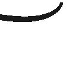
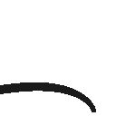
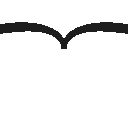
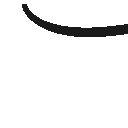
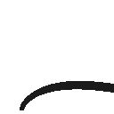
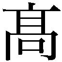

| ピグマリオン (光文社古典新訳文庫) | |
| バーナード・ショー | |
| (2013) | |
ピグマリオン
バーナード・ショー
小田島恒志訳
Title: PYGMALION
1912
Author: George Bernard Shaw
ピグマリオン──五幕のロマンス
登場人物
クララ・エインスフォード・ヒル
ミセス・エインスフォード・ヒル
居合わせた男
フレディ・エインスフォード・ヒル
イライザ・ドゥーリトル
ピカリング大佐
ヘンリー・ヒギンズ
皮肉な男
ミセス・ピアス
アルフレッド・ドゥーリトル
ミセス・ヒギンズ
メイド
場面
第一幕 セント・ポール教会のポーチコ、コヴェント・ガーデン、
午後一一時一五分。
第二幕 ヒギンズ教授の音声学研究室、ウィンポール・ストリート、
翌日、午前一一時。
第三幕 ミセス・ヒギンズのフラットの客間、チェルシー河岸、
数か月後、夫人の招待日。
第四幕 第二幕と同じ、数か月後、真夜中。
第五幕 第三幕と同じ、翌朝。
舞台演出部への注
この版［一九四一年版］になって初めて活字で紹介されたト書き部分を完全にそのまま上演するのは、映画のスクリーン上かよほど設備の整った舞台上でないと技術的に不可能である。通常の劇場での上演には、＊印で分けられた箇所を省略することもできるだろう。
会話の中で「ｅ」の文字を上下逆さまに書いてあるところは、「不定母音」を表わしている。時には「曖昧母音」あるいは「中庸母音」と言われるもので、英語の会話の中で最もよく使われる音の一つだと言うのに、我々の貧弱なアルファベットにはこれを表わす文字がない。
訳注 これはショー自身がつけた注。むろん日本語訳を読むうえでは、後半部分に関しては意識する必要はないが、ここでは原書通りに訳出している。
序文（１） 音声学の教授
後で分かるように、『ピグマリオン』に必要なのは序文ではなく後日譚であり、それはすでに書くべき場所に書いた。
イギリス人は自国語を大切に思わず、子供たちに正しい喋り方を教えようとしない。文字と音とが一対一に対応するのは子音だけ──それも全部ではない──という古い外国のアルファベット以外に書き表わす道具がないために、正しく綴ることもできない。このため、読んだだけでは誰にも正しい発音の仕方が分からない。だから、イギリス人は口を開けば必ず他のイギリス人の失笑を買うことになる。たいていのヨーロッパの言語は、文字で書いてあれば外国人にも読み方が分かる。英語とフランス語は、当のイギリス人とフランス人にさえ読むのは難しい。これを改革するのに今日最も必要とされるのは、この道の精力的な情熱家である。私が芝居の主人公にそのような人間を選んだのはこういうわけである。
世に容れられぬ改革を何年も叫び続けてきたこの手の英雄はこれまで何人も実在した。私がこのテーマに興味を持つようになった一八七〇年代の終わり頃、「視話法（２）」の創案者で有名なアレクサンダー・メルヴィル・ベルはカナダへ移住してしまっており、かの地で息子が電話を発明していた。アレクサンダー・Ｊ・エリス（３）は、長老としてロンドンに留まっていたが、いつも頭にビロードのスカルキャップを被っているのが印象的で、公の場で人に会うときはいつも極上の礼儀作法で着帽の非礼を詫びるのだった。彼と、もう一人のベテラン音声学者ティト・パグリアルディーニ（４）の二人は、到底嫌うことなどできないような好人物だった。ヘンリー・スウィート（５）は、当時まだ若かったが、名前に似合わず、先輩方のような甘く優しい気質を欠いていた。因習的な人間に対して甘いところを見せるとしたら、それはせいぜいイプセン（６）やサミュエル・バトラー（７）と同程度のものだった。音声学者としての能力は高く（私が思うに、この職にある人物の中で最高）、天下に表彰されてこの学問をもっと世に広めることができていたかもしれないのだが、音声学よりもギリシャ語に重きを置く学会の権威やその他一般の人々に対する悪魔のような侮蔑的態度が仇となった。一度、サウス・ケンジントンに帝国協会（８）が建てられて、ジョゼフ・チェンバレン（９）が大英帝国を盛りたてていた頃に、私はある主要な月刊批評誌の編集者を説いて、帝国における音声学の重要性についてスウィートに原稿を依頼させた。原稿が届いてみると、そこにはある言語・文学の教授に対する激しい侮蔑的な攻撃が書かれているばかりで、スウィートは、その教授の椅子は音声学の専門家にこそふさわしいと考えていた。中傷記事であるため、掲載不可能ということで、原稿を送り返すしかなかった。そして、スウィートに脚光を浴びさせようという私の夢も諦めざるを得なかった。その後、随分しばらくぶりに彼に会った時、驚いたことに、もとはかなり見栄えのする若者だった彼は、全くの侮蔑心から自らの外見を変えてしまい、オックスフォードとその伝統すべての「否認の権化」になっていた。きっとそこで音声学の講師職という立場（10）に圧し込められているのが不本意だったに違いない。音声学の未来は、彼に心酔する教え子たちに託されることになった。だが、何をもってしてもこの男を大学の意に従わせることはできなかった。実にオックスフォード的なやり方で、神聖な冒すべからざる権利としてそこにしがみついていたのではあったが。彼の論文には、もしまだ残っていればだが、恐らく五十年後ならそれほど破壊的な結果をもたらすことなく出版できるような風刺が含まれている。彼は、私が思うに、少しも性根の悪い人間ではなかった。むしろその正反対である。だが、彼は喜んで愚か者の我慢をしようとは思わなかった。そして、彼にとって、熱烈な音声学者以外の学者は皆愚か者だった。
彼のことを知る者は、この芝居の第三幕で彼が葉書を書くときに使った「草書体速記」が仄めかされていることに気付くだろう。この書体はクラレンドン・プレスから出版されている四シリング六ペンスのマニュアルを見れば会得できる。ミセス・ヒギンズの葉書の描写は、まさに私がスウィートから受け取ったもののそれである。私はそこに、ロンドン訛りなら「ザーァ（zerr）」、フランス人なら「スュー（seu）」と表わすであろう音を読みとるのが精いっぱいで、一体全体どういう意味なのか教えてほしい、と手紙を書いた。スウィートは、私の愚かさを思いっきり蔑みながら返事をよこし、いや、意味どころか、これが「結果（Result）」という単語であることは明白だろう、この音を含み、文脈上意味を成す単語は、地球上で話されているどの言語の中にも、一体も全体も、他には存在しないのだから、と言ってきた。専門知識に劣る専門家には全部説明しなければならない、というのはスウィートには我慢ならないことだった。そういうわけで、彼の「草書体」は、言語の中にあるあらゆる音を、子音だけでなく母音も、完璧に表わすことができ、手は、簡単で何気ない「ｍ」「ｎ」「ｕ」を書くときに使う動きと「ｌ」「ｐ」「ｑ」を書くときに使う動きだけをすればいい、それも、どんな角度でも自分の一番楽な書き方で、というのが売りだったのだが、残念なことに、この驚くべき判読容易な書体を「速記」としても使うことにしたために、実際に彼が使うと、全く不可解な暗号文にしかならなかったのだ。彼の真の目標は、我らが英語のための完全な、正確な、判読容易な書体を提供することだった。が、一般に人気のピットマン式速記を、ピットフォール（落とし穴）式速記だなどと言って軽蔑しているうちに、置いて行かれてしまった。ピットマン式速記の成功は、ビジネス組織の成功だった。週に一度、ピットマン式速記を習うよう説得する宣伝が送られてくる。廉価な教則本と、練習ドリルと、模写用の演説集と、必要なだけの習熟度に至るまで経験豊かな教師が指導してくれる学校があった。スウィートにはこうやって組織的に自分の市場を開拓することはできなかった。いっそのこと、誰も注目しない予言の書かれた葉を破り捨てた巫女（11）のようになればよかったのに。四シリング六ペンスのマニュアルは、大部分が彼の肉筆のリトグラフで、俗っぽく宣伝されることはなかったが、ひょっとしたら、タイムズ紙がブリタニカ百科事典を売りだしたように、どこかのシンジケートの力で、大衆の目に触れるようになる日がくるかもしれない。が、それまでは、ピットマンの人気を凌ぐことはまずないだろう。私はこれまで、このマニュアルを三冊買った。それに、出版社に聞いたところ、このマニュアルは今も変わらず俗世間にさらされることなくひっそりと、だが確かに存在しているそうだ。私はスウィートの速記を一度ならず勉強した。しかし今これらの行を書きとめている私の速記はピットマン式である。なぜなら、私の秘書が、ピットマン式の学校で教わることを強制されてきたために、スウィート式を普通の文字に置き換えることができないからだ。アメリカでは、私はやはり商業的に組織化されたグレッグ式速記（12）を使うこともあるが、これはスウィート式からヒントを得たもので、文字をピットマン式のように幾何学的に線を引くのではなく、もっと書きやすく（スウィートなら草書体で、と言うところだ）改良したものだ。だが、スウィート式も含めてどの速記法も、逐語的報告に使えるようにしたため台無しになってしまった。逐語的報告を速記でするのに完全で正確なスペルや語分割に配慮することなど不可能なのだから。完全で正確な音声表記など、普通に使うのには実際的ではないし必要でもない。しかしもし、英語のアルファベットをロシア語ぐらいに拡張して、英語のスペルをスペイン語のように音声表記にすれば、速記法も大いに前進することだろう。
創造主ヒギンズはスウィートその人ではない。この人を相手にしていたらイライザ・ドゥーリトルの冒険は不可能だっただろう。それでも、これから分かるように、芝居の中にはスウィートの面影が見られる。ヒギンズの肉体と気性を持ち合わせていたら、スウィートは世間をあっと言わせるような大事業を成し遂げていただろう。ところが実際は、彼が個人的にはあまり知られていないことや、オックスフォードが彼の卓越ぶりを正当に量れなかったことが、外国の専門家たちには不思議でしょうがないほど、彼はヨーロッパの学会には強い印象を与えていた。私はオックスフォードを責めるつもりはない。と言うのも、オックスフォードだって、自分のところに抱えている人間にある程度は和やかな人付き合いを求めたって当然だろうから（それを求めることが行き過ぎではないことは神もご存じだろう！）。天才でありながら自分の専門分野を酷く過小評価されている人間にとって、過小評価している張本人であり、いいポストをたいして重要でもなく、オリジナリティもなく、時には能力すら持たずに教えているような専門分野で占めている人たちと、和やかな関係を築くのがいかに難しいか、私もよく分かってはいるが、それでも、もし彼が彼らを怒りと侮蔑でどやしつけるようなら、敬意を払ってもらおうと期待することはできないだろう。
最近の世代の音声学者たちについては、あまりよくは知らない。その中でロバート・ブリッジズ（13）が抜きんでていると思うが、ヒギンズのミルトンへの共感は、恐らく、彼に負うものだろう。もっとも、ここでもまた、そっくりそのままモデルにしたわけではないことは言っておかなければなるまい。しかし、この芝居が世の人々に音声学者なるものがあることを、そして、彼らが現在のイギリスで最も重要な存在だということを知らしめたとしたら、目的は果たしたことになるだろう。
『ピグマリオン』が舞台でも映画（14）でも、本国イギリスはもとより、ヨーロッパ中でも北アメリカでも大成功を収めたことは自慢しておきたい。これはきわめて教訓的になることを狙った芝居であり、テーマもドライなものであるが、これを、芸術は教訓的であってはならないと繰り返し唱えているお偉方連中の頭に投げつけてやれるのが嬉しい。偉大な芸術は教訓的にしかなり得ない、という私の考えを証明することになるだろう。
最後に、訛りのために良い仕事に恵まれないと悩んでいる人たちを励ますために言っておくと、ヒギンズ教授が花売り娘にもたらした変化は、不可能なことでも珍しいことでもない。一介の管理人の娘が、フランス座の舞台で『ルイ・ブラス（15）』のスペイン女王を演じて夢をかなえたのは、お国訛りを封印して新しい語り口を獲得した何十万もの人たちの一例である。ウェストエンドの店の店員も家にいる使用人たちもバイリンガルである。しかし、言葉の矯正は科学的に行わなくてはならない。さもないと、出来上がりが前より悪くなってしまうかもしれない。誠実なスラム街訛りの方が、発音の教育を受けていない人物による富豪を真似た喋り方より、はるかに我慢できる。この戯曲を読んだ花売り娘たちは、指導も受けずに真似だけで自分も貴婦人で通るなどと思わないほうがいい。もう一度アルファベットを音声学の専門家から学習し直さなくてはならない。物真似ではただ自分が滑稽になるだけである。
１ 「序文」は最初一九一六年頃の版につけられ、一九四一年の決定版発行の際に加筆・修正された。なお、題名の「ピグマリオン」はギリシャ神話に出てくるキプロス王のこと。彫刻家でもある彼は現実の女性たちに幻滅し、理想の女性としてみずから象牙で彫り上げた像ガラテアに恋をし、アフロディーテに祈って像に生命を与えてもらい結婚することになる。
２ アレクサンダー・メルヴィル・ベル（一八一九─一九〇五）が創案した表音アルファベットのこと。ベルは一八七〇年にカナダに移住し、一八七六年、そこで息子のアレクサンダー・グレアム・ベルが電話を発明した。
３ イギリスの言語学者、音声学者。一八一四─九〇。
４ ロンドンを拠点にしていたイタリア人歌手、教師。一八一七─九五。
５ イギリスの音声学者、英語学者。学問的な英語学の創設者と言われている。一八四五─一九一二。
６ ノルウェーの劇作家ヘンリク・イプセン（一八二八─一九〇六）。近代演劇の父と呼ばれる。『人形の家』（一八七九）、『ヘッダ・ガーブレル』（一八九〇）など。イプセンに大きな影響を受けたショーは『イプセン主義の精髄』（一八九一）を書いている。
７ イギリスの小説家。風刺的ユートピア小説『エレホン』（一八七二）など。ショーに影響を与えた。一八三五─一九〇二。
８ ヴィクトリア女王の即位六十年を記念して、一八八七年から一八九三年にかけて、サウス・ケンジントンに創設された。資源の開発、科学研究など、大英帝国の発展に寄与することを目的としていた。
９ イギリスの政治家。一八九五年から一九〇二年まで植民相として帝国の発展のために活躍した。一八三六─一九一四。
10 スウィートは一九〇一年にオックスフォード大学の音声学の講師に就任した。
11 古代ギリシャの都市エリュトライで、葉の上に予言を書いたとされる「エリュトライの巫女（シビュラ）」のことかと思われる。
12 アイルランド出身のジョン・ロバート・グレッグ（一八六七─一九四八）が、さまざまな速記を学んで一八八八年に考案した速記法。現在でも英語圏で広く用いられている。
13 イギリスの詩人。一九一三年に桂冠詩人になった。同年、「純粋英語協会」を創設。一九二六年にはＢＢＣ「発音委員会」の初代会長になったが、その椅子は三〇年にショーが引き継いだ。一八四四─一九三〇。
14 一九三八年の映画の成功を踏まえて一九四一年の版に挿入した表現。
15 ヴィクトル・ユーゴー作のメロドラマ。初演は一八三八年。
第一幕
ロンドン、午後一一時一五分。激しい夏の雨。必死にキャブ（１）を呼ぶ口笛の音があっちこっちで聞こえる。通行人たちは雨宿りするためにセント・ポール教会（クリストファー・レン設計のセント・ポール大聖堂ではなく、コヴェント・ガーデンの野菜市場前にあるイニゴ・ジョーンズ設計の教会）のポーチコ［屋根付きの柱廊］に駆け込んでくる。その中にイヴニングドレス姿の貴婦人とその娘がいる。人々が皆、いまいましそうに雨を見つめている中、一人だけ、他の者に背を向け、手に持った手帳に何かメモすることに没頭している男がいる。
教会の時計が「最初の一五分の鐘」［つまり、一一時一五分］を打つ。
娘 （中央の柱と柱の間、上手側の柱の近くで）うぅぅ身体の芯まで冷えてきた。フレディ（２）ったら、何グズグズしてるのかしら？ もう二〇分はたつっていうのに。
母親 （娘の下手側に立って）まだそんなにはたってないでしょう。でも、もう捕まえてもいい頃ね。
居合わせた男 （貴婦人の下手側で）車ぁ、一一時半までは無理だよ、奥さん、劇場帰りの連中を送って戻ってくるまではね。
母親 でも、私たちには車がないと。こんなところで一一時半まで待てるわけないじゃありませんか？
居合わせた男 んなこたあっしに言われたって。
娘 フレディがもうちょっと気が利いてたら、劇場の前で捕まえられたのに。
母親 あの子には無理よ、そんなこと。
娘 みんな車に乗ってるじゃない。どうしてフレディにはできないの？
フレディがサウサンプトン・ストリートの方（３）から雨の中を駆け戻ってくる。母娘の間に立ち、水のしたたる傘を閉じる。二十歳の青年。夜会服を着て、くるぶしのあたりがびしょ濡れである。
娘 車、捕まった？
フレディ いや、空いてる車は一台も見当たらない。
母親 あら、フレディ、一台ぐらいあるでしょう。まったく、ちゃんと探しもしないで。
娘 ああもううんざり。なあに、私たちに探しに行けって言うの？
フレディ だから、もう全部ふさがってるんだって。急に降り出したもんだから、みんな慌てて車捕まえて。この先をチアリング・クロスまで、こっち側はラドゲイト・サーカスのあたりまで行ってみたけど、全部ふさがってた。
母親 トラファルガー・スクエアは行ってみた？
フレディ トラファルガー・スクエアにだって一台もありゃしないよ。
娘 行ってみたの？
フレディ チアリング・クロス駅までは行ってみた。何、そのままハンマースミスまで行けって言うの？
娘 ほんとは全然探してないんだ？
母親 もう、役に立たない子ね。フレディ、もう一度行ってらっしゃい。今度は捕まるまで帰ってきてはいけません。
フレディ 無駄に濡れるだけなんだけど。
娘 じゃあ、私たちはどうなるの？ こんな吹きっさらしで、上に羽織るものもないまま一晩過ごせって言うの？ よくそんな身勝手なことを──
フレディ わかったわかった。行ってくる。
彼は傘を開くとストランド街のほうへ走って行く。が、そのまま、雨宿りしようと走ってきた花売り娘にぶつかってしまい、彼女の手から花籠を叩き落としてしまう。ピカッと稲妻が走り、すぐ後に雷鳴がゴロゴロと轟き、この出来事を演出する。
花売り娘 あんだこらぁ、フレディ。どこ目ぇつけてやがんでぇ。
フレディ 失礼。（走って去る）
花売り娘 （散らばった花を拾って籠に戻しながら）マナーっつぅもんを知らねぇんか！ ったく、スミレが二本、泥んこになっちったよ。
彼女は貴婦人の下手側の柱の台座に腰を下ろし、花を仕分けする。まったくロマンチックな雰囲気のない娘。恐らく、十八歳から二十歳ぐらい、それ以上ということはなさそう。長年ロンドンの埃と煤にさらされて、めったにブラシをかけたことのない小振りで山の低い婦人用麦わら帽を被っている。彼女の髪の毛は見るからに洗髪の必要がありそう──ネズミ色にくすんでいて、天然の色のわけがない。安物の黒いコートを着ていて、丈は膝近くまでとどき、腰のあたりは身体の線にぴったりあっている。茶色のスカートに粗末なエプロンを着けている。履きつぶされた深靴。彼女は可能な限り清潔にしているが、貴婦人たちに比べるとひどく汚らしい。容貌は決して見劣りはしないが、手入れをしたほうがいい様子。歯の治療も受けた方がいい。
母親 ねえ、あなたどうしてうちの息子の名前がフレディだって知ってるの？
花売り娘 お、あれぁあんたの息子かい？ ったく、どういう躾してんだかねぇ、貧しい花売り娘の商売もん台無しにしちまって、おあしも払わずドンズラかい。まあいいや、あんたに払ってもらおうか（４）？
娘 だめよ、お母様、そんなことしちゃ。冗談じゃない！
母親 いいから、クララ、あなた小銭持ってない？
娘 いいえ。六ペンス（５）より小さいのは持ってません。
花売り娘 （期待して）六パンスで釣りぃ払うよ、奥さん。
母親 （クララに）貸して。（クララはしぶしぶ渡す）はい（花売り娘に）、じゃこれ、花代ね。
花売り娘 あいどうも、毎度ありぃー。
娘 お母様、ちゃんとお釣りを受け取らないと。そんなもん、一束一ペニーがいいところよ。
母親 いいから黙ってなさい、クララ。（花売り娘に）お釣りはいいから、とっておいて。
花売り娘 おょ、どうもすんませんねぇ。
母親 それで、どうしてあの子の名前を知ってるのか、教えてちょうだい。
花売り娘 ううん、知らね。
母親 ごまかさないの。ちゃんと名前を呼ぶのが聞こえましたよ。
花売り娘 （抗議して）ごまかしちゃいねえって。知らねぇ男に愛想よく声かけんなら、フレディかチャーリーって相場が決まってんだ。
娘 六ペンス、ドブに捨てたわね、お母様、フレディにあげればよかったのに。（クララはうんざりして柱の向こうに引っこむ）
人のよさそうな軍人風の年配の紳士が雨宿りに駆け込んできて、水の滴る傘を畳む。フレディと同じ悲惨な状態でくるぶし辺りがびしょ濡れである。夜会服の上に薄手のコートを着ている。娘が奥へ行ったために空いたスペースに入る。
紳士 ふーっ！
母親 （紳士に）どうです、やみそうにないですか？
紳士 いや、無理でしょう。今また一段と強く降ってきましたから。（彼は、柱の台座の花売り娘の横へいく。片足を載せて、ズボンの裾を下ろそうと前に屈む）
母親 ああ、もう！（彼女は悲しげに奥の娘のいるところへ行く）
花売り娘 （軍人風紳士が近くにいることを利用して、友好的な関係を築こうとする）一段と強くなったってこたぁ、もうすぐ止むってこったよ。だからさぁ、大将、ぶわっと景気づけに花買っちくんない？
紳士 申し訳ないが、小銭を持っていなくてね。
花売り娘 ちゃんと釣りは払うって。
紳士 一ポンド金貨に？ 今はそれより細かいのがない。
花売り娘 うそだぁー！ なぁ、花ぁ買っちくりよ、大将。半クラウンなら崩せっからさ。一束二パンスでいいんだよ。
紳士 そう無理を言わないで、ね、いい子だから。（ポケットの中を探る）ほんとに小銭がなくて──いや、待った。半ペニー銅貨が三枚あった、さあ、これでよければ。（もう片方の柱の方へ引っ込む）
花売り娘 （がっかりするが、半ペニー三枚は何もないよりマシだと思って）あんがと、大将。
居合わせた男 （花売り娘に）気をつけな。ちゃんと花を渡して花代ってことにしねえと。さっきからお前さんの言ってることをメモしてるやつがいる。（一同、メモをとっている男の方を向く）
花売り娘 （怖くなって跳び上がる）あちしはただあの旦那と喋ってただけで、あんもおかしな真似ぁしちゃいねえよ。舗道にさえ立たなかったら、花ぁ売ったっていいあずだろう。（ヒステリックに）あちしゃーまっとうな女なんだ、本当だよ、ただ花買っちくりっつってただけじゃねぇか。
周りからざわめきが起こる。主に花売り娘に同情する声だが、彼女の過剰反応には批判的である。「大きな声をださないで」「誰にいじめられてるんだい？」「誰にも手出しはさせねえよ」「大騒ぎしたってしょうがない」「落ち着いて」「いいから、いいから」などの叫び声が、年配の落ち着いた見物人たちから上がる。彼らは慰めるように彼女をポンポンと叩く。いらいらしている人たちは、彼女に「うるせえ黙れ」とか「どうかしてんじゃねえのか」などと乱暴に言ったりする。離れた所にいた人たちは、何が起こったのか分からず、集まってきて、「質疑応答」の騒音を増幅する──「何の騒ぎだ？」「何したんだ、あの女？」「男はどこだ？」「デカが女を捕まえるって」「なに！ あいつか？」「そう。あそこのあれ。あっちの紳士から金をとったらしい」などなど。
花売り娘 （群衆の間を縫って、泣き叫びながら紳士に向かって行く）ああ、旦那、あちしんこと、しょっぴかせたりしないでくりよ。あんたにゃわかんねぇだろうけど、あいつら、あちしの評判にケチつけて、本当に町の女にしちまおうって腹なんだ。あいつらぁ──
メモを取る男 （彼女の下手側に歩み出てくる。周りの連中も後ろに群がってくる）おい！おい！ おい！ おい！ 誰が誰をしょっぴくって？ バカを言うんじゃない。わたしを何だと思ってるんだ？
居合わせた男 お、大丈夫、この人はそういうアレじゃねえ、ほら、靴を見てみろ。（メモを取る男に説明する）この子は旦那をサツのむわしもんだと思ったんだよ。
メモを取る男 （即座に興味を持って）何だ、その、サツのむわしもんって？
居合わせた男 （定義できず）そりゃ、サツのむわしもんってのは──サツのむわしもんだ。ほかにどう言えっつーの？ まあ、なんだ、たれこみ屋？
花売り娘 （いまだヒステリックに）なあ、聖書にかけて誓うよ、あちしゃ一言だって──
メモを取る男 （居丈高に、だが、機嫌良く）ああもう、わかったわかった、そうわめくな。わたしが警察官に見えるのか？
花売り娘 （全然気が休まらず）じゃあ、何だってあちしの言ってるこたぁメモしちたんだよ？ ちゃんと言ったとおりに書いちっかわかったもんじゃねえや。ちょっとそれ、見しちくんない？（メモを取る男は手帳を開いて彼女の鼻先にしっかり開いて掲げて見せる。彼の肩越しに覗きこもうとする群衆のプレッシャーに、気の弱い男なら動揺するだろうが、彼はものともしない）あんだ、このへんてこな字？ 読みゃーしねえ。
メモを取る男 わたしには読める。（読み上げる。彼女の訛りを正確に再現しながら）「だからさぁ、大将、ぶわっと景気づけに花買っちくんない？」
花売り娘 （ひどく落ち込んで）ああ、そうかい、大将って呼んだのがいけなかったんかい。別にわるぐぢじゃねえだろ？（当の紳士に向かって）なあ、旦那ぁ、んな呼び方ぐれーで訴えたりしねえでくりよ。あんただっちさあ──
紳士 訴える!? そんなことはしませんよ。（メモを取る男に）いや、もし本当に刑事さんなら、手出しはご無用です。こちらから頼みもしないのに、わざわざわたしを若いご婦人から保護してくれる必要はありません。その人に悪意がないことは誰の目にも明らかですから。
周りのヤジ馬たち （警察の諜報活動に抗議する姿勢を見せて）「そうだそうだ！」「サツの出る幕じゃねえよ」「他にやるべきことがあんだろ？」「点数稼ぎすんじゃねえ」「人の会話をメモしやがって！」「その子は何も言っちゃいねえよ」「言ったからって何が悪い？」「若い女が雨宿りしたってだけでケチつけられなきゃなんねえのか」（などなど。彼女は特に同情的な支援者たちに促されてもとの柱の台座に戻され、再び腰を下ろし、自分の感情を必死に抑える）
居合わせた男 いや、おまわりじゃねえって。ただの出しゃばり野郎だ、ほら、靴見てみ？
メモを取る男 （彼の方を向いて、愛想良く）ところで、セルシーのご家族は、お元気かな？
居合わせた男 （訝しがって）オレがセルシーの出だって誰に聞いた？
メモを取る男 誰だろうと、そう聞こえた。（花売り娘に）で、どうして君は、こんな東にまで出てきたんだ？ リッスン・グローヴの生まれだって言うのに？
花売り娘 （ぎょっとして）あんだよ、リッスン・グローヴを出ちゃいけないっつーのかよ？ あんなとかぁブタも住めやしねえや。っつーのに、週四シル六パンスも取られちたんだ。（泣きだして）うぅぅ、うぇーーん、・ぇーーん──
メモを取る男 どこに住もうが勝手だが、そのやかましい騒音はとめてくれ。
紳士 （花売り娘に）さあ、さあ、手出しはさせないから安心しなさい。あなたはどこに住むのも自由ですよ。
皮肉な男 （メモを取る男と紳士の間に割って入って）なんなら、パーク・レーンなんていいんじゃねえか？ 住まいの相談、乗ってやるよ。
花売り娘 （籠の花を見つめて陰鬱に考え込み、ひどく落ち込んだ声でつぶやく）あちしゃ、まともな女なんだ。
皮肉な男 （彼女を気に掛けずに）あんたさぁ、オレの出身もわかるかい？
メモを取る男 （即座に）ホクストン。
クスクスと笑い声が起こる。メモを取る男のパフォーマンスに関心が高まってくる。
皮肉な男 （驚嘆して）ありゃあ、ばればれだ。あんた、何でもわかるんだねえ？
花売り娘 （いまだに傷ついた気持ちを自分で慰めながら）偉そうに、人んこと、なぶりもんにしやがって......
居合わせた男 （彼女に）そうそう、我慢するこたぁねえよ。（メモを取る男に）なああんた、何だって、そんなに人のこと何でもわかんだ？ 誰もなんも教えちゃいねえってのに？
花売り娘 いわしときなよ。かかわり合いにゃなりたくねえや。
居合わせた男 オレたちのことをその辺の泥みてえに踏みつけられると思ってんだろ、けどなぁ、こちらの紳士様にはそうはいかねえ。
皮肉な男 そうそう、そのお得意の占いで、この人の出身地も当ててみ？
メモを取る男 チェルトナム、ハロー校、ケンブリッジ大学、それからインド。
紳士 その通り。
どっと笑いが起こる。メモを取る男に対して好意的な反応。様々な叫び声──「何でも知ってるぞ」「見事言いあてた」「聞いたか、あの紳士の経歴をすらすらと」などなど。
紳士 失礼ですが、ミュージックホールか何かで、そういう芸当を披露なさってるのですか？
メモを取る男 それもいいなと思ったこともあるけど。いずれやってみましょう。
雨はすでにやんでいる。群衆の外側の人々は散り散りになり始める。
花売り娘 （反応に腹を立てて）そんなやつ、まっとうな紳士なもんか、貧しい若い女をいたぶって。
娘 （我慢できなくなり、乱暴に人を押しのけて前に出てくる。例の紳士のことも押しのけるが、紳士は礼儀を逸することなく、柱の反対側に移動する）フレディったら、何やってんのかしら？ これ以上こんな吹きっ曝しにいたら肺炎になっちゃう。
メモを取る男 （娘の「肺炎」の発音を急いでメモして、独り言で）アールズコート。
娘 （荒々しく）そういう無礼な物言いはやめてくれません？
メモを取る男 聞こえちゃいましたか？ いや、それは失礼。ちなみに、お母様の生まれは、エプサム。
母親 （娘とメモを取る男の間に進み出て）え、どうして？ 確かに私は、エプサムの近くのラージレディ・パークで育ちましたけど。
メモを取る男 （大いに面白がって）はっ、はっ、こりゃいい！ ラージレディとは！ あ、失礼。（娘に）車を呼びたいんでしょう？
娘 話しかけないで。
母親 クララ、失礼ですよ。（娘は怒って肩をすくめて見せて、偉そうに引っこむ）ええ、車を見つけて頂けたら、本当に助かります。（メモを取る男は呼び笛を取り出す）あら、どうもありがとう。
母親は娘のところへ行く。メモを取る男はけたたましく笛を吹き鳴らす。
皮肉な男 ほらみー！ やっぱ私服のおまわりだったわ。
居合わせた男 ありゃ警察の笛じゃねえよ。狩りで使うやつだ。
花売り娘 （いまだに感情を傷つけられたことしか頭にない）あちしの評判を落とそうったってそうはいくかぁ。評判にかけちゃそこいらのレディと変わんねえんだ。
メモを取る男 気がついてないようだけど、雨はもう二分ほど前にやんでるよ。
居合わせた男 あんだょ、言ってくれりゃいいじゃん。とんだ与太話に付き合わされちまった。（彼はストランド街の方へ歩き去る）
皮肉な男 オレも当ててやろうか、あんたがどっから出てきたか。アンウェルだろ？ アンウェル精神病院。
メモを取る男 （直して）ハンウェル。
皮肉な男 （仰々しく発音して）これはこれはご教授ありがとござりまする。はっ！ んじゃ。（帽子の縁をつまんで偽りの敬意を見せて立ち去る）
花売り娘 人をコケにしやがって！ 自分がやられてみろってんだ。
母親 さあ、雨もすっかり上がったようだから、クララ、バス停まで歩きますよ。いらっしゃい。（スカートをくるぶし上までたくしあげて、ストランド街の方へ急いで出て行く）
娘 でも、車が──（母親にはすでに聞こえていない）ああ、もうやだぁー！（怒って後を追う）
一同立ち去り、メモを取る男と、紳士と、花売り娘だけが後に残る。花売り娘は座って花籠の中身を整え、いまだにぶつぶつと自分を憐れんでいる。
紳士 （メモを取る男の上手側の先ほどまでいた場所に戻ってきて）先ほどのアレ、どうやって当てるのか、教えてもらえませんか？
メモを取る男 ただの音声学ですよ。言語の科学。それを仕事にしてまして。趣味でもある。好きなことをやって食べていけるなんて、幸せ者です！ まあ、誰だって泥臭い訛りを聞けばアイルランド人かヨークシャー者だろうって分かるでしょう？ わたしの場合、六マイル圏内に出身地を特定できます。ロンドンなら二マイル圏内。時には通りを二本以内に絞れることもある。
花売り娘 恥を知れってんだ、恥を、ったく、大の男が！
紳士 けど、それがお仕事になるんですか？
メモを取る男 ええ、なりますよ、かなり身入りのいい仕事にね。今は成りあがりもんの時代です。ケンティッシュ・タウンで年収八〇ポンドだった男が、年に一〇万も稼いでパーク・レーンに暮らすようになる。昔のことは拭い去りたいのに、口を開けばお里が知れてしまう。そういう連中に教えてやるわけですよ──
花売り娘 よけーなお世話だね、あちしみたいなか弱い乙女ゃー──
メモを取る男 （爆発して）やかましい、ぎゃあぎゃあ騒ぐんじゃない。そんなにわめきたければ、そういう宗教団体でも探しに行くんだな。
花売り娘 （弱々しくも抵抗して）あんでえ、どこにいようがあちしの勝手だろ。
メモを取る男 いいや、こんなに耳障りな騒音を発する女はどこにもいる権利はない──生きている権利もない。いいか、人類は魂と言葉を発する能力を神から授かったんだ、しかもお前が生まれたのは、シェイクスピアやミルトンや聖書の言葉を喋る国だ、そんなとこに座って癇癪持ちの鳩みたいにぐうぐうぐうぐう唸るんじゃない。
花売り娘 （すっかり圧倒されて、頭を完全には上げられないまま、驚嘆と非難の混ざった感情で彼を見上げて）ぅぅぅううぇぇぇえええ！
メモを取る男 （手帳を取り出して）すごい！ ひどい音だ！ （メモを取る。それから手帳を掲げて読み上げ、正確に彼女の声色を再現して見せる）ぅぅぅううぇぇぇえええ！
花売り娘 （彼がやってみせたことを面白がって、意に反して笑う）すっげー！
メモを取る男 どうです、このドブ板に泥水を流したような英語の発音は、これじゃ一生貧民街から出ることはない。けど、わたしなら、三か月でこの子を大使館の園遊会でも公爵夫人として通用するようにして見せます。なんなら、ちゃんとした英語を喋る必要のある仕事に就けてやることもできる、奥様付きの女中とか、店の店員とか。
花売り娘 あに言っちやがんでえ？
メモを取る男 本当さ、お前みたいな腐ったキャベツでも、美しい建造物の台座をけがす汚点でも、英語に対する侮辱の化身でも、シバの女王のようにして見せるって言ってるんだ。（紳士に）信じられますか？
紳士 ええ、もちろん。わたし自身、インドの方言を研究していまして──
メモを取る男 （熱烈に）本当に？ じゃあ、ピカリング大佐をご存じですか、口語サンスクリット語の本を書いた──？
紳士 わたしがそのピカリングです。あなたは？
メモを取る男 ヘンリー・ヒギンズ、ヒギンズ式普遍アルファベットのヒギンズです。
ピカリング （熱烈に）わたしはあなたに会いにインドから出て来たんですよ。
ヒギンズ わたしはあなたに会いにインドへ行こうと思ってました。
ピカリング お住まいはどちらですか？
ヒギンズ ウィンポール・ストリート二七番のＡ、明日にでも是非おいでください。
ピカリング わたしは今、カールトンホテルです。よかったらこれから食事でもご一緒しながら、大いに語りあいませんか。
ヒギンズ いいですね、ぜひ。
花売り娘 （ピカリングが前を横切った時に）なあ、親切な旦那、花買っちくりよぉ。今夜の宿代もないんだ。
ピカリング 本当に細かいのがないんだ。申し訳ない。（先へ行く）
ヒギンズ 噓つき女め、半クラウンならくずせるって言ってたくせに。
花売り娘 （立ち上がって捨てばちに）やかましい、くずした金をそんバカ口に突っ込んぢやろうか？（彼の足もとに花籠を放って）持ってけ泥棒、全部まとめて六パンスにしちやらぁ。
教会の時計が二番目の一五分の鐘［一一時半］を告げる。
ヒギンズ （鐘の音に神の声を聞いて、貧しい娘に慈悲の心を欠いたパリサイ人のようだったと自責の念に駆られて）今夜の記念に。（厳かに帽子を取って敬意を示し、それから小銭を一つかみ、籠の中に投げ入れ、ピカリングの後を追う）
花売り娘 （半クラウン銀貨を拾い上げて）うぇぇぇ！ （フロリン銀貨を二枚ほど拾い上げて）うぇぇぇええ！（さらに硬貨を何枚か拾い上げて）ぅぅぅうううぇぇぇええ！（半ソヴリン金貨を拾い上げて）ぅぅぅうううぇぇぇええええ！！！
フレディ （タクシーから飛び降りて）ようやく一台つかまった。おーい！ （花売り娘に）あれ？ ここにいた二人のご婦人は？
花売り娘 雨がやんだんでバス停まで歩いちったよ。
フレディ 僕に車を押しつけたままで？ ひどいな！
花売り娘 （偉そうに）心配すんなって、お兄さん。あちしがテキシーでかえっから。（彼女は車にサッと近寄る。運転手が腕を後ろに伸ばして彼女を乗せまいとドアをしっかり閉めて押さえる。運転手の不信を理解して、彼女は手にいっぱいの金を見せつける）テキシー代なら心配いらねーよ、チャーリー。（運転手はニヤリと笑ってドアを開ける）よっしゃ。籠は？
運転手 そいつはここに。二ペンス増しね。
イライザ やだ。んなもん、人に見られたくねえ。（彼女は籠をタクシーに押し込んでから中へ乗り込み、窓越しに会話を続ける）じゃあね、フレディ。
フレディ （呆然としつつ帽子を取って）どうも、さようなら。
運転手 どちらまで？
イライザ バッキンガム宮殿。
運転手 なんだそりゃ──ベッキンガンちゅうでん？
イライザ あんだ、知らねーんかい、グリーン・パークん中んある、王様の住んでっとこ。じゃあね、フレディ。もういいよ、見送ってくんなくて。さいなら。
フレディ さようなら。（立ち去る）
運転手 そんで？ ベッキンガンちゅうでんだけど。なんのご用があるんです、そのベッキンガンちゅうでんに？
イライザ 用なんてあるわけねえだろ。あの人に知られたくなかっただけだよ。うちへやっちくり。
運転手 で、うちってのは？
イライザ ドゥルーリィ・レーンのアンジェル・コート、マイコージョンの油屋ん隣り。
運転手 ああ、そのほうがらしいよ、ジュディ。（車が走り去る）
＊ ＊ ＊
ドゥルーリィ・レーンのエンジェル・コートの入り口までタクシーを追って行くと、そこは二軒の店に挟まれた狭い拱道［アーチの下を通る道］。二軒のうちの片方がマイクルジョンの石油店。タクシーが停まり、イライザが籠を引っ張り出しながら降りてくる。
イライザ いくら？
運転手 （料金メーターを指しながら）読めないのかい？ 一シリング。
イライザ たった二分で一シリング!!
運転手 二分でも一〇分でもおんなじ。
イライザ ちっ、ぼったくりやがって。
運転手 タクシー乗ったことないんだ？
イライザ （いばって）何百回、何千回と乗ってらぁ。
運転手 （彼女の見栄を笑って）そうかい、ジュディ、そりゃよかった。ま、その一シルは大事に取っときな。んじゃ！
イライザ （プライドが傷ついて）なめんじゃねえや！
籠を手にとって、路地をとぼとぼ、自分の部屋へ向かって歩いて行く。小さな部屋。ひどく古い壁紙がところどころ湿って剝がれ、だらりと垂れ下がっている。窓ガラスの割れた所が一か所、紙で補修してある。人気俳優の肖像が一枚、貧しいイライザの資力では到底手の届かない婦人服の流行服装図が一枚、どちらも新聞から切り抜いたものだが、壁にピンで留めてある。窓辺に鳥籠が掛けてあるが、籠の「住人（鳥）」はずいぶん前に死んでしまった。思い出のためだけに掛けてある。
目に見える贅沢品はこれくらいである。後は、貧しい暮らしの中でこれ以上切り詰めようのない必要最低限のものしかない。暖を取れるだけ取るためにありとあらゆる布類が積み重ねてあるみすぼらしいベッド。クロス風に布を掛け、洗面器と水差しが置いてある木箱。その上の壁に掛かっている小さな鏡。椅子一脚、テーブル一つ。垢ぬけないキッチンから出る廃物。それに、使っていない暖炉の上の棚に置いてあるアメリカ製の目覚まし時計。これら全体が、一ペニー銅貨投入メーター式のガス灯に照らされている。家賃は週四シリング。
さて、イライザは、慢性的に疲れているのだが、今夜は興奮していて寝る気になれず、座って、新しく手にした財産を数え、これを何に使おうかと夢見たり計画したりしている。と、ガスが切れてしまう。が、彼女は生まれて初めて、出し惜しみせずにメーターにもう一ペニー投入できるという感覚を味わう。だからと言って、この贅沢気分は彼女の逼迫する経済観念を消し去るには至らず、火のないところに座って起きているよりベッドの中で夢見たり計画したりしたほうが安上がりだし暖かい、ということに思い当たる。そこで、ショールとスカートを脱いでベッドの上の雑多な布類に加えると、靴を蹴るように脱ぎ捨て、それ以上着替えることなくそのままベッドにもぐりこむ。
１ キャブ＝辻馬車またはタクシー。当時ロンドンでは両方走っていた。雨のときに口笛を吹いて捕まればどちらであろうと乗ったと思われるので、ここではどちらを呼んだと日本語で限定するわけにはいかない。以下、「車」と表記する。
２ 原文通りファーストネームで呼んでいるが、後日譚から判断すると娘＝クララは妹と考えられるので、日本語台本の場合、「お兄様」と呼び掛けるのが適当だと思われる。
３ 舞台では下手側（客席から見て左側）ということになる。
４ 原文ではこのあとで「ここまで花売り娘の台詞の訛りを音声表記で表わしていたが、ロンドンの人間にしかわからないので、ここからは普通に表記する」と断わっている。訳文では訛り（っぽい）表記を続ける。
５ 当時の硬貨は最小の半ペニーから順に一ペニー、二ペンス（ペニーの複数形）、六ペンスと銅貨があって、一二ペンス相当が一シリング銀貨。二〇シリング（＝二四〇ペンス）相当が一ポンド（ソヴリン金貨）になる。他に二シリング相当のフロリン銀貨、五シリング相当のクラウン銀貨、半クラウン銀貨（＝二シリング六ペンス）、半ソヴリン金貨（半ポンド＝一〇シリング）がある。
第二幕
翌日、午前一一時。ウィンポール・ストリートにあるヒギンズの自宅の研究室。街路に面した二階の一室で、もともと客間用の部屋だった。両開きのドアが後ろの壁の中央にある。そこから入ってくると、右側は部屋の角に沿って二つの背の高い整理カード戸棚が立っている。この隅に平らな書きもの机があり、その上に様々なものが載っている──蓄音機、喉頭鏡、ふいごのついた小さなパイプ音管が一列、ゴム管で壁のガス栓につないであるバーナーによって音を立てて炎が出るランプの火屋一式。様々な大きさの音叉数本、発声器官の断面がわかるように半分に切った人間の頭の実物大の模型、蓄音機用の蠟管（６）が備蓄してある箱。
さらに部屋の中を前に進むと、同じ側［入ってきて右側、すなわち舞台下手側］に暖炉があり、その傍らのドアに一番近いところに座り心地のよさそうな革張りの安楽椅子がある。それと石炭入れのバケツが一つ。マントルピースの上には置時計が一つ。暖炉と蓄音機の机との間に新聞立てがある。
中央のドアの反対側、入ってくる人の左側［すなわち舞台上手側］には浅い引き出しのキャビネットがあり、その上に電話機と電話帳が載っている。後ろの隅から手前にかけて上手側の壁の大半を塞ぐ形でグランドピアノが置いてある。鍵盤がドアから遠い側［すなわち手前側］に向いている。それと、鍵盤の長さいっぱいに広がる演奏者用のベンチが一脚。ピアノの上に果物と菓子（ほとんどチョコレート）を盛ったデザート・スタンドが置いてある。
部屋の真ん中には何もない。安楽椅子とピアノのベンチと蓄音機の机にある椅子二脚の他に、椅子が一脚、暖炉の近くにぽつんとある。壁には版画が数枚。主にピラネージ（７）の作品とメゾチント彫法の肖像画。油絵や水彩画はない。
ピカリングが机に向かって座り、今まで使っていた何枚かのカードと一本の音叉を下に置く。ヒギンズが彼の近くに立っていて、開け放しになっていたカードの引き出しを三か所、閉める。朝日の中で、彼は頑健な、生き生きとした、魅力的な、四十そこそこの男として映る。いかにも知的職業の者らしい黒いフロックコートに白いリンネルのカラーと黒いシルクのネクタイをつけている。エネルギッシュな科学者タイプで、科学研究の対象となるあらゆるものに熱心に、時に激烈に興味を持ち、自分のことも他人のことも、他人の感情すら一切気にかけない。実際のところ、彼は年齢と身体の大きさを除けば、何にでも手を出して大騒ぎしたがる「知恵のついた」赤ん坊のように落ち着きがなく、見張っていないと知らない間に何か意図せぬ悪戯をしかねない。その態度は、機嫌のいい時のにこやかなガキ大将ぶりから、何かがうまくいかないときの嵐のような癇癪持ちにいたるまでさまざまに変わる。だが、実に率直で悪意のない人間で、最も無茶なことを言っている時でも憎めない。
ヒギンズ （最後の引き出しを閉めて）さてと、これで全部。
ピカリング 驚きました。半分もわからなかった。
ヒギンズ もう一度、どれかやってみます？
ピカリング （立ちあがって、暖炉のところへ行く。背中を火に向けて温まるつもり）いや、もう結構。今朝はもう、参りました、降参です。
ヒギンズ （ピカリングについて行って、彼の左側に立つ）さすがに疲れちゃいましたか、音に耳を傾けるのは？
ピカリング ええ。おそろしい緊張ですからね。わたしはこれまで、二十四種類の母音を使いわけられるってことで自惚れてました。あなたの百三十種類には到底かなわない。ほとんど違いが聞き取れなかった。
ヒギンズ （くすくす笑って、お菓子を食べにピアノの所へ歩いて行って）なあに、訓練のたまものですよ。最初は違いなんかさっぱりわからない。けど、聞き続けていれば、ある日突然、ＡとＢぐらい違うことがわかる。（ミセス・ピアスが部屋を覗く。彼女はヒギンズの家の家政婦）ん、どうした？
ミセス・ピアス （明らかに困惑した様子で、ためらいつつ）若い女の方が先生にお目にかかりたいと。
ヒギンズ 若い女！ 何の用だって？
ミセス・ピアス それが、その、自分が何をしに来たか分かれば、先生は喜んで会うはずだと申してまして。あまり品のよろしくない、いえ、ものすごく下品な娘です。追い返してもよかったんですが、もしかしたら、あの子の喋る声をその機械に録音されたいんじゃないかと思いまして。出過ぎたまねをしてすみません。でも、先生はいつもひどく変わった人たちとお会いになられるので、きっと──
ヒギンズ ああ、構わないよ、ピアスさん。その娘、面白い訛りでもあるのかい？
ミセス・ピアス そりゃもう、恐ろしく訛ってます。面白がってる場合じゃありません。
ヒギンズ （ピカリングに）会ってみましょう。ピアスさん、その娘をここへ。（彼は書きもの机に走って行って、蓄音機用の蠟管を一つ取り出す）
ミセス・ピアス （半ば諦めたように）かしこまりました。では仰せのままに。（下へ降りて行く）
ヒギンズ ちょうどよかった。記録の取り方をお見せしましょう。その娘に喋らせて、それをまずベル式表音記号で、次に簡略ローミック記号で書き取る。さらに、書いた記号と照合しながら何度でも聞けるように、蓄音機に録音する。
ミセス・ピアス （戻ってきて）こちらのお嬢さんです。
花売り娘が盛装し威儀を正して入ってくる。オレンジ、スカイブルー、赤色のダチョウの羽毛が三本付いた帽子を被っている。かろうじて清潔と言えそうなエプロンをつけ、まがいものの再生毛織のコートを少しは綺麗に整えてきたようす。その無邪気な虚栄心ともったいぶった態度にピカリングは胸を打たれる。彼はすでにミセス・ピアスが同席していることで姿勢を正して礼儀を尽くしている。が、ヒギンズのほうは、相手が女性ということで態度に違いを見せるとしたら、威張り散らすか、天に向かって何か取るに足りない苦難を嘆いて見せる以外には、乳母を宥めすかしてものをねだる子供のように女性を宥めるぐらいである。
ヒギンズ （彼女が何者か分かって明け透けに失望して見せ、同時に、赤ん坊のように露骨に不満たらたらの態度で、ぶっきらぼうに）なんだ、ゆうべメモした娘じゃないか。これはもういい、使いもんにならない。リッスン・グローヴ訛りのデータはあらかたとったし、新しいシリンダーを無駄遣いしたくない。さあ、帰った帰った。君に用はない。
花売り娘 なんでえ、偉そうに。何しに来たのか聞きもしねえで。（ドアのところで次の指示を待っているミセス・ピアスに）あちしがテキシーでいらっしゃりましたっちってくれたんか？
ミセス・ピアス 何言ってんの！ あなたが何に乗ってこようと、先生のような方の知ったこっちゃありませんよ。
花売り娘 そいつぁご挨拶だね！ まさか教えるのがやだっつうんじゃねえだろうな、この人、自分でやるっちったくせに。さあ、ご挨拶はいらねえよ。あちしの金じゃ足りねえっつうんだったら、他をあたるまでだ。
ヒギンズ 足りない、って何が？
花売り娘 あんたに払う金だよ。だから言ってんだろ？ あちしはレッスン受けに来たんだ、ちゃんと金払って。マジで。
ヒギンズ （あっけにとられて）ほぉぉぉー!!（ようやく一息ついて）で、わたしにどう言わせたい？
花売り娘 そりゃまあ、あんたが紳士だっつうなら、まずはどうぞお掛け下さいっつうんじゃねえのか？ 人が仕事持ってきちやったんだからさあ。
ヒギンズ ピカリングさん、どうしたもんでしょう、この撥ねっかえりのバカ娘？ 椅子に座らせるべきか、窓から放り投げるか。
花売り娘 （怖がってピアノのところまで走って逃げ、そこで行き詰まって振り返る）ぅぅぅうううぇぇぇええ！（傷ついて、めそめそしながら）撥ねっかえりのバカ娘たぁなんでえ、ちゃんとレディとして金払うっつってんじゃねえかよぉ。
二人の男は驚嘆して部屋の反対側からじっと彼女を見つめる。
ピカリング （穏やかに）けど、レッスンを受けて、どうしたいんです？
花売り娘 ちゃんとした花屋の売り子になりてえんだ、トッテナム・コート・ロードの角に立って売るんじゃなくてさあ。でも、そういうとかぁ、上品に喋んねえと雇っちゃくんねえんだよ。その人、教えてくれるっつっただろう？ こっちだって、払うもんあらうっつってんだ──お情けにすがろうっつうんじゃねえやい──それをまるで人をゴミみてえに扱いやがって。
ミセス・ピアス どこまでバカなんでしょうね、この子は、ヒギンズ先生のレッスン料があなたに払えると思ってんの？
花売り娘 思うも何も、あちしゃちゃんと知ってんだ、レッスンっつうもんがいくらするかっつうことぐれぇ。今すぐ払ってやらあ。
ヒギンズ 払うって、いくら？
花売り娘 （ヒギンズのところへ戻ってきて、勝ち誇って）ほうら来た！ ゆうべあちしに投げてよこした金をちぃとでも取り返せると思ったら、飛びついちくると思ったんだ。（内緒話をするように）なあ、あんた、ゆうべは一杯飲んでたんだろ、え？
ヒギンズ （威圧的に）座れ。
花売り娘 おっと、もうちっと、てーねーに言ってもらわねえと──
ヒギンズ （怒鳴りつける）さっさと座れ。
ミセス・ピアス （厳しく）いいから座んなさい、言われたとおりに。
花売り娘 ぅぅぅうううぇぇぇええ！（なかば反抗して、なかば当惑して、立っている）
ピカリング （とても礼儀正しく）どうぞ、お掛けになりませんか？ （暖炉の近くにぽつんとあった椅子を、自分とヒギンズの間に置く）
イライザ （恥ずかしそうに）んじゃまあ、そうすっかな。（彼女は座る。ピカリングは暖炉の所へ戻る）
ヒギンズ 名前は？
イライザ イライザ・ドゥーリトル。
ヒギンズ （重々しく朗誦する）
イライザ、エリザベス、ベッツィ、ベス。
森へ出かけた、目当ては鳥の巣──
ピカリング 見つけた巣の中、卵が四つ──
ヒギンズ 一人一つで、残りは──三つ？
二人はこのジョーク（８）を面白がって大いに笑う。
イライザ ふん、ばっかじゃねぇの。
ミセス・ピアス （イライザの椅子の背後に立って）そんな口のきき方するんじゃありません。
イライザ そいつだってまともな口のきき方してねえじゃん？
ヒギンズ 仕事の話に戻ろう。君はレッスン料にいくら払うつもりなんだ？
イライザ まあね、あちしだってだいたいのこたぁ知ってんだ。知り合いで、フランス語を本物のフランス人に教わってんのがいんだけど、一時間に一シリング六パンス払ってる。けど、ま、あちしは自分の国の言葉を教わんだから、そこまで出すこたぁねえよな。いいとこ一シリングだ。さあ、のるか、のらねえか？
ヒギンズ （ポケットの中の鍵束やらコインやらをガチャガチャいわせながら部屋の中を行ったり来たりして、ピカリングに）今の、聞きましたか？ 一シリングと言っても、ただの一シリングではなく、この娘の全収入に対するパーセンテージを考えたら、百万長者の支払う六〇ギニーか七〇ギニーに相当する（９）。
ピカリング そうなりますか？
ヒギンズ 計算してごらんなさい。百万長者っていうのは一日一五〇ポンドは稼ぐでしょう。この娘はせいぜい半クラウンだ。
イライザ （威張って）誰がそれっぽっちだなんつった──
ヒギンズ （続ける）レッスン料として一日の収入の五分の二を払うと言っている。百万長者の一日分の五分の二と言えばだいたい六〇ポンド、こいつはすごい。莫大な金額だ！ これまでに提示されたレッスン料の最高記録だ。
イライザ （恐ろしくなって立ち上がり）六〇ポンド！ 何言ってやんでぇ？ あちしゃ六〇ポンドなんつってねえよ。そんな金、どっから──
ヒギンズ やかましい、黙ってろ。
イライザ （泣きながら）だって六〇ポンドなんて、んな金、持ってねえよ。だあぁぁ──
ミセス・ピアス 泣くんじゃありません、なんですか、バカみたいに。さ、お座んなさい。誰もあなたのお金に手を出したりしないから。
ヒギンズ 手は出さんが、箒を出してきてぶったたいてやろう、いつまでもめそめそ泣いてるようなら。さあ、座れ。
イライザ （ゆっくりと従って）ぅぅぅうううぇぇぇええ！ なんでぇ、うちの親父みてぇなこと言いやがって。
ヒギンズ レッスンすることになったら、お前の親父が二人たばになってもかなわないようなこと言ってやる。ほら。（シルクのハンカチを差し出す）
イライザ なにこれ？
ヒギンズ それで涙をふくんだ。ほかにも顔のべたべたしてるところを全部。いいか、それはハンカチーフ、そっちは袖。まともな店で働きたいんだったら、ちゃんと区別しろ。
イライザはすっかり面喰らって、呆然とヒギンズを見つめる。
ミセス・ピアス そんなこと言っても無駄ですよ、先生、この子にわかりゃしませんよ。だいたい、顔をふくってことがどういうことかも知らないようなのに。（彼女はハンカチを取り上げる）
イライザ （ハンカチをひったくって）おっと！ 返してもらおうか。こいつはあちしがもらったんだ、あんたのじゃねえやい。
ピカリング （笑って）確かに。そのハンカチはもうその子のものです、ピアスさん。
ミセス・ピアス （あきらめて、ヒギンズに）私はもう知りません。
ピカリング ヒギンズ教授。なんだか面白くなってきました。では、大使館の園遊会でってことで。うまくやりおおせたら、あなたは世界一の教師だ。わたしはうまくいかない方に、この実験費用の全額を掛けます。それと、レッスン料はわたしが持ちましょう。
イライザ お。あんたいい人だねえ、大将、あんがと。
ヒギンズ （そそられて、彼女をじろじろ見ながら）うーん、なるほど、悪くない。よだれが出るほど下品で──身の毛がよだつほど汚らしい。
イライザ （思いっきり抗議して）ぅぅぅうううぇぇぇええ！！！ 汚かねえやい。ちゃんと顔も手も洗っちきたんだ、出掛ける前に。
ピカリング どうやら、この子をおだててその気にさせるつもりはないようですね。
ミセス・ピアス （不安になって）いいえ、ピカリング様、先生は、おだてるどころか、実にいろんなやり方で、若い女性をその気にさせてしまうんです。誰よりも見事に。ご本人はそうしてるつもりはないようですけど。ですから、どうか、そそのかしてバカな真似をさせたりしないで下さい。
ヒギンズ （この思いつきが具体化するに従って、興奮してくる）バカな真似をしないで何の己が人生か。難しいのはそれをする機会を見つけることだ。めったにないこのチャンスを無駄にする手はない。よし、ひとつこの薄汚いドブ板娘を公爵夫人に仕立ててやろう。
イライザ （この言われように強く抗議して）ぅぅぅうううぇぇぇええ！
ヒギンズ （夢中になって）そう、半年もあれば──いや、耳が良くて舌が回れば三か月で、この娘をどこに出しても恥ずかしくない淑女にしてみせる。今日から始めよう、今すぐだ！ ピアスさん、この娘を連れて行って、洗ってくれ。どうしても汚れが落ちなかったら、モンキー・ブランドの石鹼を使うといい。台所に火はあるかい？
ミセス・ピアス （抗議するように）ええ、ありますけど──
ヒギンズ （抑え込むように）着ているものは全部引っぺがして焼いちまえ。ホワイトリーかどこかの店に電話して新しいのを用意させよう。それまでは紙袋でもかぶせとけばいい。
イライザ なんてこと言いやがる、やっぱあんた、ぜってえ紳士じゃねえや。こう見えても、あちしゃまともな娘なんだ。あんたみてえなのがどういう人間か、ちゃんとわかってらあ。
ヒギンズ そういうリッスン・グローヴ流の上品ぶりはもういい。これからは公爵夫人のように振る舞うことを学ぶんだ。さあピアスさん、連れってってくれ、逆らうようならぶん殴っても構わん。
イライザ （跳び上がって、ピカリングとミセス・ピアスの間に保護を求めて走り込む）やだ！ んなことしたら、警察呼んでやっからな！
ミセス・ピアス でも先生、どこに置いとくんですか。
ヒギンズ ゴミ箱にでも突っ込んどけ。
イライザ ぅぅぅうううぇぇぇええ！
ピカリング そんな、無茶を言ってはいけません。
ミセス・ピアス （断固として）そうですよ、いくらなんでも無茶苦茶です。そうやって誰でも彼でも踏みつけにして。
ヒギンズは叱られてしゅんとなる。ハリケーンの後には突然人あたりのいい穏やかな西風が吹いて驚かされることがある。
ヒギンズ （専門家として実に見事に言葉遣いを変えて見せる）踏みつけにする、わたしが!? 親愛なるピアスさん、親愛なるピカリング大佐、わたしは生まれてこのかた、人を踏みつけにするなんて考えたこともない。ただ、我々としてはこの可哀そうな娘に親切にしてやるべきではないかと提案しているだけだ。我々はこの子が新しい生活に適応できるよう、手を貸してやらなくてはならない。その考えが明確に伝わらなかったとしたら、それはわたしがこの子の、そしてあなたがたの繊細な感情を傷つけまいとおもんばかったからに他ならない。
イライザはホッとして、自分の椅子へそっと戻る。
ミセス・ピアス （ピカリングに）こんな話、お聞きになったことありますか？
ピカリング （心から笑って）いやいや、ありません、一度も。
ヒギンズ （我慢しつつ）可笑しいかな？
ミセス・ピアス 可笑しいも何も、そんなふうに浜辺で石ころを拾うみたいに、若い娘を拾うわけにはいきませんよ。
ヒギンズ どうして？
ミセス・ピアス どうしてって！ この子のこと、何もご存じないでしょう？ ご両親はどうするんです？ 結婚しているかもしれないんですよ。
イライザ げぇぇぇ！
ヒギンズ ほら！ 本人が見事な表現で否定している、げぇぇぇ！ 結婚!? 知らないのかい、こういう階級の女は結婚して一年もすれば、どうみても五十は下らないくらいに老けこむんだ。
イライザ あちしと結婚しようなんてやつがいるか？
ヒギンズ （突然、得意の朗読調で、ぞくっとするような美しい低音を響かせて）何を言う、レッスンが終わる頃には、お前に恋焦がれて自殺した男の死体で街中の通りが埋め尽くされているだろう。
ミセス・ピアス もう、バカなことを。そんなこと、この子に言ってはいけません。
イライザ （立ち上がり、決然と）帰る。やっぱその人、頭へんだよ。イカレポンチにゃ教わりたかねえや。
ヒギンズ （できる限り優しくしたつもりなのに、彼の名調子に彼女がまったく感じいることがないのに傷ついて）ああそうかい！ イカレポンチ、わたしが？ もういい、ピアスさん、新しい服を注文することはない。こいつをほっぽり出してくれ。
イライザ （めそめそしながら）なんでぇー、あちしに触んじゃねーよ。
ミセス・ピアス これでわかったでしょ、生意気言っているとどういうことになるか。（ドアを指して）さ、出口はそっち。
イライザ （今にも泣き出しそうになって）服なんていらねえやい。こんなもん、誰がもらうもんか。（ハンカチを投げ捨てる）てめえの服はてめえで買えらぁ。
ヒギンズ （手際良くハンカチを取り戻し、ドアの方へしぶしぶ向かう彼女の行く手を遮って）まったく、恩知らずのひねくれ者め。人がせっかく掃きだめから救い出して、綺麗な服を着せて、貴婦人に仕立てあげてやろうと言っているのに、そのお礼がこれか？
ミセス・ピアス いいえ、先生、そんなことはさせません。ひねくれ者は先生のほうです。（イライザに）さあ、親ごさんのもとへお帰り。もっとちゃんと面倒を見てもらえるように頼むんです。
イライザ 親ごさんなんかいねえよ。もう大きいんだから、てめえで稼ぐんだなっておっぽり出された。
ミセス・ピアス おかあさまは、どちらにいるの？
イライザ だから、いねえんだって。あちしをおっぽり出したのは、六番目の継母。けど、親なんてなくったって、ちゃんとやってきたんだ、まっとうな女として。
ヒギンズ なら結構、何も大騒ぎすることはない。この娘は誰のものでもない──わたし以外には誰の役にもたたないってことだ。（ミセス・ピアスのところへ行って、なだめすかし始める）ピアスさん、この子を養女にするといい。娘がいるってのはきっといいもんだよ。さあ、もう余計なことは言わずに、さっさとこいつを連れて行って──
ミセス・ピアス でも、どうなるんですか、この子？ お給料を払うんですか？ そういうことをちゃんと決めておかないと。
ヒギンズ ああ、ああ、必要なだけ払ってやればいい。家計簿につけといてくれ。（いらいらして）けど、何に金が要るんだ？ 食うものも着るものも用意してやるってのに、金なんか渡したら酒を飲むのがオチだ。
イライザ （彼にくってかかって）えっらそーに、でたらめ言ってんじゃねえや。あちしがいつ酒に手ぇ出したっつうんだ。（ピカリングに）大将、あんたはいい人だから、こいつにこんな言い方、させねえでくりよ。
ピカリング （機嫌良くいさめる）ほら、わかったでしょう？ この人にも感情ってものがあるんです。
ヒギンズ （批評するような眼で彼女を眺めて）いやぁ、それはどうかなあ。こっちが気を遣うほどの感情はないようだが。（陽気に）あるのか？
イライザ ねえわけねえだろうが、感情ぐれえ。
ヒギンズ （ピカリングに、反射的に）ほらね、難しいでしょ？
ピカリング 難しい？
ヒギンズ こいつに文法どおりに喋らせることが。発音だけならどうってことはない。
イライザ ボンプーどおりになんか喋りたかねえよ。花屋の売り子のように喋りてえんだ。
ミセス・ピアス 先生、話を元に戻しますよ。私はどういう条件でこの娘をここに置くのか聞いておきたいんです。賃金を払うのか。レッスンが終わったらこの子はどうなるのか。そういう先のことも少しは考えて下さらないと。
ヒギンズ （いらいらして）もし、拾わないでこのままドブに捨てといたら、この子はどうなる？ ピアスさん、まずそれを聞かせてもらおう。
ミセス・ピアス それはこの子の勝手です。先生の知ったことではありません。
ヒギンズ なら、レッスンが終わったら、またドブに捨てよう。そうすれば、どうなろうとこの子の勝手だろう。じゃ、そういうことで。
イライザ おい、あんたには思いやりってもんがねえんかい？ てめえのことっきゃ考えてねえ。（彼女は立ちあがり、きっぱりと言う）ああ、もういい！ あちし、帰る。（ドアの方へ向かって行く）恥を知れってんだ、恥を。
ヒギンズ （ピアノの上からチョコレート・クリームを一つつまむ。彼の目は突然悪戯っぽく輝きだす）イライザ、チョコレートどうだ？
イライザ （つられて、立ち止まる）中に何入ってるか、わかったもんじゃねえや。あんたみたいなやからにクスリを盛られたって話、聞いたことあんぞ。
ヒギンズはペンナイフを取り出す。チョコレートを二つに切る。片方を自分の口に入れて飲みこむように食べる。もう片方を彼女に差し出す。
ヒギンズ 誠意のあかしだ。わたしが半分食べる。お前がもう半分食べる。（イライザは抗議しようと口を開ける。と、その中にヒギンズがチョコレートの半分を投げ入れる）こういうのを何箱でも食えるようになるんだ。毎日、いくらでも。なんなら食事の代わりに出してもいい。どうだ？
イライザ （あやうく喉に詰まらせそうになったのを飲みこむようにして食べてから）食いたくて食ったんじゃねえぞ。ただ、お行儀がいいから口に入ったもんを出さなかったっちだけでえ。
ヒギンズ そうだ、イライザ、さっき、タクシーに乗ってきたって言ったな？
イライザ だから何でえ？ あちしんだって人なみにテキシーに乗る権利ぐらいあらぁ。
ヒギンズ ああ、もちろん、いまに好きなだけタクシーに乗れる身分にしてやろう。毎日、タクシーで街中ドライブしてもいい。どうだ、そういうの？
ミセス・ピアス 先生、そうやってそそのかしてはいけません、ちゃんと将来のことを考えさせないと。
ヒギンズ この歳で！ バカな！ そんなもんは考えるべき将来がすっかり無くなってから考えりゃいいんだ。（イライザに）いや、それより、この人の真似をするといい──人の将来ばかり心配して、自分の将来は考えない。今、お前が考えればいいのは、チョコレートと、タクシーと、金、銀、ダイヤモンド！
イライザ いいや、金も銀もデーヤモンドも欲しかぁねえや。あちしゃぁまともな女なんだ。（彼女は威厳を示そうとまた腰を下ろす）
ヒギンズ そうだよ、これからもそうだ、ピアスさんの言う通りにしていればな。いずれは近衛連隊の将校と結婚させてやろう、立派な口髭をたくわえた、侯爵の息子で、お前との結婚のために勘当されそうになるが、お前の美しさと善良さに心を打たれた侯爵が──
ピカリング 失礼、一言、言わせてもらいますが、ピアスさんの心配ももっともです。もし、これから半年間この子を預かってレッスンの実験をすることになるなら、自分が何をするのか本人にも分からせてやらないと。
ヒギンズ 分かるもんですか。こいつには何一つ理解できっこない。それを言うなら、我々だって、理解してると言えるだろうか？ 理解してたら、こんなことしませんよ。
ピカリング うまいことを言いますね。だが、問題はそこじゃない。（イライザに）いいですか、ミス・ドゥーリトル──
イライザ （面喰らって）ぅぅううぇぇぇぇー！
ヒギンズ ほら！ これしか出てこないんだから、ぅぅううぇぇぇぇー！ 説明したってしょうがない。あなたも軍人ならわかるでしょう、ただ命令する、それだけで十分。イライザ、お前はこれから半年間、ここに住んで、美しい話し方を学ぶんだ、花屋の売り子のようにきれいな発音で喋れるように。素直に言う通りに従えば、ちゃんとしたベッドルームに寝かせてやるし、飯もたらふく食わせてやる。チョコレートを買ったりタクシーに乗ったりできるように金もやる。だがもし言うことを聞かずに怠けるようなら、ゴキブリの這いまわる台所の床の上に寝かせて、ピアスさんに箒でぶったたいてもらう。で、半年後、きれいな服を着せて馬車に乗せてバッキンガム宮殿へ連れて行く。お前が貴婦人ではないことが国王陛下に知られたら、警察にしょっ引かれてロンドン塔へ送られ、首を刎ねられるだろう、思いあがった花売り娘たちへの見せしめとしてな。だがもし、ばれなかったら、花屋の売り子になる支度金として七シリング六ペンス、プレゼントしよう。この話を断わるようなら、お前は恩知らずのひねくれ者ってことになる。天使も泣いて悲しむだろう。（ピカリングに）これでいいかな？ （ミセス・ピアスに）どうだい、これ以上明確には言えないだろう？
ミセス・ピアス （我慢して）どうやら私の方からこの子に説明したほうがよさそうですね、二人っきりで。だからって、面倒見切れるかどうかわかりませんし、そもそもこういうやり方を認めたわけでもありません。もちろん、先生がこの子に危害を加えるつもりはないってことは重々承知してますよ、でも、言葉の発音のことになると人の身に何が起ころうが、いえ、ご自分の身にだって、一切おかまいなしになってしまうんですから。さあ、イライザ、いらっしゃい。
ヒギンズ よろしく頼むよ、ピアスさん。まず、風呂にぶちこんでくれ。
イライザ （しぶしぶ立ち上がって、疑うように）なんでえ、威張りやがって。こっちゃぁいやんなったら出て行くまでだ。ぶてるもんならぶってみやがれ。バッキンガム宮殿に行きてえなんち誰が言った？ こう見えてもあちしゃ、警察の世話になたこたぁねえんだ。まともな女なんでね──
ミセス・ピアス 口答えするんじゃありません。あなたにはこの方がどういうお人か分かってないんです。さあ、いらっしゃい。（ドアの方へ導いて、イライザが通るようドアを押さえて待っている）
イライザ （出て行きながら）口答えじゃねえよ。王様んとこなんか行くわけねえだろ、首ちょん切られるってわかっててさあ？ だいたいこんな目にあわされるっちわかってたら、ここにだってきやしねえよ。これまでまともに生きち来たんだ。そいつにだってこっちから声掛けたわけじゃねえ、なぁんも借りはねえだろうが。もうどうなろうと知ったこっちゃねえけど、踏みつけにされんのだきゃぁごめんだからなぁ、あちしにだって感情ってもんが──
ミセス・ピアスがドアを閉める。イライザの訴えが聞こえなくなる。
＊ ＊ ＊
イライザは階段を上って四階へ連れて行かれたのでひどく驚く。てっきり階下の台所の流し場にでも連れて行かれるものと思っていたのだ。四階で、ミセス・ピアスがドアを開け、イライザを予備の寝室へ通す。
ミセス・ピアス ここに入れとくしかなさそうね。さあ、あなたの部屋よ。
イライザ うわっ！ これじゃ眠れそうにねーよ、おばちゃん。あちしにゃもったいない。怖くてさわれもしねーや。まだ公爵夫人になったわけじゃねーんだから。
ミセス・ピアス この部屋と同じくらい身体も綺麗にするんです。そうすれば怖くなくなるでしょう。それと、私のことはミセス・ピアスと呼ぶように。おばちゃんじゃなくて。（彼女は更衣室のドアを開ける、そこはバスルームに改装されている）
イライザ おっとぉ！ なにここ？ 洗濯すっとこ？ なんかヘンテコな洗濯桶。
ミセス・ピアス 洗濯桶ではありません。これは身体を洗うところです。あなたもここで洗ってあげますよ。
イライザ こん中入って、全身水びたしんなれってか？ やなこった。死んじまうよ。毎週土曜の晩にそれやって、おっちんだっつう女がいるんだ。
ミセス・ピアス ヒギンズ先生は下の階の紳士用バスルームをお使いになるんだけど、毎朝欠かさずお入りになりますよ、冷たい水風呂に。
イライザ げぇぇ！ 鉄でできてんだな、あん人。
ミセス・ピアス 先生方と一緒に座ってレッスンを受けるつもりなら、あなたも同じようにしないと。臭いがたまらないでしょうから。ただし、温かいお湯を使うこともできます。蛇口が二つあって、お湯と水と。
イライザ （泣きながら）やだ、できっこねえ。無理無理、死んじゃうって。あちしゃ生まれてこのかた、風呂っつうもんに入ったこたぁねえんだ。せーしきなやつにはな。
ミセス・ピアス じゃ、あなたは清潔で美しくて上品なレディにはなりたくないのね？ 外見が汚れたあばずれ女のままでは、中身の立派な女性になるのは無理でしょうから。
イライザ えぇぇぇぇー？！！！！
ミセス・ピアス さあ、もう泣かないで、部屋へ戻って着ているものを全部脱ぎなさい。それからこれを纏って（ペグからバスローブを取って彼女に渡しながら）戻ってらっしゃい。お風呂の用意をしておくから。
イライザ （大泣き）やだぁー。むりー。やったことねーもん、着てるもん全部脱ぐなんてさあ。よくねえんじゃねぇ？ 下品だよ、げいん。
ミセス・ピアス バカ言わないの。毎晩寝るときはどうなの、着ているものを全部脱ぐでしょう？
イライザ （驚いて）いぃや。どうして？ んなことしたら死んじゃうだろう？ そりゃまあ、スカートは外すけど。
ミセス・ピアス じゃあ、昼間はいてた下着のまま眠る、ってこと？
イライザ 他に何はいて寝ろっつうの？
ミセス・ピアス ここで暮らしてる間は二度とそんなことさせません。ちゃんと寝間着を用意します。
イライザ じゃあ、なに？ 冷たいもんにくるまって、一晩中震えてろっつうの？ あちしのこと殺す気か？
ミセス・ピアス あなたを薄汚れただらしない女から清潔できちんとしたレディに変えたいだけです、書斎で紳士方と過ごすのに相応しいように。さあ、私を信じて言う通りに従いなさい、それとも、ほっぽり出されてまた花売り娘に戻るほうがいいって言うの？
イライザ でもさあ、寒いってのがどういうことか、あんた知らねえだろ？ あちしがどんなに恐れているか。
ミセス・ピアス ここのベッドは寒くはありませんよ。湯たんぽを入れてあげるから。（彼女をベッドルームへ押しやって）さあ、さっさと脱いでらっしゃい。
イライザ あんだよ、きれいになるのがこんなに怖いもんだって知ってたら、絶対来なかったよ。こっちゃぁちゃんとやっていけてたんだ。それを──（ミセス・ピアスは彼女をドアの中へ押し込むが、囚人が逃げ出すといけないので、見えるようにドアを少し開けておく）
ミセス・ピアスは白いゴムの袖を両腕につけて、お湯と水を混ぜながらバスタブを満たし、温度計で水温を測ってみる。バスソルトを一つかみ入れて香りをつけ、手のひら分のマスタードを加える。それから、逆らい難く見える長柄のついたブラシを手に取り、いい香りの石鹼をたっぷりつけて泡立てる。
イライザが前をしっかり合わせて身に纏ったバスローブ一枚の姿で現われる。おどおどと怖がって見るも情けない格好。
ミセス・ピアス さあ、こっちへ。それも脱ぎなさい。
イライザ やー無理無理。だめだよ、ミセス・ピアス、んなことしたことねえもん。
ミセス・ピアス バカ言ってないで。ほら、足を入れて。どう、湯加減は？
イライザ ああう！ ああう！ あちすぎる。
ミセス・ピアス （おかまいなしにバスローブをはぎ取り、イライザを仰向けに湯の中へ入れる）死にゃしませんよ。（ブラシで作業を始める）
イライザの悲痛な叫び声。
＊ ＊ ＊
こうしている間、ピカリング大佐はイライザのことについてヒギンズとじっくり話し合っていた。ピカリングは暖炉のところから椅子のところへ行き、椅子にまたがって座って両腕を椅子の背に載せ、ヒギンズに反対尋問を始める。
ピカリング 明け透けなことを聞いて申し訳ないが、ヒギンズさん、あなたは女性が関わることにおいて人格者だと言えますか？
ヒギンズ （不機嫌そうに）女性が関わることにおいて人格者でいられる男なんていないでしょう。
ピカリング いいえ。いますよ、おおぜい。
ヒギンズ （独断的に、両手で身体をピアノの高さまで押し上げて、ピアノの上にバランスをとって座りながら）ま、わたしはそんな男には会ったことがないが。だいたい女ってもんは、親しくなると途端に嫉妬深く、口やかましく、疑り深くなって、どうにも手に負えなくなる。だからこっちは、親しくなった途端に、わがままな暴君になるしかない。女は何もかもひっくり返してしまう。女が生活の中に入ってくると、こっちがやろうとしていることと全く別のことをやろうとする。
ピカリング たとえば、どんなことを？
ヒギンズ （落ち着きなく、ピアノから降りてきて）どんなことでも！ 思うに、女は女で自分の生活をしたがり、男は男で自分の生活をしたがるから、お互いを引っ張りあってあらぬ方向へ行っちまうんだな。片方が北へ、片方が南へ行こうとしているのに、東へ行かざるを得ない、二人とも東風が嫌いだっていうのに。（鍵盤の前のベンチに腰を下ろす）だからこうして、かたくなに独身を守ってるわけですよ、きっとこれからもずっと。
ピカリング （立ち上がって、重々しく彼を見下ろして）いや、そういうことじゃなくて！ わかるでしょう、わたしの言ってること？ わたしもこの件に関わる以上、あの子に対して大いに責任を感じてるわけです。つまり、あの子の弱みにつけこんで立場を利用するようなことがあってはならないと。
ヒギンズ ああ、そういうこと!? もちろん手を出したりはしませんよ。（説明しようと立ち上がる）あの子は生徒になるわけですから。教師が生徒に手を出したらおしまいだ。わたしはこれまで何十人もアメリカの大富豪の奥様方に英語の喋り方を教えてきました。とびきりの美人ばかり。でも、食指が動くことはない。丸太ん棒を相手にしているようなもんだから。むこうも丸太ん棒を相手にしていると思ってたんじゃないかな。まるで──
ミセス・ピアスがドアを開ける。イライザの帽子を手に持っている。ピカリングは暖炉のところの安楽椅子に引きさがって、腰を下ろす。
ヒギンズ （聞きたがって）ああ、ピアスさん、うまくいってるかい？
ミセス・ピアス （ドアのところで）先生、よろしければ一言申し上げたいのですが。
ヒギンズ ああ、構わないよ。入りたまえ。（彼女は中へ入ってくる）あ、それは燃やさないように。珍品として取っておくから。（帽子を取る）
ミセス・ピアス 丁寧に扱って下さい。絶対に燃やさないからってあの子に約束しなければならなかったんです。まあ、オーブンに入れて殺菌したほうがいいでしょうけど。
ヒギンズ （慌てて帽子をピアノの上に下ろして）え！ ああよろしく頼むよ。で、一言、言いたいことってのは？
ピカリング お邪魔かな？
ミセス・ピアス いいえ、いらしてください。先生、どうかあの子の前では言葉遣いに特に気をつけて頂けませんか？
ヒギンズ （いかめしく）もちろん、いつだって言葉遣いには気をつけているよ。何を今さらそんなことを？
ミセス・ピアス （動ぜず）いいえ、気をつけていません。何か見当たらないものがあったり、少しいらいらなさったりすると、全然。私の前では構いません、慣れてますから。でも、あの子の前で口汚くののしるのはやめて下さい。
ヒギンズ （怒って）口汚くののしる！ わたしが？ （強調して）そんなことするもんか。冗談じゃない。何を言ってやがんだ、チキショー。
ミセス・ピアス （平然と）それです。いつもその調子です。私は構いませんが、どう言われようと、なんなんだチキショー、どうなってんだチキショー、どこいきやがったチキショー──
ヒギンズ ピアスさん！ あなたの口からそんな言葉は！ 聞きたくないね！
ミセス・ピアス （はぐらかされずに）──ですが、一つ絶対に使って頂きたくない言葉があります。先ほどあの子も、お風呂場でくるぶしをぶつけてその言葉を口にしました。くるぶしと同じ、「く」のつく言葉です。あの子は仕方ありません、母親の背中で耳にしながら育ったのでしょうから。ですが、先生の口から聞かせてはなりません。
ヒギンズ （居丈高に）そんな言葉はこれまでに一度だって口にした覚えはない。（ミセス・ピアスは彼をじっと見る。彼は、後ろめたさを隠すために、裁判官のような言い方で付け加える）ただし、極端に、かつ正当な理由を持って興奮していた場合は除く。
ミセス・ピアス 今朝も先生はその言葉をクッションと、屑かごと、靴クリームにつけてお使いでした。
ヒギンズ ああ、それは単なるアリタレーション、頭にクがつく言葉を並べただけだ。詩人はみんなそれをやる。
ミセス・ピアス 何タレーションだか知りませんが、とにかくあの子の前では二度と口にしないで頂きたいのです。
ヒギンズ ああ、わかったわかった。それだけかい？
ミセス・ピアス いいえ、まだあります。あの子には身だしなみをきちんとするように気をつけてやらなくてはなりません。
ヒギンズ そう、その通り。大事なことだ。
ミセス・ピアス だらしない格好をしたり、脱いだものを散らかしたりすることのないように、と思っています。
ヒギンズ （ミセス・ピアスに近づいていって、厳粛に）そう。その点に気をつけてくれと言うつもりだったんだ。（そのままピカリングの所へ行く。ピカリングはこのやり取りを面白がっている）そういう小さなことが大事なんですよ、ピカリングさん。「大事をなすには小事から」って言葉は、金のことだけじゃなく、人間の習慣にもあてはまる。（彼は暖炉の前の敷物のところへ行き、自分には非の打ちどころがないといった態度でそこに立つ）
ミセス・ピアス はい、ですから、先生にも、朝食の席にガウンのままで降りて来られたり、いつもやってらっしゃるように袖をナプキン代わりに使ったりなさらないよう、お願い致します。それから、麦粥の鍋を新しいテーブルクロスの上にじかに置いたり、何もかも同じお皿で召し上がったりなさらなければ、あの子にとってはよいお手本となることでしょう。先週もジャムと一緒に魚の骨を口に入れて、危うく喉に詰まらせるところでした。
ヒギンズ （暖炉の前の敷物のところから退散し、ピアノの前に引きさがる）そういうことを、つい上の空でしていることがあるかもしれないが、身に付いた習慣というわけじゃない、絶対に。（怒って）そうそう、そのガウン、妙にベンジン臭くてかなわないんだが。
ミセス・ピアス でしょうねえ。ですが、もし先生が指を何か他のもので──
ヒギンズ （大声で）ああ、わかった、わかった、これからは髪の毛で拭く。
ミセス・ピアス 先生、どうかお気を悪くなさらないで下さい。
ヒギンズ （自分が気を悪くしてそれを態度に表わす人間だと思われていることにショックを受け）いやいや、全然、そんなことはない。ピアスさん、あなたの言う通りだ。あの子の前では特に気をつけることにしよう。それだけかな？
ミセス・ピアス いいえ、まだです。外国から持ち帰られた日本のキモノをどれかあの子に着せてやってもよろしいでしょうか？ もともと着ていたものをまた着せるわけにはいきません。
ヒギンズ いいとも。何でも好きなように。それだけかな？
ミセス・ピアス ありがとうございます。それだけです。（出て行く）
ヒギンズ どうです、ピカリングさん、あの人はわたしのことをひどく誤解しているようだ。こんなに内気で控えめな人間を捕まえて。自分のことを人並みに立派な大人だとすら思えないっていうのに。それをあの人は、わたしのことを勝手気ままな、威張り腐った、暴君だと思いこんでいる。まったく、わけがわからん。
ミセス・ピアスが戻ってくる。
ミセス・ピアス 失礼します、先生、さっそく面倒なことになりました。アルフレッド・ドゥーリトルというゴミ収集人が下に来ていまして、先生にお会いしたいと申しています。娘がここにいるはずだと。
ピカリング （立ち上がり）そーら来た！
ヒギンズ （すぐに）そのゴロツキ野郎をここへ。
ミセス・ピアス え？ はい、かしこまりました。（出て行く）
ピカリング ゴロツキと決まったわけじゃないでしょう。
ヒギンズ いや、ゴロツキに決まってる。
ピカリング どっちにしても、困ったことになりましたね。
ヒギンズ （自信ありげに）いいえ、全然。困ったことになるのは向こうのほうです。こっちとしちゃ、面白いものが聞けるんじゃないかな。
ピカリング あの娘のことで？
ヒギンズ いや、そいつの喋り方が。
ピカリング あーあ！
ミセス・ピアス （ドアのところで）ドゥーリトルさんです。（彼女はドゥーリトルを部屋へ通して、立ち去る）
アルフレッド・ドゥーリトルは、年配ではあるが元気潑剌としたゴミ収集人、仕事着を着て、後ろに首と肩に掛かる「垂れ」のついた帽子を被っている。独特な、面白い容貌をしており、恐怖も良心の呵責も感じないように思われる。非常に表現力のある声をしているが、それはいつも遠慮なく感じたままを口にする習慣の賜物である。今、彼は、名誉を傷つけられ、断固たる決意をもって乗り込んできた男、という姿勢を見せている。
ドゥーリトル （ドアのところで、二人の紳士のどちらが自分の目当ての人物かわからないまま）イギンズせんせーで？
ヒギンズ こっちだ。おはよう、まあ、かけたまえ。
ドゥーリトル へえ、どうも。（いかめしく、腰を下ろす）あっしゃぁ、大事な用件で来たんですがね。
ヒギンズ （ピカリングに）生まれはハウンズロウ。母親は、恐らく、ウェールズ出身。（ドゥーリトルは呆気に取られて口を開けたまま。ヒギンズは続ける）で、そのでーじな用件ってのは？
ドゥーリトル （脅すように）娘だよ。出してもらおうか、あぁ？
ヒギンズ ってことは、あの子の父親だな？ そりゃそうだろう、でなきゃあんなもん、誰が欲しがるもんか。いやあ、家族思いで結構なことだ。今、上にいるから。さ、持ってってくれ。
ドゥーリトル （面喰らって、立ち上がり）あ、あんだと？
ヒギンズ さっさと連れて帰れって。まさか、わたしに預かってもらえるもんだと思ってたんじゃないだろうな？
ドゥーリトル （異議を唱えて）ちょ、ちょ、待っちくりよ、旦那。そいつぁ筋が通んねえだろう？ んなふうに、人の弱みにつけこんじゃいけねぇや。あの子ぁあっしのもんだ。それを旦那ぁ手に入れた。あっしの立場ぁどうなるんで？（また腰を下ろす）
ヒギンズ お前の娘はずうずうしくもこの家に押し掛けてきて、花屋の売り子になれるようにちゃんとした話し方を教えてくれと言ってきたんだ。こちらの紳士とうちの家政婦がずっと立ち会っていたから聞いてみるといい。（責める）よくもまあぬけぬけと、ゆすりに来やがったな。どうせはじめからお前が娘をよこしたんだろう。
ドゥーリトル （抗議して）ち、ちげーよ、旦那。
ヒギンズ いいや、そうに決まってる。でなきゃ、どうして娘がここにいるって知っている？
ドゥーリトル そんな、人の言葉尻をつかまえるもんじゃ──
ヒギンズ つかまえるのは警察の仕事だ。これは計画的犯行だな──恐喝による金銭強要。今すぐ警察に電話しよう。（決然と電話のところへ行き、電話帳を開く）
ドゥーリトル あっしがいつ金銭を強要したっつうんで？ そっちの旦那に聞いちくりよ、あっしが「きん」だの「せん」だの言いやしたか？
ヒギンズ （電話帳をうっちゃり、ドゥーリトルに歩み寄って、答えにくいことを聞く）じゃあ、何をしに来たんだ？
ドゥーリトル 「何をしてきたんだ」って、そりゃあ、人間をしてきたんでさぁ。
ヒギンズ （武装を解いて）お前があの娘を差し向けたんだな？
ドゥーリトル だから、旦那、そうじゃねえって。聖書にかけて誓うが、娘にゃこの二か月、会ってもいねえ。
ヒギンズ じゃあ、どうしてここにいるってわかった？
ドゥーリトル （「いとも妙に、いとも哀しく（10）」）だから、旦那、黙って聞いちくりよ。あっしだって言いてえんだ、言ってやりてえんだ、言わしてもらいてえんだ。
ヒギンズ ピカリングさん、この男にはレトリックの才能がある。聞きましたか、今の自然な、素朴な、森の調べを（11）。「だから、旦那、黙って聞け。言いてえ、言ってやりてえ、言わしてもらいてえ」。このセンチメンタルなレトリック！ さすがウェールズの血統だ。それなら噓つきで誠意を欠くのも納得できる。
ピカリング ちょっと、ヒギンズさん、わたしも西のほうの出身なんですが。（ドゥーリトルに）娘さんに聞いたんじゃなければ、どうしてここにいるってわかったのかな？
ドゥーリトル どうしてってそりゃぁ、まず、娘がここまで、近所のガキんちょをテキシーに乗せて来たんでさぁ、遠足に連れてってやるっつって。下宿のおかみの息子でね、帰りもテキシーに乗れると思って、表をぶらぶらしてたんだな。そしたら、あんたがどーしても娘をここに置きたいっつうことになって、娘はそん小僧に、荷物を取りに行かせた。んで、ロング・エイカーとエンデル・ストリートの角んとこで、あっしがそのガキんちょに出くわした。
ヒギンズ どうせ酒場にいたんだろう。
ドゥーリトル 貧しい男の社交場だよ、何がいけねえんでえ？
ピカリング （ヒギンズに）まあ、いいから先を言わせてやりましょう。
ドゥーリトル とにかく、あっしゃそのガキんちょから事の次第を聞いて、そりゃあんた、親としての思いもあれば、務めもあらぁな。小僧に「その荷物、オレんとこに持ってこい」っつったら──
ピカリング どうして自分で取りに行かなかったんだい？
ドゥーリトル おかみがあっしを信用してねえからだよ、旦那。そういう女なんだ。ガキんちょだって、信用させるために先に一ペニーくれてやんなきゃなんなかったよ、あのクソガキゃ。んで、こうして娘の荷物を持ってこちらに参上したってわけで。ご挨拶もかねて。っつーこと。
ヒギンズ 荷物はどのくらいある？
ドゥーリトル 楽器が一つ、絵が何枚か、アクセサリーがちっと、それと鳥籠。服は一枚もいらねぇっつうんだ。こいつぁどう考えたもんでしょねぇ、え、旦那？ 親として、どうかんげーたもんだか？
ヒギンズ それで最悪の事態を考えて、娘を救いに来たわけか？
ドゥーリトル （わかってもらえたことにほっとし、ありがたがって）そう、そういうこと。
ピカリング けど、連れ戻しに来たのなら、どうして荷物を運んできたのかな？
ドゥーリトル 連れ戻すなんて一言も言っちゃいねぇでしょ、え？
ヒギンズ （断固として）連れて帰るんだ、今すぐ。（暖炉のところへ行って、呼び鈴を鳴らす）
ドゥーリトル （立ち上がって）ちょ、旦那、待っちくりよ。あっしは娘の幸せを邪魔するような人間じゃねえ。何やら道が開けそうだっつうのに。あっしゃぁただ──
ミセス・ピアスがドアを開けて、指示を待っている。
ヒギンズ ピアスさん、こちらはイライザのお父上だ。お嬢さんを連れ戻しに来たそうだ。引き渡してやってくれ。（ヒギンズは、これで一切この件から手を引く、というように、ピアノのところまで引き下がる）
ドゥーリトル だから、誤解だって。あのなぁ──
ミセス・ピアス 連れて帰ることはできませんよ、先生。無理です。先生はあの子の服を燃やしてしまえと仰いました。
ドゥーリトル ほらな？ まさか町ん中をかついで帰れっつうんじゃねえだろうな、え？ 猿じゃあるめえし。いってーどうしてくれんだ？
ヒギンズ けーしてくれって言ったんだからけーしてやるよ。さ、もってけ。着るもんがないなら、帰りがけに買えばいい。
ドゥーリトル （必死に）あいつが着てきた服はどこなんで？ 燃やしちまったってのはどいつでえ？ こちらの奥さんか？
ミセス・ピアス 私は家政婦です、言っときますけど。娘さんの着るものはすでに注文しました。届き次第、連れて帰って結構です。それまで下の台所でお待ち下さい。どうぞ、こちらです。
ドゥーリトルは、いよいよ困ってしまって、ドアのところまでミセス・ピアスについて行くものの、そこでためらう。ついに、ヒギンズの方へ振り返り、内緒話をするように──
ドゥーリトル なあ、旦那。もうちっと、お互い現実的に話しゃしょうよ。
ヒギンズ ほう！ なるほど、現実的に？ ピアスさん、もう行っていいよ。
ミセス・ピアス そのようですね、失礼します。（威厳をもって出て行く）
ピカリング さあ、ドゥーリトルさん、遠慮なくどうぞ。
ドゥーリトル （ピカリングに）あんがと、旦那。（ヒギンズに──この時、ヒギンズはこの訪問客が近寄ることにいささか辟易して、ピアノの椅子まで退却している。ドゥーリトルは職業柄、ゴミの臭いを放っているのだ）いやね、ぶっちゃけあっしゃ、あんたのことが気に入ってんだ。あんたが娘を欲しいっつうなら、こっちだってどうしても連れ帰るとは言わねえ。ただ、ちぃっと条件さえ整えてくれれば。あの子は年頃の娘としちゃ、まんざらでもねえ、悪くねえタマだ。けど娘としちゃ、掛かった金に見合うかどうか。ってことで、ざっくばらんに言いやしょう。あっしはただ、父親としての権利を主張してるだけなんで。まさかあんた、娘をただで手放せっつうんじゃねえでしょうな？ あんたなら話が分かると見込んで言ってんだよ、旦那。あんたにとっちゃ、五ポンド札一枚なんて、どうってこたぁねえだろ？ あっしにとっちゃイライザなんてどうってこたぁねえ。（彼はまた椅子のところへ戻って、裁判官のように座る）
ピカリング ドゥーリトルさん、分かってないようだが、ヒギンズ教授の考えていることは、実に高尚なことなんですよ。
ドゥーリトル そりゃそうでしょう、旦那。そうでなきゃ、五〇ポンドふっかけてるとこだ。
ヒギンズ （不快になって）つまり、娘を五〇ポンドで売ろうと言うのか？
ドゥーリトル 売るなんて、そんなつもりさらさらねぇが、他ならぬ旦那だから、しかるべき取引をしようかなってね。
ピカリング あなたには道徳ってものがないのかね？
ドゥーリトル （まるで恥じることなく）そんなもん、持ってる余裕ねえよ。旦那らだってあっしぐれえ貧乏だったら、そうなるって。別に、悪気があって言ってんじゃねえけどさ。でもま、イライザがちょっといい思いしようってんなら、あっしだっておこぼれにあずかったっていいんじゃねえか。
ヒギンズ （困って）どうしたもんだろう、ピカリングさん。道徳的見地から言えば、この男にちょっとでも金をやることは明らかに罪だ。だが、彼の言い分もわからなくもない。
ドゥーリトル でしょ、旦那、だからそういうこったよ。ま、親の気持ちってやつでさぁ。
ピカリング 気持ちは分からなくもないが、どうしても正しいこととは思えない──
ドゥーリトル そう言わんでくりよ、旦那。そんなふうに見ないでくりよ。あっしは一体、何なんだ、え、旦那がた？ 何なんだい、あっしは？ 取るに足らない貧乏人、それがあっしだ。ってこたぁ、どういうこったと思う？ 年がら年じゅう中産階級の道徳にぶちあたるってこった。何か配り物とかがあって、おこぼれにあずかろうとすると、必ず同じことを言われる──「取るに足らないお前の取り分はない」。けどよぉ、ものが要りようだってのは変わんねえじゃねえか、たとえば亭主一人に死なれただけで六っつの慈善団体から金をもらってるような「取るに足る」後家さんと比べたってさ、いや、あっしのほうがよっぽど要りようだよ、取るに足る立派な人たちよりも。もっともらわねーと。腹一杯食いてえってのは同じだけど、こっちは余計に飲むんだから。気晴らしも必要だ、いつも頭使って考えてるんでね。気分が落ちこんだら、パーッと歌って踊らなきゃなんねえし。ところがだ、取り立てるときゃ、あっしからも立派な人間と同じだけ取って行きやがる。中産階級の道徳ってのは、なんなんだ、結局？ あっしになんにもあたえねーための口実じゃねえか。しかるがゆえに、旦那がたにおねげーしてるんだ、そうゆう真似だけぁしねーでもらいてえって。こっちゃ真っ正直に本音で話してんだからさあ。あっしゃ、てめえのことを立派な人間だなんて思っちゃねえよ。取るに足らねえ貧乏人だ。これからもずっとそうだ。けど、それが気に入ってるんでね、本当のところ。だからって、そこにつけこんで、人が汗水流して育てあげた娘を、かねも払わずに取り上げようってのはどうなんだろうね、旦那方に気に入ってもらえるぐらい立派に育ててきたのはこのあっしなのに。五ポンドって額ぁ、そんなに無謀かい？ まあ、そっちで決めてくんな。任せるよ。
ヒギンズ （立ち上がり、ピカリングの方へ行って）ピカリングさん、この男を三か月も手元において鍛えれば、大臣の椅子かウェールズの教会の説教壇に就かせることができるでしょうね。
ピカリング どうかな、ドゥーリトルさん、やってみますか？
ドゥーリトル かんべんしちくりよ、旦那、せっかくの話だけどよぉ。あっしだって、牧師の説教や総理大臣のこたぁ聞いてるよ──なんせ、考える人間だからね、政治だって宗教だって社会改革だって興味はあらあな、他の気晴らしとおんなじだ──だから知ってんだよ、ありゃどうかんげーても楽な暮らしとは言えねえ。取るに足らねえ貧乏人、ってのがあっしの選んだ生き方だ。他にもいろいろやりようはあるんだろうけど、やっぱそれが一番、なんつうか、しっくりくるんだよな。
ヒギンズ どうやら五ポンド、払わなきゃならないようだ。
ピカリング しかし、使い道が心配です。
ドゥーリトル いいや、旦那、大丈夫でーじょーぶ。あっしがその金を使わずにとっておいて、怠けて暮らすんじゃねえかっつう心配ならいらねえよ。月曜までには一ペニーも残っちゃいねえから。そんな金、初めっからなかったみてえに、また働くことになる。間違っても乞食になったりぁしねえよ。ただ、あっしとコレ［小指を立てる］とで、派手に一発、ぱぁっと飲みまくるってぐれえで。そうすりゃこっちぁいい気分だし、飲み屋はもうかるし、金が無駄にならなかったっつうことで、旦那にもご満足いただける。これ以上うめえ使い道があるかい？
ヒギンズ （札入れを取り出して、ドゥーリトルとピアノの間のところまで来て）こいつはまいった。一〇ポンドにしてやろう。（紙幣を二枚差しだす）
ドゥーリトル いいや、旦那。あっしのコレは一〇ポンドも使う肝っ玉を持ちあわしちゃいませんよ。まあ、あっしもだけど。一〇ポンドっつったら、あんた、大金だ。んなもん、手にしたら慎重になっちまう。もういい気分とはおさらばだ。いいや、旦那、あっしゃおねげーしたぶんだけで結構なんで。それより一ペニーたりとも、多くても少なくてもいけねえ。
ピカリング その「あっしのコレ」って女性と結婚する気はないのかね？ わたしはどうもそういう不道徳な関係を奨励したくはないのだが。
ドゥーリトル 言ってやっちくりよ、旦那、あいつにそう言ってやっちくり。あっしはその気があんのに、おかげでひどい目にあってんだ。全然抑えがきかねえんだから、あの女。こっちゃいつも愛想よくしなきゃなんねえ。贈り物しなきゃなんねえ。もったいねーような服買ってやんなきゃなんねぇ。完全にあの女の奴隷だね、それもこれも、正式な夫じゃねえからだ。あいつもそこんとこ、ちゃんとわかっててやってんだな。ぜってぇ結婚しねえって！ だから、旦那、忠告しとくけどよ──さっさとイライザと結婚しちめーな、あいつが若くて余計な知恵がつかねえうちに。さもねーと、あとで後悔すっぞ。さっさとしちまえば、あいつがこうけーすることになる。けど、そのほうがいいだろ？ 旦那は男で、あいつは女だから、どうすりゃ幸せになれっかどうせわかりっこねえんだ。
ヒギンズ ピカリングさん、これ以上この男の演説を聞かされると、我々も自信がなくなってくるでしょう。（ドゥーリトルに）五ポンド、って言ったね？
ドゥーリトル へえ、どうも。
ヒギンズ ほんとに一〇ポンドじゃなくていいのかい？
ドゥーリトル いまんとこは。いずれまた、ね。
ヒギンズ （五ポンド札を渡しながら）さあ。
ドゥーリトル あんがと、旦那。じゃ、ごきげんよう。（戦利品を手にして退散しようとドアのところへ急ぐ。ドアを開けると、目の前に上品で清楚な若い日本人女性がいる。小さな白いジャスミンの花をあしらった青い木綿のキモノを着ている。ミセス・ピアスが付き添っている。ドゥーリトルは恭しく道を譲り、挨拶する）どうも失礼、お嬢さん。
日本人女性 げぇぇぇ！ てめぇの娘がわかんねえのかよ!?
ドゥーリトル   だぁあ！ イライザか！
ヒギンズ 同時に なんだ？ おお！
ピカリング   おどろいた！
イライザ あちし、へんじゃねえ？
ヒギンズ へん？
ミセス・ピアス （ドアのところで）先生、この子をうぬぼれさせるようなことはおっしゃらないでください。
ヒギンズ （良心的に）ああ、そうだったね、ピアスさん。（イライザに）うん、へんてこだ。クソみっともねえ。
ミセス・ピアス 先生。
ヒギンズ （言葉を訂正する）つまり、とてつもなく、みっともよろしくない。
イライザ 帽子かぶったらちゃんとするんじゃねえかなぁ。（自分の帽子を手に取り、被る。それから部屋を横切って暖炉のところまで、ファッションモデルみたいに歩いて行く）
ヒギンズ こいつは斬新なファッションだ！ ぞっとする！
ドゥーリトル （父親らしく得意になって）いやぁ、こいつがこんなに綺麗になるたぁ思わなかったよ、旦那。おかげであっしも鼻がたけえや。
イライザ ここじゃ簡単に綺麗になっちまうんだよ。お湯と水がいくらでもでてくるし、タオルはふかふかだし、タオル掛けなんて指ぃやけどしそうになるほどあちぃんだ。身体こするためのやわらけぇブラシもあるし、木の器に入った桜草の香りの石鹼もある。どうりで貴婦人方ってのは綺麗なわけだ。よっぽど好きなんだね、ごしごし洗うのが。あちしみてえな女にとっちゃ、とんでもねえこった。
ヒギンズ うちのバスルームが気に入ったようで、何よりだ。
イライザ 入ってねえよ、気になんか入ってねえ。誰の前でもそう言ってやらあ。ピアスさんが知ってるよ。
ヒギンズ 何かあったのかい、ピアスさん？
ミセス・ピアス （表情を変えず）いいえ、別に。何もございません。
イライザ ぶっ壊してやろうかと思ったよ。目のやり場がねえんだもん。タオルをかけてやったけどね。
ヒギンズ 何に？
ミセス・ピアス 鏡にです。
ヒギンズ ずいぶん厳格に育てたもんだね？
ドゥーリトル あっしが!? あっしは娘に指一本触れちゃいねえよ。ただちょっと、時々革ひもでなでてやったぐれえで。だから、旦那、あっしのせいにしねえでくりよ。あいつぁ慣れてねえだけなんで、そういう、旦那の、あけっぴろげなやり方ってやつに。でも、じきに馴れまさぁ。
イライザ あちしはまともな女でえ。あけっぴろげになんかなりたかねえや。
ヒギンズ イライザ、今度自分のことをまともな女だって言ったら、お父さんに連れて帰ってもらうぞ。
イライザ やだよ、親父は。あんたは知らねえんだよ、親父のこと。ここに来たのだって、どうせ飲み代たかりに来ただけなんだから。
ドゥーリトル そりゃそうだ、他になんで金がいる？ 献金皿にでも入れろってか？ （イライザは父親に向かって舌を出す。彼はこれに腹を立てる。ピカリングは、そこまでだと見てとって間に割って入る）生意気言うんじゃねえ。オレにだけじゃねえぞ、こちらの旦那にだってそんな口きいてみろ、思いしらせてやっからな、ああん？
ヒギンズ もっと他にも、娘さんに掛けてやる言葉はないのかい？ 祝福の言葉とか？
ドゥーリトル いいや、旦那。あっしはてめえの子供に知ってることを教えちまうほどバカじゃねえ。ただでさえ、おさえ込むのがたいへんだってのに。こいつの根性を直してえんだったら、旦那、どうぞご自分で、鞭で引っぱてえてくだせえ。んじゃ、どちらさんも、御免なすって。（出て行こうとする）
ヒギンズ （印象強く）待った。ときどきここへ、娘に会いに来たまえ。父親としての義務だ。なんなら、牧師をしているわたしの兄が、親子の会話に協力するが。
ドゥーリトル （逃れるように）もちろん、来ますよ、旦那。ただ、今週はちっと無理だな、遠くで仕事があるんでね。けど、その後は、まあ、あてにしてくんな。じゃ、どうも、旦那がた。どうも、奥さん。（彼は帽子に手をあて、ミセス・ピアスに挨拶するが、彼女はこれを歯牙にもかけず出て行く。ドゥーリトルはヒギンズに、あんたもこのおカミさんの気難しさに手を焼いているんだろう、と仲間意識を示すウィンクをして、ミセス・ピアスのあとについて出て行く）
イライザ あの噓つき親父の言うこと信じんじゃねえよ。どうせなら牧師じゃなくてブルドッグをけしかけてやりゃよかったのに。ま、当分会うことはねえだろうな。
ヒギンズ 別に会いたくはないが。会いたいのか？
イライザ 会いたかねえよ、あちしだって、二度と会わねえ。あんな恥ずかしい親父。本当の仕事放ったらかして、ゴミ集めなんかして。
ピカリング ほんとの仕事は何なんだい、イライザ？
イライザ 口先だけで人の金を巻き上げることだ。本当は、土方。ときどきはやってんだよ──運動のために──いい金にもなるし。大将、もうあちしのこと、ミス・ドゥーリトルって呼んでくれないのかい？
ピカリング いや、失礼、ミス・ドゥーリトル、ついうっかり。
イライザ 別にいいんだけどさぁ。ただ、なんか上品に聞こえんだよね。あちしはさ、トッテナム・コート・ロードの角までテキシーで乗り付けて、車を待たせておいて、あのあたりの女どもの鼻っ柱をくじいてやりてえだけなんだ。話しかけたりゃしねえよ。
ピカリング それなら、すてきな洋服が届いてからにした方がいいんじゃないかな。
ヒギンズ それに、自分の生活がちょっとよくなったからって、昔の友達を切り捨てるような真似はしちゃいかん。そういうのを俗物根性というんだ。
イライザ あいつらのことを友達だなんて言って欲しくねえね。これまで散々あちしのことをいたぶってきたんだ、ちょっとくらい仕返ししたって構わねえだろう？ けど、すてきな洋服がもらえんなら、待ってもいいな。着てみてえし。ピアスのおばさんが言うには、夜、寝るときには、昼間着てるもんとは別のもんを着てベッドに入るんだって？ そんなのあちしに言わせりゃ無駄遣いもいいとこだ、その金で新しい服買やあいいじゃん？ それに、冬の晩につめてーうくに着替えるのなんて絶対やだし。
ミセス・ピアス （戻ってくる）さあ、イライザ。新しい服が届きましたよ、着てごらんなさい。
イライザ うううぅぅぅぇぇぇえええいい！ （飛び出して行く）
ミセス・ピアス （後について行って）こら、そんなふうに走らないの。（出て行ってドアを閉める）
ヒギンズ ピカリングさん、難しい仕事になりそうですな。
ピカリング （確信して）そのようですね。
＊ ＊ ＊
ヒギンズのイライザに対するレッスンがどんなものか、いささか興味をもたれることだろう。一例を紹介しよう。最初のレッスン。
新しい服を着て、慣れない昼食と夕食と朝食のためにすっかりおなかの調子を狂わされたイライザが、ヒギンズとピカリングと一緒に書斎の椅子にすわっているところ。医者に初めて会う外来患者の気分である。
ヒギンズは、生まれつきじっと座っていられない性格のため、絶えずあっちこっち歩き回って、彼女の気持ちを一層かき乱している。彼女の味方のピカリング大佐が穏やかに、静かに同席していなかったら、彼女はその場から命がけで逃げ出し、あのドゥルーリィ・レーンにさえ帰っていたかもしれない。
ヒギンズ アルファベットを順に言ってみたまえ。
イライザ そんぐれえ知ってらぁ。あちしがなんも知らねえと思ってんだろ？ 子供じゃあるめえし、んなことまで教えてくんなくても──
ヒギンズ （怒鳴りつけて）言ってみろ。
ピカリング さあ、ミス・ドゥーリトル、言ってごらん。どういうことか、すぐにわかりますよ。先生の言う通りにしてごらんなさい。先生の教え方に従って。
イライザ ああ、うん、そういうふうに言ってくれたら──アーイ、ベー、セー、デー──
ヒギンズ （傷ついたライオンのような吠え声で）やめろ。聞いたかい、ピカリング君。我々の税金でまかなっている小学校教育の成果がこれだ。この不幸な動物は、九年間学校に押し込めて我々の金でシェイクスピアやミルトンの言葉を話したり読んだりすることを教え込んだはずなのに、その結果がアーイ、ベー、セー、デー。（イライザに）言ってみろ、エイ、ビー、スィー、ディー。
イライザ （泣きそうになって）言ってんじゃんかよぉ。アーイ、ベー、セー──
ヒギンズ もういい！ じゃあ、言ってみろ、「ア・カップ・オヴ・ティー」。
イライザ ヤァ・カッパラッテー──
ヒギンズ 舌を前に突き出すんだ、下の歯の先に押し付けるように。ほら、カップ。
イライザ クゥ、クゥ、クゥ──できねぇ。クゥ、クゥアップ。
ピカリング よくできました、いいですよ、ミス・ドゥーリトル。
ヒギンズ おいおい、ようやくこれで第一歩だよ、ピカリング君、目指すは公爵夫人なんだから。（イライザに）じゃあ、次は「ティー」だ。言えそうか？ 「テー」じゃないぞ。今度ベーとかセーとかデーとか言ったら、髪の毛ひっつかんで部屋を三周引きずり回してやる。（フォルティッシモで）ティー、ティー、ティー、ティー。
イライザ （泣きながら）ぜんぜん区別がつかねえよ、ただ、あんたがゆうと、上品に聞こえるっつうのはわかんだけど。
ヒギンズ それがわかっててどうしてギャーギャー泣きやがるんだ、チキショー。ピカリング君、こいつにチョコレートをやってくれ。
ピカリング いやいや、少しぐらい泣いたって構いませんよ、ミス・ドゥーリトル。あなたはよくやっています。怖がらなくても大丈夫。髪の毛をつかんで引きずり回すなんてことはさせませんから。
ヒギンズ ピアスさんの所へ行って、教わったことを話して来い。よく考えて、自分でやってみろ。口の中で舌を前に出すんだぞ、丸めたり飲みこんだりするんじゃなくて。次のレッスンは午後四時半。ほら、行け。
イライザは、まだすすり泣きながら、部屋から走って出て行く。
そして、このような試練を可哀そうにイライザは、知識階級の集まるロンドン社交界に姿を現わすまで、数か月間、受けなければならないのだ。
６ 当時は録音・再生にディスク型のレコードではなく蠟管（円筒形の厚紙に蜜蠟をコーティングしたもの）が使われた。
７ イタリアの画家、建築家。ローマの都市景観を描いた版画で知られる。一七二〇─七八。
８ イライザ、ベッツィ、ベスは皆、エリザベスという名前の愛称、すなわち、イライザ、エリザベス、ベッツィ、ベスは四人ではなく同一人物で、一人一つずつ卵を取っても四つじゃなくて一つだというオチ。
９ 一ギニーは約一・〇五ポンド。六三～七四ポンドということ。
10 ミルトンの詩『沈思の人』より。直訳すると「いとも音楽的に、いともメランコリックに」。
11 ミルトンの詩『快活な人』より。シェイクスピアを讃えた句。
第三幕
ミセス・ヒギンズの自宅招待日。まだ誰も来ていない。チェルシー河岸にある彼女のフラットの客間には、窓が三つあってテムズ川を見下ろしている。天井は、同じような高級住宅でもっと古いものほどには高くない。窓は三つとも開いていて、鉢植えの花がいくつもおいてあるバルコニーへ出られるようになっている。窓に向かって立つと、左手に暖炉、右手の壁の窓側に一番近い角のところに部屋の入り口のドアがある。
ミセス・ヒギンズはウィリアム・モリス［「モダンデザインの父」として知られるデザイナー、作家］やバーン・ジョーンズ［モリスの友人で画家］の時代に育ったので、彼女の部屋は、ウィンポール・ストリートの息子の部屋とは違って、家具や小さなテーブルや細々した装飾品がごちゃごちゃと置いてあるようなことはない。部屋の中央に大きなオットマン［背もたれと肘掛けのない長椅子］がある。これと、カーペットと、モリス柄の壁紙と、モリス柄の更紗のカーテンとオットマンとクッションの錦織のカバーだけで十分この部屋の装飾になっており、せっかくの美しさをごちゃごちゃした余計なもので隠すことはない。三十年前にグロヴナー・ギャラリーに展示されていた上等な油絵（バーン・ジョーンズ派のもの。ホイッスラー派のものではない）が数点、壁に掛かっている。風景画は、ルーベンス級の大きさのセシル・ローソンのもの一点だけである。ミセス・ヒギンズの肖像画もある。彼女が若い頃、流行に逆らってロセッティ風の美しい衣装を着けて描かせたもの。こうした衣装は、理解できない人たちによって戯画化され、一八七〇年代の俗な唯美主義の愚かな流行を生んだ。
ドアの対角線方向の角のところで、今は六十を過ぎ、わざわざ流行に逆らって服を着ることもなくなったミセス・ヒギンズが、手元に呼び鈴のボタンがある品のいいライティング・テーブルに向かって書きものをしている。部屋のさらに奥［後方］、彼女とそこから一番近い窓との間にチッペンデール風［中国趣味とロココ様式を融合させた形式］の椅子がある。部屋の反対側の前方に、イニゴ・ジョーンズ［イタリア・ルネサンスの影響を受けた一八世紀英国の建築家］風の彫刻が大雑把に施されたエリザベス朝の椅子がある。同じ側に、胴体部分に装飾の施されたピアノがある。暖炉と窓の間の角にはモリス柄の更紗のクッションのあるディヴァン［これも背もたれや肘掛けのない長椅子］がある。
午後四時と五時の間。
ドアが乱暴に開いて、帽子を被ったヒギンズが入ってくる。
ミセス・ヒギンズ （愕然として）ヘンリー！（彼を叱る）何しに来たの？ 今日はお客様の招待日だから、来ないでって言ったでしょう？ （彼が屈みこんで母親にキスしようとすると、彼女は彼の帽子をとって、彼に差し出す）
ヒギンズ ちぇ、これだ。（帽子をテーブルの上に投げる）
ミセス・ヒギンズ さあ、帰ってちょうだい。
ヒギンズ （母親にキスして）ほんとはね、わかっててわざと来たんですよ。
ミセス・ヒギンズ いいから、帰って。本気で言ってるのよ、ヘンリー。あなたのおかげで気を悪くしたお友だちが、みんなそれっきり寄り付かなくなっちゃうんだから。
ヒギンズ 何それ!? 確かに僕は、軽いおしゃべりってのが苦手だけど、誰も気にしちゃいませんよ。（長椅子に座る）
ミセス・ヒギンズ あら、そう？ ま、軽いおしゃべりはね！ でも「重い大しゃべり」はどう？ さあ、本当に、帰ってちょうだい。
ヒギンズ 帰りませんよ、僕は。お母さんに仕事を持って来たんだから。音声学の。
ミセス・ヒギンズ そんなもんいりません。私にはあなたの母音の区別なんてつきゃしないんだから。それに、あなたの独特の速記で書かれた絵ハガキをもらうのは楽しいんだけど、いつだって、ご丁寧にあとから送ってくれる普通の字で書いた写しを読まなきゃならないのよ、結局。
ヒギンズ でも、これは音声学の仕事じゃないから。
ミセス・ヒギンズ 今、音声学の仕事って言ったでしょ。
ヒギンズ お母さんの役割は違うってこと。実は僕、若い娘を一人、見つけたんですよ。
ミセス・ヒギンズ それはつまり、どこかの若い娘もあなたを見つけたってこと？
ヒギンズ いいえ、全然。そういう色恋沙汰じゃぁない。
ミセス・ヒギンズ あら、残念！
ヒギンズ どうして？
ミセス・ヒギンズ だって。あなたがいいなぁっていう女の人って、みんな四十五歳以上じゃない。いつになったら、世の中には素敵な若い娘もいるってことに気がつくのかしら？
ヒギンズ やですよ、若い娘なんて。僕が好ましいと思える女性は、お母さんみたいな人だから。若い娘を本気で好きになるなんて、僕には到底無理だな。こればっかりは変えられない。そういうタチなんでね。（急に立ち上がり、ズボンのポケットの中の小銭や鍵束をジャラジャラ言わせながら歩き回る）それに、女はみんなバカだし。
ミセス・ヒギンズ ヘンリー、本当に私のことが好きなら、どうすればいいか、わかるわね？
ヒギンズ ちぇっ、早く身を固めろ、って言うんでしょう？
ミセス・ヒギンズ いいえ。歩き回るのをやめて、ポケットから手を出しなさい、って言うの。（やれやれ、という態度で彼は従い、また腰を下ろす）はい、そう、いい子ね。じゃあ、その若い娘さんの話を聞きましょうか。
ヒギンズ これからここに来ます。
ミセス・ヒギンズ 呼んだ覚えはないけど。
ヒギンズ でしょうね。僕が呼んだんだから。彼女のことを知っていたら、お母さんは、絶対、呼ばなかったでしょう。
ミセス・ヒギンズ そうなの？ どうして？
ヒギンズ それはつまり、いやしい身分の花売り娘だから、道端で拾ってきた──
ミセス・ヒギンズ それを私の招待日に呼んだの!?
ヒギンズ （立ち上がり、母親をなだめようと近づく）大丈夫。ちゃんと喋れるように教え込んだから。行儀作法についても厳しく言いつけてある。話題も二つに限定したし──天候の話と健康の話──「いいお天気ですね？」と「ご機嫌いかが？」だけ──絶対にそれ以上勝手に話を進めさせない。これなら安全でしょう。
ミセス・ヒギンズ 安全なもんですか！ 健康の話っていったら、身体の「中身」のこととか、「外見」のことまであれこれ言うわけでしょう！ どうしてこうバカなのかしら、この子は。
ヒギンズ （いらいらして）けど、何かは話さなきゃならんでしょう。（気持ちを制御して、また座る）なあに、彼女は大丈夫。心配いりませんよ。実は、ピカリング大佐も一枚嚙んでいて。僕はね、六か月で彼女を公爵夫人として通用するようにしてみせる、って賭けをしたんです。始めたのが数か月前。で、もうメキメキ上達して、この分なら賭けは僕の勝ちでしょう。なかなか耳のいい子で、中流階級の奥様連中よりもずっと教えやすい。だって、彼女にとっては全く新しい言語を習得するようなもんだったから。今じゃ、お母さんのフランス語くらいには英語を話しますよ。
ミセス・ヒギンズ まあ、それは結構。
ヒギンズ そうでもないんです。
ミセス・ヒギンズ どういうこと？
ヒギンズ ちゃんとした発音は教え込んだつもりだけど。どう喋るかだけでなく、何を喋るかも考えないと。そこのところを、お母さんに──
メイドが客の到着を告げに来て、話が中断される。
メイド エインスフォード・ヒルの奥様とお嬢様がおみえになりました。（去る）
ヒギンズ ああ、来ちゃった！ （立ち上がる。帽子をテーブルからひっつかんで、ドアに向かう。が、ドアに行きつく前に母が彼を客に紹介してしまう）
エインスフォード母娘はコヴェント・ガーデンで雨宿りをしていた母娘である。母は育ちが良く、物静かで、資産の逼迫を常に気にかけている。娘は社交界に馴染んでいて明るく自信たっぷりに振る舞っているが、貧しい貴族階級の虚勢である。
ミセス・エインスフォード・ヒル （ミセス・ヒギンズに）ご機嫌いかが？（握手する）
ミス・エインスフォード・ヒル ご機嫌いかがですか？（握手する）
ミセス・ヒギンズ （紹介する）息子のヘンリーです。
ミセス・エインスフォード・ヒル あの有名な息子さん！ ずっとお会いしたいと思っていました、ヒギンズ教授。
ヒギンズ （彼女の方へ少しも歩み寄らず、むっつりと）どうも。（ピアノによりかかって、ぶっきらぼうに会釈する）
ミス・エインスフォード・ヒル （自信たっぷりの親しみを込めて彼に近寄り）はじめまして。
ヒギンズ （彼女を見つめて）いや、前にどっかで会ってるでしょう。どこだったか思い出せないけど。声におぼえがある。（ものうげに）ま、どうでもいいけど。突っ立ってないで座ればいいのに。
ミセス・ヒギンズ すみません、うちの有名な息子はマナーを知らなくて。どうぞ気になさらないで。
ミス・エインスフォード・ヒル （明るく）ええ、全然。（エリザベス朝の椅子に座る）
ミセス・エインスフォード・ヒル （少し困惑して）全然、気になんて。（娘とミセス・ヒギンズとの間にあるオットマンに座る。ミセス・ヒギンズが座っている椅子をライティング・テーブルのところから向きを変えて客の方に向けている）
ヒギンズ え、何か無作法なことしました？ そんなつもりはなかったのに。
彼は真ん中の窓のところへ行き、一同に背中を向けて、外のテムズ川と対岸のバタシー・パークの花を、まるで凍った砂漠でも見るかのように、じっと見つめる。
メイドが戻ってきて、ピカリング大佐を案内してくる。
メイド ピカリング大佐がおみえになりました。（去る）
ピカリング ご機嫌よう、ミセス・ヒギンズ。
ミセス・ヒギンズ ようこそ、いらっしゃいました。エインスフォード・ヒルの奥様と──お嬢様は──ご存じ？ （互いにお辞儀を交わす。大佐はチッペンデール風の椅子を少し前に出してミセス・エインスフォード・ヒルとミセス・ヒギンズの間において、座る）
ピカリング わたしたちが何をしに来たか、ヘンリーからお聞きになりましたか？
ヒギンズ （肩越しに）それが、邪魔が入ってね、ったく！
ミセス・ヒギンズ ちょっと、ヘンリー！ なんてことを！
ミセス・エインスフォード・ヒル （なかば立ちかけて）私たち、お邪魔だったかしら？
ミセス・ヒギンズ （立ち上がって、彼女を座らせながら）いえ、いえ。むしろ、丁度いい時に来て下さいました。会って頂きたいお友だちがいるんです。
ヒギンズ （期待を込めて振り返り）ああ、そうそう！ 二、三人欲しかったんで、ま、あなたがたでいいでしょう。
メイドがフレディを連れて戻ってくる。
メイド エインスフォード様です。
ヒギンズ （我慢できずに、ほとんど聞こえる声で）また一人来やがった。
フレディ （ミセス・ヒギンズと握手して）どうも、こんにちは。
ミセス・ヒギンズ ようこそ、いらっしゃいました。（紹介して）こちらは、ピカリング大佐。
フレディ （お辞儀して）どうも。
ミセス・ヒギンズ うちの息子は初めてでしたっけ、ヘンリー・ヒギンズ教授です。
フレディ （ヒギンズのところへ行って）どうも、初めまして。
ヒギンズ （スリか何かを見るような目で彼をじっと見つめて）いや、前にどこかで絶対会っているはず。どこだったかな？
フレディ そうでしたっけ？
ヒギンズ （あきらめて）まあ、どうでもいっか。おかけなさい。
彼はフレディと握手をし、そのまま振り回すようにしてフレディを窓に顔を向ける方向でオットマンに座らせる。それから自分は反対側に回る。
ヒギンズ さてと、とりあえず、これでよし、と。（オットマンのミセス・エインスフォード・ヒルの左隣りに座る）それで、イライザが来るまでの間、何をくっちゃべってりゃいいのかな？
ミセス・ヒギンズ ヘンリー。あなたは学士院の夜会では人気者かもしれないけど、ごく普通の社交の場ではどうしようもない厄介者ね。
ヒギンズ え、そう？ それは失礼。（突然明るくなって）きっとそうなんでしょうね。（大声で）はっ、はっ！
ミス・エインスフォード・ヒル （ヒギンズのことを格好の結婚相手と考えて）お気持ちはよくわかります。私も社交的な世間話っていうのは苦手でして。皆さん、本当に思っていることを率直に口にすればいいのに。
ヒギンズ （再びむっつりして）そんなこと、とんでもない！
ミセス・エインスフォード・ヒル （娘の意を汲んで）どうしてです？
ヒギンズ 普通、人がこう思うべきだと思っていることだって、ろくなもんじゃないけど、本当に思っていることとなったら、そんなもん喋ったら座が凍りついちまう。もし今、わたしが本当に思っていることを口にしたら、皆さん、いやな顔するでしょう。
ミス・エインスフォード・ヒル （明るく）まあ、よっぽど意地悪なことを考えてるんですね？
ヒギンズ 意地悪！ そんなこと考えてるって誰が言った？ わたしはただ、口にするのは不謹慎なことを考えてるだけだ。
ミセス・エインスフォード・ヒル （まじめに）まあ！ まさか本気じゃありませんよね？
ヒギンズ だって、所詮、我々はみんな野蛮人でしょう。文明人だ、教養人だって言われて、詩だの哲学だの芸術だの科学だの、そういうもんが分かってるってことになっているけど、そういうものの本当の意味が分かる人間がどれだけいるって言うんですか？ （ミス・エインスフォード・ヒルに）あなたには、詩の何が分かります？ （ミセス・エインスフォード・ヒルに）あなたには、科学の何が分かるんです？ （フレディを示して）彼に、芸術や科学の何が分かるんです？ わたしにだって、哲学の何が分かるって言うんだ？
ミセス・ヒギンズ （警告して）それと、礼儀作法もね、ヘンリー？
メイド （ドアを開けて）ミス・ドゥーリトルがお見えになりました。（去る）
ヒギンズ （急いで立ち上がり、ミセス・ヒギンズのところへ行って）来ましたよ、お母さん。（つま先立ちになって、母親の頭越しに、どの女性がこの家の女主人かわかるようにイライザにサインを送る）
洗練された見事な着こなしで登場したイライザは、あまりにも上品で美しい印象を与えたため、一同、思わず敬意を表して、起立する。ヒギンズのサインに従って、イライザは作為的な優雅さをもって、ミセス・ヒギンズのもとへ行く。
イライザ （杓子定規なまでに正確な発音と非常に美しい音調で喋る）ご機嫌よろしゅう存じます、ヒギンズの奥様。（「ヒギンズ」の「ヒ」の音をちゃんと発音するために、かすかに息をのむが、見事に言ってのける）ヒギンズ教授にお招きいただいて参りました。
ミセス・ヒギンズ （真心をこめて）ようこそ。お会いできて本当に嬉しいわ。
ピカリング ご機嫌よう、ミス・ドゥーリトル。
イライザ （ピカリングと握手をして）ピカリング大佐、でいらっしゃいますね？
ミセス・エインスフォード・ヒル 以前、どこかでお会いしているように思うのですけど、ドゥーリトルのお嬢様、お眼に見覚えがあります。
イライザ ご機嫌よろしゅう存じます。（オットマンの、ヒギンズがどいて空いた場所に優雅に腰を下ろす）
ミセス・エインスフォード・ヒル （紹介して）娘のクララです。
イライザ ご機嫌よろしゅう。
ミス・エインスフォード・ヒル （衝動的に）ご機嫌よろしゅう。（オットマンのイライザの隣りに腰を下ろし、彼女のことをしげしげと舐めるように見つめる）
フレディ （オットマンの彼女たちのいる側にきて）前にどこかでお会いしましたよね？
ミセス・エインスフォード・ヒル （紹介して）息子のフレディです。
イライザ ご機嫌よろしゅう。
フレディはお辞儀をして、ぽうっとなって、エリザベス朝の椅子に座る。
ヒギンズ （突然）そうだ、思い出した！（一同、彼を見る）コヴェント・ガーデンだ！ （嘆くように）なんてこった、チキショー！
ミセス・ヒギンズ ちょっと、ヘンリー！ （ヒギンズはライティング・テーブルの端に腰かけようとしている）机に座らないでちょうだい、壊れちゃうでしょう。
ヒギンズ （むっつりと）ごめん。
彼はディヴァンの方へ行く。途中、暖炉の炉格子にぶつかったり、暖炉用の鉄器具に蹴つまずいたりして、呪いの言葉をつぶやきながらなんとか窮状を脱し、この移動を終えると、ディヴァンが壊れそうなほどの勢いで、いらいらと腰を下ろす。ミセス・ヒギンズは彼を見つめるが、気持ちを抑えて何も言わない。
長い、心苦しい沈黙が続く。
ミセス・ヒギンズ （ようやく、会話のきっかけに）今日は雨になるんじゃないかしら？
イライザ イギリス諸島の西に発生した弱い低気圧が、今後ゆっくりと東へ移動する模様です。気圧の状態に今のところ大きな変化は見られません。
フレディ はっ、はっ！ 面白い！
イライザ えっ、なんか間違ってた、ですか？ 私、ちゃんと言いましたじゃん。
フレディ こりゃいいや！
ミセス・エインスフォード・ヒル そうですね、寒くならなければいいんですけど。インフルエンザが流行っていますでしょう？ 毎年、春には決まって家中の者がかかってしまうんです。
イライザ （暗く）私の伯母もインフルエンザで死んだ、ってことになってます、です。
ミセス・エインスフォード・ヒル （同情を示す意味で舌を鳴らす）！！！
イライザ （同じ悲劇的なトーンで）でも、私が思いますに、ほんとはみんなでやっちまったんですよ、きっと。
ミセス・ヒギンズ （当惑して）やっちまった？
イライザ そぉぉぉぉ、あきれちまいますわよねぇ！ だいたいあの伯母がインフルエンザで死ぬタマですか、ってなもんですよ。その前の年にもジフテリアにかかったのに、見事、切り抜けました。私、この目で見たのです。もうまっつぁおでございました。みんなてっきり死んだもんだと思っていたんですが、私の父が、伯母の喉におたまでジンを流しこんでいましたら、いきなり正気づいて、その先っちょをパクッと嚙みちぎっちまったんですの。
ミセス・エインスフォード・ヒル （ぎょっとして）あらまあ！
イライザ （たたみかけて告発していく）こんなに頑丈な伯母がインフルエンザごときで死ぬわけがない。私がもらうことになっていた伯母の新しい麦わら帽子はどうなったんでございましょう？ 誰かがちょろまかしたに違いありません。つまり、帽子をちょろまかしたやつが、伯母をやっちまったってことですわ。
ミセス・エインスフォード・ヒル やっちまう、って、どういう意味なんでしょう？
ヒギンズ （あわてて）いやぁ、新式の世間話の言葉でして。誰かをやっちまうって言うのは、殺すってことです。
ミセス・エインスフォード・ヒル （イライザに、怖がって）まさか、本気で伯母様が殺されたなんて思ってらっしゃらないでしょう？
イライザ 本気でございますわよ！ 伯母のまわりにいた連中は、帽子どころか、帽子ピン一つのためにだって殺しちまっていたでしょう。
ミセス・エインスフォード・ヒル けど、お父様もよくありませんわ、そんなふうにお酒を喉に流し込んだりしたら。それこそ命取りになっていたかもしれないじゃないですか。
イライザ それはないです。伯母にとっちゃぁジンはママのおっぱいでございますから。それに、父は自分の喉にもたらふく流し込んで、効果を確かめていました。
ミセス・エインスフォード・ヒル お父様、酔っていらした、ってこと？
イライザ 酔ってた！ っつうよりですね、いわゆるアル中でございます。
ミセス・エインスフォード・ヒル まあ、恐ろしい！
イライザ いいえ、全然。見たところ、どこもわるくなっちゃぁいません。ただ、さすがにそれ以来、飲みっぱなし、ってことはなくなりました。（明るく）ときどき、ぶわぁーっとやる、とでも申しましょうか。一杯入ってるほうが感じがいいんです。仕事にあぶれた時には、いつも母が四ペンス渡して、これで飲んできな、酔って愛想よくなるまで帰ってくんじゃないよ、と言ったものでした。亭主を酔っ払わせようとする女房はいっぱいいます、そのほうが一緒にいても楽だから。（すっかり自分のペースになって）つまりですね、良心ってもんがちっとでもある男は、素面のままだとそいつのおかげで、気分がめいっちまう。けど、キュッと一杯引っかけりゃ、んなもんとっぱらって、気分も晴れる、ってわけ。（こみあげてくる笑いを抑えているフレディに）あれ！ 何笑ってんの？
フレディ その新式の世間話ってやつです。実に、お上手ですね。
イライザ 上手に喋ってんだったら、なんで笑われなきゃなんねえの、ですか？ （ヒギンズに）わたし、なんか言っちゃいけないこと言った？
ミセス・ヒギンズ （間に入って）いいえ、心配いりませんよ、ミス・ドゥーリトル。
イライザ あー、よかったぁー。（屈託なく）んでね、いつも言ってんだけど──
ヒギンズ （立ち上がって、腕時計に目をやりながら）えへん！
イライザ （振り返って彼を見て、暗黙の指示を汲み取り、立ち上がる）私、そろそろ失礼しなくては。（一同立ち上がる。フレディはドアのところへ行く）今日はお会いできて嬉しゅうございました。ご機嫌よう。（ミセス・ヒギンズと握手する）
ミセス・ヒギンズ さようなら。
イライザ ご機嫌よう、ピカリング大佐。
ピカリング ご機嫌よう、ミス・ドゥーリトル。（握手する）
イライザ （他の一同に会釈して）皆様、ご機嫌よう。
フレディ （彼女のためにドアを開けて）歩いて公園を抜けていらっしゃいますか、ミス・ドゥーリトル？ もし、そうなら──
イライザ （完璧にエレガントな発音で）歩いて!? そんなクソかったるいこと。（一同驚愕）私、タクシーで参りますわ。（出て行く）
ピカリングは息をのんで腰を下ろす。フレディはイライザをもう一目見ようとバルコニーに出て行く。
ミセス・エインスフォード・ヒル （ショックを引きずりながら）私、ああいう新しいやり方にはついていけませんわ。
クララ （エリザベス朝の椅子に不満げに腰を下ろして）あら、いいんじゃない、別に。お母様がそうやって古い考え方のままでいても、わたしたち、どこにも行かずに、誰にも会わないんだと思われるだけのことだから。
ミセス・エインスフォード・ヒル ええ、確かに私は古い人間です。けど、あなたにはああいう言葉は使わせたくありません。あなたが男はなんてろくでなしだ、とか、何もかもがきたならしい、けがらわしいって言い方をするのにはもう慣れました。淑女にふさわしくないことだとは思いますけどね。でも、さっきの最後のアレはひどすぎます。そうお思いになりません、ピカリング大佐？
ピカリング 私に聞かないで下さい。何年もインドに行っていましたから。礼儀作法がすっかり変わってしまって、正式の晩餐会にいるのか船乗りのタコ部屋にいるのか区別がつきません。
クララ それは習慣の問題です。いいとか、悪いとか、じゃなくて、それ自体は何の意味もありません。それをあんなふうに奇抜にやられると、大して面白くもないことが妙に素敵に思われて。新式の世間話のやり方って、無邪気で楽しいものですわね。
ミセス・エインスフォード・ヒル （立ち上がって）それでは、そろそろ私たちもおいとましましょう。
ピカリングとヒギンズが立ちあがる。
クララ （立ち上がって）あ、そうそう、まだあと三軒、お訪ねするんだった。ご機嫌よう、ヒギンズの奥様。ご機嫌よう、ピカリング大佐。ご機嫌よう、ヒギンズ教授。
ヒギンズ （いかめしい顔をしてディヴァンのところから彼女のところまで来て、ドアまでエスコートしながら）さようなら。ぜひその三軒で、新式の世間話を試してごらんなさい。遠慮なく。思いっきり。
クララ （微笑んで）ええ、やってみます。さようなら。ヴィクトリア朝みたいにお上品ぶってるだけじゃ、おもしろくありませんわ！
ヒギンズ （そそのかして）おもしろくねえ、でしょう！
クララ クソおもしろくねえ、です！
ミセス・エインスフォード・ヒル （震えて）クララ！
クララ はっ！ はっ！ （自分が完全に現代的になったことを意識して、にこやかに出て行く。階段を降りながら、鈴を転がすような笑い声をいつまでもたてているのが聞こえる）
フレディ （漠然と天に向かって）ああ、できれば──（諦めて、ミセス・ヒギンズのところへ来る）お邪魔しました。
ミセス・ヒギンズ （握手しながら）さようなら。またあのミス・ドゥーリトルにお会いになりたい？
フレディ （熱烈に）ええ、ぜひ。
ミセス・ヒギンズ 我が家の招待日はご存じね？
フレディ はい、ありがとうございます。では。（出て行く）
ミセス・エインスフォード・ヒル さようなら、ヒギンズ先生。
ヒギンズ さようなら。さようなら。
ミセス・エインスフォード・ヒル （ピカリングに）やっぱり無理ですわ。私にはああいう言葉は使えそうにありません。
ピカリング いいんですよ、無理して使わなくても。ちゃんとやっていけますから。
ミセス・エインスフォード・ヒル ですけど、私が最新の俗っぽい言葉を口にしないからって、いつもああやって娘に責められるんです。では、ご機嫌よう。
ピカリング さようなら。（握手する）
ミセス・エインスフォード・ヒル （ミセス・ヒギンズに）クララのことはどうぞお気になさらないで下さい。（ピカリングは、彼女が声を潜めたので、聞かれたくない話だと察して、気をきかせてその場を離れ、窓のところにいるヒギンズのそばへ行く）我が家が貧しいものだから、あの子はめったにパーティに出ることもありません、かわいそうに！ それで何も知らないんです。（ミセス・ヒギンズは、彼女の目がうるんでいるのを見て、同情を示すように彼女の手を取り、ドアへとエスコートする）でも、息子はいい子でして。そう思われませんか？
ミセス・ヒギンズ ええ、ほんとにいい息子さん。またいつでも喜んでお目にかかりましょう。
ミセス・エインスフォード・ヒル ありがとうございます、奥様。ご機嫌よう。（出て行く）
ヒギンズ （熱心に）どうです？ イライザはどこに出しても平気でしょう？ （母親をさらうようにつかまえてオットマンの方へ連れて行く。彼女はそこのイライザが座っていたところに座り、左隣りにヒギンズが座る。ピカリングは彼女の右側の自分が座っていた椅子に戻る）
ミセス・ヒギンズ 何バカなこと言ってんの？ どこにも出せるもんですか。確かに、あなたの技術と仕立て屋の腕は大したものです、でも、あの子の喋るひとことひとことからお里が知れるってことに気づいてないのだとしたら、あなた、よっぽどのぼせ上がっているんでしょう？
ピカリング ですが、何とかやりようがあるとは思いませんか？ たとえば、会話の中から不浄な要素を取り除くとか。
ミセス・ヒギンズ 無理でしょうね、ヘンリーのもとにいたのでは。
ヒギンズ （不服げに）僕の言葉が不適切だってこと？
ミセス・ヒギンズ そんなことないわ、相応しい言葉ですよ──たとえば、運河のはしけの上で使うなら。でも、園遊会で使うには相応しくないわね。
ヒギンズ （ひどく傷ついて）いや、だけど──
ピカリング （彼を遮って）いや、ヒギンズ君。己を知ったほうがいい。君の使うような言葉を耳にするのは、二十年前にハイドパークで志願兵たちの閲兵を行って以来だ。
ヒギンズ （すねて）ああ、そうかい、君がそう言うなら、きっと僕はいつも主教様のようには喋っていないんだろう。
ミセス・ヒギンズ （なだめるように息子に手をあててから）ピカリング大佐、ウィンポール・ストリートではどうなっているのか、教えて頂けませんか？
ピカリング （これで話題がすっかり変わったつもりになって、明るく）はい、今はわたしもヒギンズ教授のお宅に住み込んで、一緒にインドの方言を研究しています。その方が何かと便利で──
ミセス・ヒギンズ ええ、でしょうね。その話は聞いてます。結構じゃないですか。けど、あの娘はどこに住んでいるんです？
ヒギンズ ぼくらと一緒。決まってるじゃないか──
ミセス・ヒギンズ でも、どんな条件で？ 召使い？ それとも、何？
ピカリング （ゆっくりと）ああ、ミセス・ヒギンズ、おっしゃりたいことはわかります。
ヒギンズ いや、わかってたまるか！ あの娘をあそこまでにするには、何か月も毎日掛かりっきりで仕込まなきゃならなかったんだ。それに、あれは役にも立ってる。僕のものがどこにあるかよくわかっているし、僕の約束とか予定をちゃんと把握している。
ミセス・ヒギンズ あなたのところの家政婦さんとは、うまくいってるの？
ヒギンズ ピアスさん？ ええ、そりゃもう、大喜びですよ、ずいぶん手間が省けて大助かりだと言って。イライザが来る前は、彼女が僕の物を探したり、予定を思い出させたりしなけりゃならなかったから。今じゃもう、すっかりイライザにとりつかれたみたいになって。何かにつけて、「先生ももっとちゃんと考えて下さらないと」って言うんだ。な、ピカリング君？
ピカリング そう、彼女の決まり文句。「もっとちゃんと考えて下さらないと」。これが出ると、イライザの話はおしまい。
ヒギンズ まるで僕があの子のことや、あの子のとっちらかった母音や子音のことを全然考えてないみたいに。こっちはもうへとへとなのに、あの子のことを考えたり、あの子の唇や歯や舌を見守ったりで、あの子の魂のことは言うまでもない、それが一番手が掛かるんだけど。
ミセス・ヒギンズ まったく、あなたたち二人とも大きな赤ん坊ね、生きたお人形で遊んでいる。
ヒギンズ 遊んでいる！ 僕がこれまで取り組んだ一番大変な仕事です、間違えてもらっちゃ困る。お母さんにはわかっちゃいないんだ、一人の人間を連れてきて、新しい話し方を教え込むことで全く別の人間に作り変える、それがどんなに興味深いことか。これは、階級と階級を、魂と魂を隔てている最も深い溝を埋めることなんです。
ピカリング （座っている椅子をミセス・ヒギンズの方へ引き寄せ、屈みこむように身を乗り出して、熱心に）そうなんですよ、実に興味深いんです。ミセス・ヒギンズ、我々はイライザのことを真剣に考えてます。毎週──いや、ほとんど毎日──何か新しい変化があって。（さらに近寄って）それを段階ごとに記録を取るわけですが──蓄音機のシリンダーや写真がもう何ダースも──
ヒギンズ （母親のもう片方の耳を攻撃して）そう、ホントに。こんなに夢中になった実験は初めてです。いまや僕らの生活は彼女でいっぱいだ。な、ピカリング君？
ピカリング そう、常にイライザのことを話し──
ヒギンズ イライザに教え──
ピカリング イライザに服を着せ──
ミセス・ヒギンズ なんですって！
ヒギンズ 新しいイライザを作っている。
ヒギンズ あの子はものすごく耳がいいんですよ、
同時に
ピカリング いいですか、ミセス・ヒギンス、あの子は
ヒギンズ オウムみたいに。これまで人間の出し得る
同時に
ピカリング 天才です。ピアノがなかなか上手でして
ヒギンズ ありとあらゆる音を試したんだけど
同時に
ピカリング クラシックコンサートにもミュージックホールにも
ヒギンズ 大陸訛り、アフリカ訛り、原住民の舌打ち音
同時に
ピカリング 連れて行きましたが、どんな曲でも一旦聴けば
ヒギンズ 僕が何年もかかって習得した音を、あの子は
同時に
ピカリング 家に帰るなり、弾けてしまうんです、ベートーベンや
ヒギンズ 一発で覚えてしまう、その場ですぐに、まるで生まれた時から
同時に
ピカリング ブラームスでも、レハールやライオネル・モンクトンでも、
ヒギンズ ずっと耳にしてきたかのように。
同時に
ピカリング 六か月前まではピアノに触ったこともなかったのに。
ミセス・ヒギンズ （二人が両側の耳に互いにやかましくわめきたてるので、指を両耳に突っ込んで）あぁぁ、うるさーーい！
二人は話を止める。
ピカリング これは失礼しました。（恐縮して椅子を引いて元に戻す）
ヒギンズ すみません、ピカリング君がわめきだすと、誰も口をはさめなくて。
ミセス・ヒギンズ おだまり、ヘンリー。大佐、イライザがウィンポール・ストリートにやってきた時、何か一緒についてきませんでしたか？
ピカリング 父親が来ました。けど、ヘンリーがすぐに撃退しました。
ミセス・ヒギンズ 母親だったら、もっとどうにかしてたんでしょうけど。でも、母親が来なくて別のが来た。
ピカリング どうにかしてた、と言いますと？
ミセス・ヒギンズ （こういう言葉で答えるところに世代が現われる）問題を。
ピカリング ああ、なるほど。あの子をどうやって貴婦人に仕立てるかという問題ですね。
ヒギンズ それなら僕が解決する。もう半分は解決してるし。
ミセス・ヒギンズ 違います、まったく、二人ともどこまでバカなんでしょう、これだから男は。ゆくゆくはあの子をどうするのかという問題です。
ヒギンズ そんなの知ったこっちゃない。好きにするでしょう、僕が仕込んでやった特技を生かして。
ミセス・ヒギンズ 特技!? あれが？ 上流の作法や習慣は、働いて生計を立てる妨げとなるけど、上流の収入をもたらしはしないのよ。それのどこが特技なの？
ピカリング （やや辟易してきて、寛大な気持ちで）なあに、大丈夫ですよ、ミセス・ヒギンズ。（立ち上がって帰ろうとする）
ヒギンズ （やはり立ち上がって）そう。僕らの方で適当な仕事を見つけてやるから。
ピカリング あの子はあれで、満足してるんです。どうぞご心配なく。では、ご機嫌よう。（怖がっている子供を慰めるかのように握手をして、ドアの方へ向かう）
ヒギンズ どっちにしても、今、とやかく言ってもしょうがない。もう始めちゃったんだから。じゃ、さようなら、お母さん。（母親にキスをして、ピカリングの後に続く）
ピカリング （最後にもう一度慰めようと振り返り）仕事の口はいくらでもあります。我々はしかるべきことをしますよ。では、さようなら。
ヒギンズ （ピカリングに、一緒に出て行きながら）イライザを連れて、アールズコートの「シェイクスピア展（12）」に行こう。
ピカリング ああ、行こう。きっと面白いコメントをするんだろうな。
ヒギンズ 家に帰ったら、見てきた人たちの物真似をしてくれるよ。
ピカリング いいね！ （階段を降りながら笑っているのが聞こえる）
ミセス・ヒギンズ （我慢できずに跳ねるように立ち上がり、ライティング・テーブルのところに戻る。散らかっている紙クズをどけて、文箱から紙を一枚取り出し、意を決して書こうとする。三度書こうとして諦める。ペンを投げ出し、怒りを込めてテーブルをつかみ、叫ぶ）ああもう、これだから男は！ まったくもう!!
＊ ＊ ＊
明らかにイライザはまだ公爵夫人では通らない。ヒギンズの賭けの勝敗もまだ決していない。だが、期限の六か月にはまだ間がある。そして、結局イライザは期限内に見事、公爵夫人になりおおせる。どうやってなったのか一目見たい方は、まず、ロンドンの夏の夕べのとある大使館をご想像頂きたい。正面入り口には張り出した日よけと歩道の縁石にまで広げたカーペットがある。というのも、今、豪華なレセプションが行われている最中なのである。客の到着を見ようと小さな群衆が人垣を作って待っている。
ロールスロイスが一台、到着する。様々な勲章をつけた夜会服姿のピカリングが降り立ち、ダイヤモンド、扇子、花、その他あらゆるアクセサリーをつけたイヴニングドレスに夜会用コートを羽織ったイライザに手を差し伸べてエスコートする。ヒギンズが後に続く。車は走り去る。三人は階段を上り、建物の中へと向かう。三人が近づくと、ドアが開く。
中へ入ると、広々とした玄関ホールから大階段が続いている。左手（13）に紳士用のクロークが設えてある。男性客たちが帽子と外套類を預けている。
右手に［下手か？］婦人用クロークルームへ続くドアがある。女性客たちが外套を着たまま入って行き、華やかなドレス姿で出てくる。ピカリングはイライザに耳打ちして婦人用クロークルームを指差す。彼女は入って行く。ヒギンズとピカリングが自分たちの外套を預けて係の者から札を受け取る。
客の一人が、同じように外套等を預けるために背を向けている。札を受け取って振り返ると、びっくりするような毛むくじゃらの顔をした、偉そうな感じの若い男である。大きな口髭をたくわえ、それが豊かな頰髭につながっている。ウェーブのかかった前髪が額に掛かっている。髪は後ろできっちりと刈り込んであり、油で固めてある。それ以外は、かなり洗練されている。パッとしない勲章をいくつもぶら下げている。明らかに外国人で、クロアチアかハンガリーあたりの「髭をはやした軽騎兵」のように思われる。野蛮そうな髭面に似合わず、愛想が良く、よく喋る。
彼は、ヒギンズを見つけると、熱狂的に腕を広げて近づいてくる。
髭男 マエストロ、マエストロ。（ヒギンズに抱きつき、両頰にキスをする）覚えてらっしゃいますよね？
ヒギンズ いや、全然。誰だっけ？
髭男 教え子ですよ。先生の最初の、最高の、最強の教え子、ネポマックです、あの奇跡の少年と言われたネポマック。わたしは先生の名声をヨーロッパじゅうに広めましたよ。わたしの音声学の先生ですから。忘れるわけないでしょう？
ヒギンズ どうして髭を剃らないんだ？
ネポマック もとの顔が先生みたいに強烈じゃないんで、顎とか、額とか。髭を剃ったらわたしだってわからなくなっちゃうでしょう。今じゃわたしも有名人でして、「毛むくじゃらディック」と呼ばれています。
ヒギンズ それで、この高貴な方々の中にまじって、何をしてるんだ？
ネポマック 通訳です。わたしは三十二か国語を話しますんで。国際的なパーティでは重宝されているんですよ。先生はロンドン訛りの権威として、誰かが口を開けばロンドンのどこの出身か当てて見せるでしょう？ わたしは同じことをヨーロッパでやるんです。
従者が大階段を駆け下りてきて、ネポマックのもとへ来る。
従者 上で先生をお呼びです。大使夫人がギリシャの紳士の話がわからない、とおっしゃってまして。
ネポマック わかった、すぐ行くよ。
従者は立ち去り群衆の中に消える。
ネポマック （ヒギンズに）このギリシャの外交官は、英語が一言も喋れず、聞いてもわからないふりをしてますがね、わたしの目はごまかせない。あの男はクラークンウェルの時計屋の息子です。ひどく汚い英語を喋るので、一言でも口にしたらすぐにお里が知れてしまう。わたしはそれがばれないように協力して、口止め料をぼったくってやりますよ。こういう連中から、ごっそりと。は、はっ！（急いで大階段を上がって行く）
ピカリング あの男、本当に専門家なのか？ イライザの正体を突き止めて、脅迫してくるんじゃないのか？
ヒギンズ いずれわかるさ。あいつに見破られたら、賭けは僕の負けだ。
イライザがクロークから戻ってきて彼らに加わる。
ピカリング さあ、イライザ、行くよ。覚悟はいいかい？
イライザ 緊張してらっしゃるの、大佐？
ピカリング ああ、恐ろしく緊張してる。初めて戦場へ向かった時みたいだ。初めてってのは怖いもんだからね。
イライザ わたしにとっては初めてではありませんわ、大佐。五十ぺんも、百ぺんも経験してきたことです、エンジェル・コートの豚小屋で見た、夢の中で。今もまだ夢の中にいます。どうかヒギンズ先生にわたしを起こさないように仰ってください。今、目が覚めたら、何もかも忘れて、ドゥルーリィ・レーンで使っていたような言葉遣いに戻ってしまいますわ。
ピカリング 一言も喋るなよ、ヒギンズ君。（イライザに）じゃあ、いいね？
イライザ はい。
ピカリング 行こう。
階段を上る。ヒギンズが最後。ピカリングは最初の踊り場にいる従者に囁く。
最初の踊り場の従者 ミス・ドゥーリトル、ピカリング大佐、ヒギンズ教授。
次の踊り場の従者 ミス・ドゥーリトル、ピカリング大佐、ヒギンズ教授。
階段の天辺で、大使夫妻と、夫人の脇に控えたネポマックが、出迎える。
大使夫人 （イライザの手を取って）ご機嫌よう。
大使 （同じ仕草で）ご機嫌よう。ご機嫌よう、ピカリング大佐。
イライザ （大使夫人が驚嘆するような美しく荘重な響きで）ご機嫌よろしゅう存じます。（そのまま客間へ入って行く）
大使夫人 養女になさった娘さんですって、ピカリング大佐？ センセーションを巻き起こしますわ。
ピカリング 今日は娘もお招きに預かりましてありがとうございます。（客間へ行く）
大使夫人 （ネポマックに）彼女のこと、探ってちょうだい。
ネポマック （お辞儀をして）はい、奥様──（群衆の中へ入って行く）
大使 ご機嫌よう、ヒギンズ教授。今夜は商売ガタキが来てますよ。先生の弟子だと言ってましたが。役に立ちますか、あの男？
ヒギンズ 彼は一つの言語を二週間で覚えます──すでに何十か国語も習得しました。つまり、バカ丸出しってことです。音声学者としては、まるでダメ。
大使夫人 ご機嫌よう、教授。
ヒギンズ ご機嫌よう。場違いな人間ですが、来てしまいました。どうぞお許しください。
客間とそれに続く大広間では、レセプションが最高潮に達している。イライザが通る。あまりにも自分の試練に耐えることに意識が集中しているため、華やかな社交界にデビューする令嬢というよりは、砂漠を歩く夢遊病患者のようである。一同、話を中断して彼女を見る。彼女のドレス、宝石類、そして、彼女自身の不思議な魅力に目をみはる。若手の出席者の中には、後ろの方で彼女を見ようと椅子に立ち上がる者もいる。
大使夫妻は階段のところから入ってきて、客の中にまじる。ヒギンズは、むっつりした顔で、この場のやり取り全体を蔑みつつ、大使夫妻がおしゃべりをしている一団の中へ入ってくる。
大使夫人 あ、ヒギンズ教授がいらしたわ。先生に聞いてみましょう。ねえ、先生、あのすてきなお嬢さんのこと、教えてくれませんか？
ヒギンズ （ほとんど陰鬱といってもいい態度で）どのすてきなお嬢さん？
大使夫人 おわかりのくせに。椅子に上ってまで一目見ようという人間が現われたのは、ロンドンじゃ、ミセス・ラントリー（14）のとき以来ですわ。
ネポマックがニュースをいっぱい仕入れてこの一団に加わる。
大使夫人 ああ、待ってたのよ、ネポマック。ドゥーリトルのお嬢様のことは、わかって？
ネポマック すっかりわかりましたよ。あれは、インチキです。
大使夫人 インチキ！ まさか。
ネポマック いや、ほんとに。わたしの耳はごまかせません。だいたい名前がドゥーリトルってことはあり得ない。
ヒギンズ どうして？
ネポマック ドゥーリトルってのは、イギリス人の名前だから。あの人はイギリス人じゃない。
大使夫人 そんなバカな！ 完璧な英語を話していたでしょう？
ネポマック 完璧すぎるのです。イギリス人で、英語を完璧に、申し分なく話す女性がいますか？ 話し方を教わって身につけた外国人だけが上手に話すんです。
大使夫人 確かに、そう言えば最初に「ご機嫌よろしゅう存じます」って言われたとき、ゾクッとしましたわ。昔、あんな風に話す先生が学校にいたけど、それはもう恐ろしくて。でも、イギリス人じゃなかったら、どこの国の人？
ネポマック ハンガリーです。
他の一同 ハンガリー！
ネポマック ハンガリー人。それも、王族の一員です。わたしもハンガリー人で、王家の血を引いていますので。
ヒギンズ ハンガリー語で話しかけてみたのか？
ネポマック ええ。そしたら、あっちが一枚上でした。「どうぞ英語でお話し下さい。私、フランス語は存じませんので」って言うんです。フランス語！ ハンガリー語とフランス語の違いが分からないふりをしてるんですよ。バカな。両方喋れるくせに。
ヒギンズ それで、王族の一員ってのは？ どうして分かった？
ネポマック 直感ですよ、マエストロ、直感。あのような神々しい雰囲気と、決然とした目の輝きをもって生まれるのはマジャール族の人間だけですからね。あの方は、王女様です。
大使 どう思われますか、教授？
ヒギンズ わたしの見立てでは、ロンドンの貧民街から出てきた普通の娘が、言語学者に喋り方を教わった、ってところでしょう。生まれは、ドゥルーリィ・レーン。
ネポマック はっ、はっ、はっ！ もう、マエストロ、マエストロ。コクニー訛りに取り付かれちゃって。先生にはロンドンの下町が全世界なんだから。
ヒギンズ （大使夫人に）奥様は、どう思われます？
大使夫人 もちろん、ネポマックの意見に賛成です。どう見たってお姫様でしょう？
大使 まあ、嫡出とは限らないだろうが。もしかしたら妾腹かもしれない。けど、階級に間違いはないだろう。
ヒギンズ わたしは自分の意見に固執します。
大使夫人 まあ、頑固な方。
一団は散り散りになっていき、ヒギンズが一人残る。ピカリングが加わる。
ピカリング イライザはどこだい？ ちゃんと見張ってないと。
イライザが加わる。
イライザ もうこれ以上耐えられない。みんなわたしのことじぃーっと見てるんだもの。今、年配のご婦人に、お話の仕方がヴィクトリア女王にそっくりですわね、と言われてしまいました。賭けに負けることになったら御免なさい。わたしだってベストは尽くしました。でも、どうあがいたって、あの人たちと同じにはなれません。
ピカリング 負けどころか、君は十倍もうまくやったよ。
ヒギンズ ここから出よう。バカ者どものおしゃべりの相手はもうたくさんだ。
ピカリング イライザも疲れているし、僕も腹ペコだ。どこかへ食事にでも行こうか。
第四幕
ウィンポール・ストリートの家の研究室。真夜中。部屋には誰もいない。マントルピースの上の時計が一二時を告げる。暖炉に火は点いていない。夏の夜である。
まもなく、ヒギンズとピカリングが階段を上がってくるのが聞こえる。
ヒギンズ （下にいるピカリングに向かって大声で）おーい、ピカリング、鍵を掛けといてくれ、今夜はもう出掛けないから。
ピカリング オッケー。ピアスさんには寝てもらっていいかな？ 今夜はもう何もいらないだろう？
ヒギンズ ああ、いい！
イライザがドアを開ける。明かりのついた踊り場に、今夜ヒギンズの賭けを勝たせた盛装の姿を現わす。彼女は暖炉のところへ行き、電気のスイッチを入れる。彼女は疲れている。蒼白の顔色が黒い目と髪の色と強い対照をなしている。その表情は悲壮と言ってもいい。彼女は外套を脱ぐ。扇子と手袋をピアノの上に置く。ベンチに腰を下ろし、黙って考え込んでいる。ヒギンズは、夜会服に外套と帽子をつけて、今、下で手にした部屋用のジャケットを持って入ってくる。帽子と外套を脱ぐ。それらを無造作に放り投げて新聞立てに掛ける。夜会服の上着も同様にする。部屋用のジャケットを着る。暖炉の前の安楽椅子にぐったりと腰を下ろす。ピカリングは同じようないでたちで入ってくる。同じように外套と帽子を取り、同じようにヒギンズの引っかけた衣類の上に投げようとして、ためらう。
ピカリング おいおい、こういうもんを客間にほっぽっておくと、ピアスさんに叱られるぞ。
ヒギンズ そこの手すりのとこから玄関に放り投げといてくれ。朝になったら、見つけて、片付けてくれるさ。酔っ払ってたんだと思って。
ピカリング 酔っ払ってるじゃないか、ほんとに。何か手紙は、来てるかい？
ヒギンズ 見なかったな。（ピカリングは外套と帽子を取って、下へ行く。ヒギンズは『西部の娘（15）』の一節を、あくび混じりの鼻歌で歌い始める。突然歌うのをやめて、叫ぶ）どこ行きやがったんだ、オレのスリッパは！
イライザは暗い視線を彼に向ける。それから突然立ち上がって、部屋を出る。
ヒギンズはさらにあくびをし、また歌い出す。
ピカリングが戻ってくる。レターボックスから取ってきた手紙類を手に持っている。
ピカリング 広告類ばっかりだ、それと高貴な方から君へのラブレター。（広告類を暖炉の中へ投げ入れ、火格子を背に、敷物の上に立つ）
ヒギンズ （「ラブレター」をちらりと見て）高利貸しめ。（その手紙も広告類の後から暖炉に投げ入れる）
イライザはかかとの低い大きなスリッパを一足持って戻ってくる。それをヒギンズの前のカーペットの上に置き、一言も喋らずに前と同じように座る。
ヒギンズ （またあくびをする）ああ、まったく、なんて晩だ！ あのつまらん連中！ くだらんおしゃべり！ （靴紐を解くために片足を上げる、と、スリッパが目に入る。彼は靴紐を解く手を止め、スリッパを、まるでひとりでに現われたかのように見つめる）なんだ、ここにあったのか。
ピカリング （伸びをしながら）いやぁ、疲れた。長い一日だった。園遊会に、晩餐会に、レセプションパーティ！ これだけ続くとさすがに食傷気味だ。それにしても、ヒギンズ君、見事に賭けに勝ったな。イライザはよくやった、よすぎてお釣りが来るぐらいだ。
ヒギンズ （激しく）あぁーありがたい、やっと終わった！
イライザは、ひどくたじろぐが、二人は一向に気がつかない。彼女は立ち直って、前と同じように石のように押し黙って座る。
ピカリング 園遊会では、君、緊張してただろう？ 僕は緊張したよ。イライザはそうでもなさそうだったが。
ヒギンズ ああ、あの子は平気さ、それは最初からわかってた。いや僕にとっては、むしろ何か月も張りつめて仕事をしてきた方がこたえたね。最初、発音練習をやっているうちは、まあ面白かった。けど、それからは、もう、いやでいやで、反吐が出そうだった。賭けさえしてなければ、二か月前に全部放り出してたよ。バカげた思い付きだ、もううんざりだった。
ピカリング おいおい！ 園遊会はものすごくワクワクしたじゃないか。僕なんか心臓が破裂しそうだったよ。
ヒギンズ ああ、まあ最初の三分はね。けど、楽に勝てると分かってからは、檻の中の熊みたいに、何もしないでぶらぶらしていたよ。晩餐会はさらにひどい。一時間以上もただ座ってガツガツ食って、話す相手と言ったら、やたら気取ったバカ女ばっかりだ！ いいかい、ピカリング君、僕はもう二度とやらないぞ、公爵夫人の模造品を作るのはまっぴらだ。いやもう、地獄の苦しみだったよ。
ピカリング 君は社交界の約束事に馴れていないから。（ピアノのところへ歩いて行って）僕はときどき、ああいう社交の場を楽しんでいるんだ、気分が若返るんでね。それにしても、ま、とにかく大成功だった、実にうまくいった。あんまりイライザがうまくやるんで、何度かブルッと震えが来たよ。本物の貴婦人ってのは、たいていあそこまではできない。愚かにも、自分のような階級の人間には生まれつき気品が備わってると思って、学ぼうとしないんだ。何事も人よりうまくやるには、何らかの専門的な努力が必要なのにな。
ヒギンズ そう、そこなんだよ、僕が夢中になるのも。バカな連中は、知らないでバカをやってる。（立ち上がり）しかしまあ、とにかく終わった。これでようやく、明日という日を恐れずに眠ることができる。
イライザの美しさに殺気が漂う。
ピカリング 僕も寝るとしよう。それにしても、素晴らしい一日だった。君の大勝利だったな。おやすみ。（出て行く）
ヒギンズ （後について行って）おやすみ。（ドアのところで、肩越しに）明かりを消しといてくれ、イライザ。それと、ピアスさんに、明日の朝のコーヒーはいらないって、紅茶にするから。（出て行く）
イライザは感情を抑えて、冷静でいようと努めながら、立ち上がって暖炉の方へ歩いて行き、電気のスイッチを切ろうとする。だが、そこへたどり着く前に、大声で叫び出したくなる。彼女はヒギンズの椅子に座り、椅子のアームを強く握る。ついには、抑えきれなくなり、腹立ちまぎれに床に身を投げ出し、暴れ回る。
ヒギンズ （ドアの外で、ひどくイライラして）まったく、どこ行きやがったんだ、オレのスリッパは！ （戸口に現われる）
イライザ （スリッパをさっと拾い上げ、一つずつ、思いっきり彼に向かって投げつける）ほら、スリッパ！ もう片っぽ！ どうせまたすぐ、なくすんでしょうけど！
ヒギンズ （びっくりして）なんなんだ、おい！── （彼女に近寄る）どうかしたのか？ ほら、起きろ。（彼女を引っ張って立たす）どっか悪いのか？
イライザ 別に──どうもしない。わたしはただ、賭けに勝たせてあげただけ。それだけのこと。わたしなんて、どうでもいいんでしょ？
ヒギンズ 勝たせてあげた!? あげた!? 何をずうずうしい！ オレが勝ったんだ。どうしてスリッパを投げつけた？
イライザ その顔を叩きつぶしたかったから。殺してやりたい、自分のことばっかりで、威張りくさって。どうしてわたしをあのままあそこに──ドブの中に、ほっぽっといてくれなかったの？ 「ああありがたい、やっと終わった、あとはまた、こいつをあそこに捨ててくればいい」って、そういうこと？（狂ったように指を立てて振り回す）
ヒギンズ （驚きながらも冷静に彼女を見て）なんだ、今になって気が高ぶってるのか。
イライザ （息がつまったような怒りの叫びをあげ、本能的に爪を立てて彼の顔に襲いかかる）!!
ヒギンズ （彼女の両手首をとらえて）おい、こら！ かぎ爪をしまえ、猫か、お前は。どうしてオレに食ってかかるんだ？ いいから座れ、大人しくしろ。（乱暴に安楽椅子に座らせる）
イライザ （圧倒的な力と重さに打ちひしがれて）どうなるの、わたし？ これから、どうなるの？
ヒギンズ お前がどうなろうとオレの知ったこっちゃない。そんなこと、どうでもいいだろう？
イライザ どうでもいい。だと思った。わたしが死んだって、どうでもいいんだ？ あんたにとっちゃ、わたしは何の意味もないんだから──そのスリッパおどん価値んねえ。
ヒギンズ （怒鳴りつけるように）スリッパほどの価値もない。
イライザ （苦々しく従って）ほどの、価値もない。もういいのかと思ったんだよ、発音なんて、どうでも。
間。イライザは力なく、打ちひしがれている。ヒギンズも少し動揺している。
ヒギンズ （最高に居丈高な態度で）どうしてこんな態度をとるんだ？ ここでの待遇に不満でもあるんだったら、聞かせてもらえないか？
イライザ ないわ。
ヒギンズ 誰かに意地悪されたのか？ ピカリング大佐か、ピアスさんか、使用人の誰かに？
イライザ ううん。
ヒギンズ まさか、僕がいじめたって言うんじゃないだろうね？
イライザ ううん。
ヒギンズ それを聞いてほっとした。（調子をやわらげて）疲れてるんだな、今日一日緊張しどおしだったから。シャンパンでも飲むかい？（ドアの方へ行く）
イライザ いい。（マナーを思い出して）いいえ、結構です。
ヒギンズ （また上機嫌になって）何日も緊張が続いて、応えたんだろう。しかも、園遊会だ、さぞかし不安だったに違いない。けど、もうすべて終わった。（彼は彼女の肩を優しくたたく。彼女は身をよじる）もう何の心配もいらない。
イライザ ええ、何の心配もいらないでしょうね、あなたは。（突然立ち上がり、彼から離れてピアノのベンチのところへ行き、そこに座って顔を覆う）ああ、もう！ 死んじゃいたい！
ヒギンズ （驚いて黙ったまま彼女の後を目で追う）どうして？ なんだってそんなことを言う？ （彼女のところへ行って、もっともらしく）いいかい、イライザ。こういう苛立ちの原因は、すべて主観的なものなんだよ。
イライザ 意味わかんない。わたし、バカだから。
ヒギンズ つまり、ただの思いこみだってこと。気分が落ち込んでいるだけなんだ。誰もいじめているわけじゃない。何も悪くない。ベッドでゆっくり眠ればさっぱりするだろう。ちょっと泣いて、お祈りを唱える、そうすりゃ気持ちも楽になるさ。
イライザ あなたのお祈りはさっき聞いた──「あぁーありがたい、やっと終わった！」って。
ヒギンズ （いらいらして）じゃあ、ありがたくないのか、やっと終わって？ 自由になったんだ、何でも好きなことができる。
イライザ （必死に気持ちを取り直そうとして）わたしに何ができるって言うの？ 何ができるようにしてくれたの？ どこへ行けばいい？ 何をすればいい？ これからわたし、どうなるの？
ヒギンズ （そういうことか、と思いながらも、心は動かされずに）ああ、それを心配していたのか？ （両手をポケットに入れて、いつものスタイルでポケットの中身をジャラジャラ言わせながら歩き回り、純粋に親切心からつまらないことにもつきあってやってるんだという態度で）僕だったら、そんなことで悩んだりはしないな。どこへ行くにしても、身を落ち着ける先ならすぐに見つかるだろう、ここを出て行くつもりだとは知らなかったが。（彼女は彼をちらりと見る。彼の方は彼女を見ずに、ピアノの上のデザート・スタンドを調べて、リンゴを食べることにする）なんなら、結婚したっていい。（大きく一口かじりついて、音を立てて食べる）世の男性みんながみんな、僕や大佐のように頑なな独身主義者というわけじゃない。たいていの男は結婚したがっている（哀れな連中だ！）。君は見た目もそう悪くない。ときどき見ていて楽しくなることもある、いや、今はダメだけど、そんなに泣きわめいて鬼みたいな醜い顔をしている時は。でも、シャンとして、君らしくしているときは、魅力的だと言えなくもない。まあ、結婚したがっている連中にとっては、ってことだが。さあ、もう今夜はぐっすり眠って、朝になったら、鏡に映った自分を見てごらん。そんなにがっかりしたもんでもないだろうから。
イライザは何も言わずに、また彼を見つめる。身動き一つしない。
彼女の視線は彼には届かない。彼はリンゴがおいしいので、食べることに夢中になって、嬉しそうな表情を浮かべている。
ヒギンズ （後から思いついた優しいつもりの言葉を掛ける）そうだ、僕の母が誰か適当な男を見繕ってくれるんじゃないかな。
イライザ トッテナム・コート・ロードの人間は、そんな真似はしなかったわ。
ヒギンズ （ハッとして）どういう意味だ？
イライザ わたしは花は売ってたけど、自分の身を売ったりはしなかった。でも、あなたにレディにしてもらった今、他に売れるものがあるかしら？ あのまま拾わないでほっといてくれればよかったのに。
ヒギンズ （リンゴの芯を炉格子の中へポンと投げ込み）何をバカな。売るだの買うだの下賤な隠語を使って人間関係を揶揄するもんじゃない。いやな相手とは結婚しなくたっていいんだから。
イライザ 他に何ができるって言うの？
ヒギンズ 何だってできるだろう。もともと言ってた花屋の売り子ってのはどうだ？ ピカリングなら店を一軒出してくれるかもしれない、金持ちだからな。（くすくす笑って）彼は、君が今日着ていた衣装の支払いもしなきゃならないんだ、それと、宝石類のリース代と合わせて、二〇〇ポンドは下らないだろう。どうだい、半年前には自分の花屋を持つなんて夢のまた夢だっただろ？ さあ！ もういいかな。いい加減寝ないと、眠くてしょうがない。ところで、何を取りにきたんだっけ？ 忘れちまった。
イライザ スリッパでしょ。
ヒギンズ ああ、そう、そうだった。投げつけられたんだっけ。（スリッパを拾い上げ、出て行こうとする。と、イライザが立ち上がって、話しかける）
イライザ いらっしゃる前に、先生──？
ヒギンズ （先生と呼ばれたことに驚いてスリッパを落とす）ん？
イライザ 私の着ている衣装は私のものでしょうか、ピカリング大佐のものでしょうか？
ヒギンズ （いかにもこの質問が、不合理極まりない、とでも言うように、部屋の中へ戻ってきて）そんなもん、ピカリングが持っていたって何になるってんだ？
イライザ あなたがたが次の実験に拾ってくる娘さんに必要になるかと思いまして。
ヒギンズ （ショックを受けて、傷ついて）我々のことをそんなふうに見てたのか？
イライザ そういうお話はもうこれ以上聞きたくありません。私はただ、何が私の物か知りたいだけです。自分の服は燃やされてしまいましたから。
ヒギンズ それが何だってんだ？ どうしてそんなこと、こんな真夜中に言い出すんだ？
イライザ 何を持って行っていいのか知りたいんです。あとになって、盗んだと言われないように。
ヒギンズ （ひどく気持ちを傷つけられて）盗む！ そんなこと言うもんじゃない。だから感情が欠落してるっていうんだ。
イライザ 申し訳ありません。私は身分の卑しいバカ女ですから、気をつけなければいけないんです。あなたがたのような方々と、私のような人間には、気持ちが通い合うことなどないのですから。どうか、何がわたしの物で、何がそうでないか、教えて下さい。
ヒギンズ （かなりむっとして）なんでも持って行きたいだけ持って行けばいい。ただし、宝石はダメだぞ。借り物だから。これで満足か？ （踵を返して、極度に腹を立てたまま出て行こうとする）
イライザ （彼の感情を美酒のように飲みこんで、さらなる美酒を得ようと逆なでする）ちょっと待って。（身につけていた宝石類を外す）これ、部屋に持って行って、しまっておいてください。なくなったりすると、あとが怖いから。
ヒギンズ （激怒して）よこせ。（彼女は宝石類を彼の両手に渡す）これが宝石商からの借り物でなくて、オレのもんだったら、お前の恩知らずなその喉に突っ込んでやるところだ。（彼はそれをいい加減にポケットに突っこんだため、鎖の端々がポケットからはみ出て、自らの飾りになっていることに気付かない）
イライザ （指輪を外して）これは宝石商からの借り物ではありません。ブライトンであなたに買ってもらった物です。もういりません。（ヒギンズはその指輪を荒々しく暖炉に投げ入れて、脅すような顔で彼女の方へ向き直るので、彼女は両手で顔を覆って、ピアノの上にうずくまるようにして、叫ぶ）ぶたないで！
ヒギンズ ぶつ!? よくそんなことが言えるな？ ぶったのはそっちだろう、オレの心をズタズタにしやがって。
イライザ （密かに喜んでワクワクしながら）嬉しい。少しはお返しができたってことかしら？
ヒギンズ （見事に教授らしいスタイルで、威厳をもって）どうやらわたしを本当に怒らせたようだな、こんなことはめったにないのに。今夜はもうこれ以上何も言わずに、寝るとしよう。
イライザ （生意気に）コーヒーのこと、ご自分でピアスさんに書き置きでもしといた方がいいでしょう、私から伝わることはないでしょうから。
ヒギンズ （形式ばって）ピアスがなんだ、コーヒーがなんだ、きさまがなんだってんだ。（荒々しく）なんだってオレは、苦労して手に入れた知識と大切な真心を、こんな薄情なドブネズミに与えちまったんだ？（作法に則った端正な姿勢で出て行くが、ドアを乱暴にバタンと閉めたために、品位が損なわれてしまう）
イライザは暖炉の前の敷物の上にひざまずき、指輪を探す。指輪が見つかると、それをどうしようかとしばらく考える。結局、それをデザート・スタンドの中へ投げ入れ、猛烈に怒りながら上に上がって行く。
＊ ＊ ＊
イライザの部屋の家具に大きな洋服ダンスと豪華な化粧台が加わっている。彼女は部屋に入ると、電気のスイッチを入れる。洋服ダンスのところへ行く。開ける。外出着（ウォーキングドレス）と帽子と靴を取り出し、それらをベッドの上に放り投げる。着ていたイヴニングドレスと靴を脱ぐ。それから、肩パッドのついたハンガーを洋服ダンスから取り出し、丁寧にイヴニングドレスを吊るし、それを洋服ダンスに掛け、扉をバタンと閉める。外出用の靴と外出着と帽子を身につける。化粧台から腕時計を取り、腕に巻く。手袋をはめ、ハンドバッグを手に取り、中を覗いて財布が入っていることを確認してから腕にぶら下げる。それからドアに向かうが、一挙手一投足に怒りと決意がみなぎっている。
最後にもう一度、鏡に映った自分を見つめる。
突然、鏡の自分に向かって舌を出す。それから、ドアのところの電気のスイッチを切って、部屋から出て行く。
一方、表の通りの上では、恋に悩むフレディ・エインスフォード・ヒルが、四階を見上げているが、そのうちの一つの部屋の明かりがまだついている。
その窓の明かりが消える。
フレディ おやすみ、ダーリン、ダーリン、ダーリン。
イライザが、かなり大きな音を立ててドアを閉め、出てくる。
イライザ 何しているの、こんなところで？
フレディ 別に何も。僕は、夜はたいていここで過ごすんですよ。ここにいるだけで幸せだから。笑わないで下さい、ミス・ドゥーリトル。
イライザ ミス・ドゥーリトルなんて呼ばないで、いい？ イライザで十分。（感情が抑えられなくなり、フレディの両肩をつかんで）フレディ。わたしのこと、薄情なドブネズミだなんて思わないでしょ？
フレディ いやいや、まさか。どうしてそんなこと──？ あなたはこの世で一番美しくて、愛おしくて──
彼は自制心を失って、彼女に何度もキスを浴びせる。
イライザは、慰めに飢えていたので、キスに応じる。二人は抱き合ったまま、その場に立ちつくす。
年配の警官がやってくる。
警官 （あきれて）はいはい！ ほらほら!! ちょっとちょっと！！！
二人はあわてて身を離す。
フレディ すみません、おまわりさん、僕たち、婚約したてなもんで。
二人は走って逃げる。
警官は首を振って、自分の恋の思い出と人間の抱く希望の虚しさに思いをはせる。彼は、二人とは逆の方向に、警官らしいゆっくりとした足取りで歩き去る。
逃げてきた恋人たちはカヴェンディッシュ・スクエア（16）に出る。そこで二人は、次にどうするか考えるために、立ち止まる。
イライザ （息を切らせて）ああ、びっくりした、おまわりさんったら。でも、うまい答えだったわ。
フレディ 予定を狂わせちゃったんじゃなければいいんだけど。どこへ行くつもりだったの？
イライザ テムズ川へ。
フレディ 何をしに？
イライザ 水の中に（こう、）ドボンって。
フレディ （怖くなって）イライザ。どういう意味、それ？ なんかあったの？
イライザ 気にしないで。もう、どうでもいいことだから。今はもう、この広い世界にあなたとわたし、二人だけ、でしょ？
フレディ そう、二人きり。
二人はまた夢中になって抱き合う。と、また、今度はずっと若い警官に呼び止められる。
二番目の警官 はいはい、そこの二人！ 何をしてる？ ここをどこだと思ってんだ？ さあ、とっとと、行った行った。
フレディ はい、とっとと行きます。
二人はまた駆けだし、ハノーヴァー・スクエア（17）まで来て、また考えるために立ち止まる。
フレディ 警察があんなに堅物ばかりだとは知らなかったよ。
イライザ 通りにいる女の子を追っ払うのも仕事だから。
フレディ とにかくどこかへ行かないと。一晩中、通りをうろつくわけにはいかない。
イライザ そうかしら？ このまま永遠にうろついていられたら、素敵じゃない。
フレディ ああ、ダーリン。
また抱き合う。タクシーがゆっくりと近づいてくるのに気がつかない。タクシーが止まる。
運転手 どうです、どっかまで、乗って行きませんか、旦那？
二人はパッと離れる。
イライザ ちょっと、フレディ、タクシーよ。ちょうどよかった。
フレディ ああ、しまった、金がないんだ。
イライザ お金ならいっぱい持ってる。ピカリング大佐がね、出掛ける時にはポケットに一〇ポンドは入れとかなきゃダメだって。ねえ、このまま一晩タクシーを乗り回して、朝になったらミセス・ヒギンズのところへ相談に行きましょう、これからどうすればいいのか。これまでのことは車の中で話すわ。警察もそこまではちょっかいださないでしょう。
フレディ うん、よし！ 行こう。（タクシーの運転手に）ウインブルドン・コモンまで。（二人は車に乗って去る）
第五幕
ミセス・ヒギンズの家の客間。彼女は前と同じようにライティング・テーブルに向かっている。メイドが入ってくる。
メイド （戸口のところで）奥様、ヘンリー様がピカリング大佐とご一緒に、下にお見えになりました。
ミセス・ヒギンズ そう、通してちょうだい。
メイド 今、電話をかけてらっしゃいます。どうやら、警察に。
ミセス・ヒギンズ 何ですって!?
メイド （さらに中へ入ってきて、声を潜めて）奥様、ヘンリー様はなんだかとっても、荒れてらっしゃいます。申し上げておいたほうがいいかと思いまして。
ミセス・ヒギンズ ヘンリー様はなんだかとっても、穏やかです、って言われた方がよっぽどびっくりするわ。警察の用が済んだら、上がってくるように言ってちょうだい。なくしものでもしたんでしょう。
メイド はい、奥様。（行こうとする）
ミセス・ヒギンズ それから、上へ行って、ミス・ドゥーリトルにヘンリーと大佐が来てるって伝えといて。呼びにやるまで降りてこないようにって。
メイド はい、奥様。
ヒギンズがすごい勢いで入ってくる。メイドが言った通り、荒れている。
ヒギンズ お母さん！ とんでもないことになりました！
ミセス・ヒギンズ あら、そう？ おはよう。（ヒギンズはじれったい気持ちを抑えて、母親にキスをする。その間にメイドが出て行く）何があったの？
ヒギンズ イライザが逃げました。
ミセス・ヒギンズ （落ち着いて、書きものを続けながら）あなたが脅かしたんでしょう？
ヒギンズ 脅かした!? バカな！ ゆうべは、いつものように、寝る前に明かりを消しといてくれ、と言っただけです。そしたら、そのまま着替えて出て行きやがった。ベッドに入った形跡もない。今朝、七時前に荷物を取りにタクシーで来たそうだけど、ピアスのバカが、僕に一言も言わずに持たせて帰しちまった。どうしたらいいんでしょう？
ミセス・ヒギンズ あの子なしでやっていけばいいでしょう。あの子には、出て行きたい時には出て行く権利があるんだから。
ヒギンズ （気持ちが乱れたまま部屋中を歩き回る）でもそれじゃ、何がどこにあるのかわからない。いつ誰に会えばいいのかもわからない。僕はねぇ──（ピカリングが入ってくる。ミセス・ヒギンズはペンを置いて、ライティング・テーブルからくるりと向き直る）
ピカリング （握手しながら）おはようございます、ミセス・ヒギンズ。ヘンリーからお聞きになりましたか？ （オットマンに座る）
ヒギンズ あのバカ警部、なんて言っていた？ 報奨金のことは言ってくれたんだろうね？
ミセス・ヒギンズ （怒りと驚きで立ち上がる）まさか警察にイライザを捕まえさせようって言うんじゃないでしょうね？
ヒギンズ もちろん、そのつもりですよ。そのために警察はあるんだから。他にどうしろって言うんです？（彼はエリザベス朝の椅子に座る）
ピカリング 警部のやつ、いろいろうるさいことを言ってきた。我々によからぬ目的があるんじゃないかと疑っている。
ミセス・ヒギンズ そりゃ疑われて当然です。あなたたちに何の権利があって警察に捜させているんですか？ あの子のことを、まるで泥棒か、無くなった傘みたいに。まったく！ （ひどく腹を立てて座る）
ヒギンズ けど、僕らはあいつを見つけたいんだ。
ピカリング このまま放っておくわけにはいきませんよ、ミセス・ヒギンズ。どうすればよかったんです？
ミセス・ヒギンズ ほんとに、あなたたち二人とも、子供なんだから。どうして──
メイドが入ってきて会話を中断する。
メイド ヘンリー様、男の方が訪ねてきて、ぜひお目にかかりたいと。ウィンポール・ストリートのお宅から回って来られたそうです。
ヒギンズ なんだ、邪魔くさい！ 今は誰にも会う気はない。誰だ、一体？
メイド ミスター・ドゥーリトルとおっしゃる方です。
ヒギンズ ドゥーリトル！ あのゴロツキか!?
メイド ゴロツキ!? いいえ、立派な紳士です。
ヒギンズ （興奮して跳び上がって）そうか、ピカリング！ あいつが頼って行った親戚かなんかだぞ、きっと。我々の知らない人間だ。（メイドに）ここに通してくれ、早く。
メイド かしこまりました。（出て行く）
ヒギンズ （熱心に、母親の方へ行って）紳士の身分の親戚がいたとは！ これで様子がわかる。（チッペンデール風の椅子に座る）
ミセス・ヒギンズ あの子の身内のこと、誰も知らないの？
ヒギンズ 父親だけです。前に話したでしょう？
メイド （来訪を告げる）ドゥーリトル様です。（去る）
ドゥーリトルが入ってくる。これから派手な結婚式に行くような、きらびやかな盛装姿で、実際、花婿でもおかしくない。襟に一輪の花、まばゆいばかりのシルクハット、黒いエナメル革の靴がそのいで立ちを完璧にしている。自分の用件で頭がいっぱいのため、ミセス・ヒギンズの存在に気がつかない。まっすぐヒギンズのところへ行って、激しい非難の言葉をまくしたてる。
ドゥーリトル （自分を指差して）見てくれ、これを！ あんたのせいだぞ。
ヒギンズ 僕のせい？ 何が？
ドゥーリトル これだってば。見てくれよ、この帽子。この上着。
ピカリング イライザに着るものを買ってもらってるのか？
ドゥーリトル イライザ？ んなわけねえだろ。どうしてあいつがオレに服を？
ミセス・ヒギンズ おはようございます、ドゥーリトルさん。お掛けになりませんか？
ドゥーリトル （この家の女主人のことを忘れていたことに気付いて、はっとする）おっと、こいつぁ失礼しやした。（彼女に近づいて、差しだされた手を握手する）どうも。（オットマンの、ピカリングの右側に座る）最近この身に起こったことで頭が一杯でね、他のことに気がまわんねえんで。
ヒギンズ 何がその身に起こったんだい？
ドゥーリトル たまたまこの身に起こったってんなら気にゃーしねーよ。誰だっていつ何が起ころうが不思議じゃねーんだから。誰のせーでもねえ、神様を恨むしかねー。けどな、こいつぁあんたの仕業なんだ、そう、あんたのせーだよ、エンリー・イギンズ。
ヒギンズ イライザは見つかったのか？
ドゥーリトル え、いなくなったのか、あいつ？
ヒギンズ ああ。
ドゥーリトル そいつぁ運がいい。いや、見つけちゃいねーが、すぐに向こうがあっしを見つけんだろう、あんたがあっしをこんなにしちまった今となっちゃ。
ミセス・ヒギンズ 息子があなたをどんなにしちまったんですか、ミスター・ドゥーリトル？
ドゥーリトル あっしを、破滅させたんです。幸せを破壊したんです。あっしをふんじばって、中産階級の道徳の手に渡しちまったんです。
ヒギンズ （我慢できずに立ちあがり、ドゥーリトルを威嚇するように）ふざけるな、酔っ払い、頭おかしいんじゃないか？ 五ポンドくれてやっただけだろう？ その後、二度話したが、一時間に半クラウン払ってやった。それっきり会ってもない。
ドゥーリトル あに？ あっしが酔っ払い？ 頭おかしい？ じゃあ、聞くけどさ、あんた、アメリカの金持ちのじじいに手紙書いただろう、書いてねえとは言わせねえよ、「道徳改善協会」を世界中に作るために五〇〇万ドル払ったじいさん、あんたに世界共通言語を作ってくれって頼んだじいさんだよ？
ヒギンズ 何！ エズラ・Ｄ・ワナフェラーか！ 彼なら死んだよ。（また無頓着に腰を下ろす）
ドゥーリトル そう、死んだ、で、こっちもやられちまった。さあ、書いたのか、書かなかったのか、「現在のイングランドにおいて、最も独創的な道徳家は、私の知る限り、一介のゴミ収集人、アルフレッド・ドゥーリトル氏です」って手紙を？
ヒギンズ ああ、そう言えば、君が初めて訪ねてきたあとで、そんな冗談を書いたような気がする。
ドゥーリトル おい、冗談とはよく言ったもんだ。おかげでこっちは身動きとれなくなっちまったんだぞ。あんた、あのじじいに、アメリカ人はイギリス人とは違うんだってところを見せるチャンスを与えちまったんだよ、どんなに卑しい身分の人間にも価値を認めて尊重するんだってところをな。じじいの遺書に書いてあったんだ、いいか、エンリー・イギンズ、あんたの冗談のせいで、あのじじい、「消化吸収型チーズ・トラスト」の株、一年三〇〇〇ポンド相当をあっしに残したんだ、ワナフェラー世界道徳改善協会連盟のために、年に六回まで、講演を行うという条件付きで。
ヒギンズ なんてことを！ ふぅー！（突然明るくなって）こいつは愉快だ！
ピカリング 大丈夫だよ、ドゥーリトル君、講演は二度と頼んで来ないだろうから。
ドゥーリトル いや、講演はいいんだよ、別に。あっちがへとへとんなるまでしゃべり倒してやらあ、こっちは涼しい顔したまんまで。気に入らねえのは、紳士にされちまったってことだ。誰が紳士にしてくれっち頼んだ？ あっしはじゅうぶん幸せだった。自由だった。金が欲しけりゃ誰にでもたかってやった、あんたにしたみてえにな、エンリー・イギンズさんよ。ところが今じゃ、どうだい？ すっかりがんじがらめにされちまって、こっちが誰にでもたかられる、って寸法だ。「結構なご身分で」って弁護士のやつが言う。「どこが？」ってあっしが言う。「あんたにとって、ってことだろう？」ってな。まだ貧乏だった頃に一度だけ弁護士の世話になったんだ、ゴミ車の中に乳母車が入ってたのが見つかって、そんときゃ、安くサッと済ませて、ササッと縁を切られたけどね、はい、おさらばって感じで。医者もそうだ。昔は払う金がねえと分かると、まだ足腰もたたねえうちから病院をおっぽり出されたもんだが、今じゃ、一日二回診察しねえと命がないような病人扱いしやがる。家の中にいたって、自分じゃ指一本動かすことも許されねえ。誰かが代わりにやって、駄賃をせびりやがる。一年前には親戚なんかこの世に二、三人しかいなかった。それもロクに口をきいてもくれねえようなやつらだけ。それが今じゃ、五十人は下らねえ、ほとんどまともな収入のねえやつばっか。他人のために生きなきゃなんねえ、自分のためじゃなく。それが中産階級の道徳ってやつだ。イライザがいなくなったって言ったね？ 心配すんなって、今頃ぁうちの戸口にたってるに決まってるって。あっしに頼らなくても、花売って自分で食っていけるはずなのにな。んでもって、次にたかりに来るのは、あんたじゃねえのか、エンリー・イギンズさんよ。あっしもあんたから、中産階級の英語を教わんなきゃなんねえかもな、このまっとうないーごの代わりに。そう関わってくるわけだ、あんたは。あっしをこんな目にあわせたのも、そのためだろう？
ミセス・ヒギンズ けど、ミスター・ドゥーリトル、本気でおいやなら、我慢することないんですよ。遺産の受け取りを無理強いすることは誰にもできませんから。断わったっていいんです。そうでしょう、ピカリング大佐？
ピカリング そう思いますが。
ドゥーリトル （女性に対する敬意から、態度を和らげて）そこが悲しいとこなんですよ、奥さん。いらねえやい、って口で言うのは簡単だよ、けど、あっしにはその勇気がねえんで。誰だってそうでしょ？ びくびく、怯えて生きてるんすよ、我々みんな。今、これを断わったら、歳とってから救貧院に入るしか道はねえ。今だってゴミ屋の仕事を続けるためにゃ、白髪を染めなきゃなんねえんですよ。もし、あっしが、ちったぁまともな「取るに足る貧乏人」で、ちぃっとばかし貯えでもしてたら、断われますよ。けどまあ、わざわざ断わることもねえ。取るに足る貧乏人ってのは、百万長者とおんなじで、幸せを手に入れたところで幸せのなんたるかが分かんねえんだから。けどね、「取るに足らねー貧乏人」であるあっしは、乞食の衣装に片袖通しちまったようなもんなんで、もし、この中産階級に追い込んでくれた年三〇〇〇ポンドのクソ忌々しい株がなかったら。（いや、奥さん、下品な言葉を口にしてご免なせーよ。でも、あんたもこんだけ腹が立ったら、言ってると思うよ）もはや、八方ふさがりだ。どっちか選ぶしかねえ、救貧院の「おかゆ地獄」か中産階級の「おせっかい攻撃」か。あっしには、救貧院を選ぶ勇気がねえ。おびやかされて、丸めこまれて買収されちまった。そのうちあっしよりよっぽど幸せな連中が、ゴミを分けてくれと言いにきて、チップをせしめていく。それをあっしは、指をくわえて眺めながら、ただ羨ましく思う。こういう目にあわせてくれたわけですよ、お宅の息子さんは。（感情が高ぶっている）
ミセス・ヒギンズ でもまあ、あなたがバカな真似はしないと聞いて安心しました、ミスター・ドゥーリトル。これで、イライザの将来の問題も解決ね。あなたが養ってやればいいのだから。
ドゥーリトル （憂鬱そうに諦めて）ええ、奥さん。誰も彼も、あっしが養ってくれるもんだと思ってるんですよ、年に三〇〇〇ポンドで。
ヒギンズ （跳び上がって）バカな！ こいつに娘を養うことはできない。そんなことさせるか。あの子はこいつのものじゃないんだから。オレはこいつに五ポンド払ったんだ。おい、ドゥーリトル。お前は正直者か、悪党か、どっちだ？
ドゥーリトル （寛容に）両方ちょっとずつだよ、エンリー。あっしらみんなそう。両方ちょっとずつ。
ヒギンズ とにかく、お前は娘の代金としてあの金を受け取った。だから娘を連れて行く権利はない。
ミセス・ヒギンズ ヘンリー、バカなこと言うんじゃありません。イライザの居場所を知りたいんだったら、今、上にいます。
ヒギンズ （驚いて）上にいる！！！ じゃあ、今すぐ下ろして来よう。（決然とドアへ向かう）
ミセス・ヒギンズ （立ちあがって、彼の後を追って）おやめなさい、ヘンリー。おすわり！
ヒギンズ でも──
ミセス・ヒギンズ いいから、すわって、私の話を聞きなさい。
ヒギンズ ああ、わかりましたよ、はい、はい、はい。（顔を窓の方へ向けて、不遜な態度でオットマンに座る）けど、もっと早く教えてくれてもよさそうなもんだ。
ミセス・ヒギンズ イライザは今朝、私のところへやってきました。あなた方二人が、どんな酷い目にあわせたか、聞きましたよ。
ヒギンズ （再び跳び上がって）なんだって!?
ピカリング （同じく立ち上がって）ちょっと、ミセス・ヒギンズ、それはでたらめです。酷い目にあわせるどころか、ゆうべはほとんど喋ってもないんですから。部屋に引き揚げる前はとても和やかでした。（ヒギンズの方を向いて）ヒギンズ君、僕が寝てから彼女をいじめたのかい？
ヒギンズ 逆だよ。あいつが僕にスリッパを投げつけやがった。手がつけられないほど乱暴な態度で。こっちは怒らせるようなことは何一つしていないのに。部屋に入るなり、ものも言わないうちに、僕の顔めがけてスリッパが飛んできた。それと、非の打ちどころしかない、おぞましい言葉遣い。
ピカリング （驚いて）しかし、どうして？ 我々が何をしたって言うんだろう？
ミセス・ヒギンズ あなたがたが何をしたのか、私には手に取るようにわかります。あの子はもともと情愛の深い人間なんでしょう。そうじゃありません、ミスター・ドゥーリトル？
ドゥーリトル そりゃもう、気だての優しい子でして、父親似で。
ミセス・ヒギンズ そういうこと。あの子はあなたたち二人になついていました。あなたたちのためにあの子は一所懸命がんばったんですよ、ヘンリー。ああいう身分の娘にとって、頭を使うってことがどういうことか、あなた、全然わかっていないでしょう？ どうやら、いよいよという日になって、一つのミスも犯さず立派にやってのけたのに、帰ってから二人とも、あの子に声も掛けてやらなかったようね。「やっと終わってほっとした」とか「これにはもううんざりだったよ」とか、自分たちだけで盛り上がって。そこにスリッパを投げつけられたもんだから、びっくりしちゃって！ 私だったら火かき棒でも投げつけてるところだわ。
ヒギンズ 我々は何も言ってませんよ、ただ疲れたからもう寝ようとだけ。な、ピカリング？
ピカリング （肩をすくめて）それだけでした。
ミセス・ヒギンズ （皮肉に）本当に？
ピカリング ええ、本当に、それ以外は何も。
ミセス・ヒギンズ ありがとうも言わずに、いたわりもせず、褒めもせず、彼女がどんなに素晴らしかったか、言いもしなかった。
ヒギンズ （いらいらして）そんなことは、言わなくてもわかってますよ、あいつは。じゃあ、スピーチでもすればよかったって言うんですか？
ピカリング （気が咎めて）どうやら我々の考えが足りなかったようだな。彼女、相当怒ってますか？
ミセス・ヒギンズ （ライティング・テーブルの自分の定位置に戻りながら）まあ、ウィンポール・ストリートへは戻らないでしょうね、特に、お父上があの子を立派に、あの仕立て上げられた高い水準のまま、養っていける今となっては。でもね、あの子は今も喜んであなたがたにお友だちとしてお会いしましょう、と言ってますよ、過ぎたことは過ぎたこととして水に流すと。
ヒギンズ （怒って）何を、偉そうに！ はっ！
ミセス・ヒギンズ ヘンリー、あなたがお行儀よくしてると約束するなら、あの子に降りてくるよう聞いてみます。それがいやなら、とっとと帰りなさい。もうずいぶん、私の時間をとられてしまったわ。
ヒギンズ ああ、ええ、いいでしょう。ピカリング、行儀よくしてろよ。よそ行きの最高のマナーで、あのゴミためから拾ってきたドブネズミを迎えるとしよう。（むっとしてエリザベス朝の椅子にドスンと座る）
ドゥーリトル （抗議して）おいおい、エンリー・イギンズ、ちったーあっしにも気ぃ使いなよ、中産階級様なんだぞ、こっちは。
ミセス・ヒギンズ 約束を忘れないように、いいわね。（ライティング・テーブルの上の呼び鈴を押す）ミスター・ドゥーリトル、しばらくの間、バルコニーに出ていてくださいませんか？ この二人との決着がつくまで、あなたのことでイライザをびっくりさせたくありませんので。お願いできます？
ドゥーリトル へい、おおせのままに。エンリーがあいつを引きとってくれるなら、なんだってしやすよ。（窓を抜けて姿を消す）
メイドが呼び鈴に応じてくる。ピカリングはドゥーリトルが座っていたところに座る。
ミセス・ヒギンズ ミス・ドゥーリトルに降りてくるよう、伝えてちょうだい。
メイド かしこまりました。（出て行く）
ミセス・ヒギンズ さあ、ヘンリー、いい子にするんですよ。
ヒギンズ してますよ、完璧に。
ピカリング 彼は精一杯、がんばってますよ、ミセス・ヒギンズ。
間。ヒギンズは頭を後ろに反らし、両足を伸ばし、口笛を吹き始める。
ミセス・ヒギンズ ヘンリー、何です、その格好、全然素敵に見えませんよ。
ヒギンズ （姿勢を正して）別に素敵に見せようなんてしてませんよ。
ミセス・ヒギンズ そう、ならいいけど。あなたに喋らせたかっただけだから。
ヒギンズ どうして？
ミセス・ヒギンズ 喋れば、同時に口笛は吹けないでしょ？
ヒギンズは唸る。再び気まずい間。
ヒギンズ （耐えられなくなって、パッと立ち上がる）どこ行きやがったんだ、あの女？ 一日中待たせる気か？
イライザが入ってくる。明るく、落ち着いて、驚くほど板についた、余裕のある態度。小さな刺繡用の籠を持っていて、すっかりくつろいでいる。ピカリングは面喰らって、立ち上がることもできない。
イライザ ご機嫌よろしゅう、ヒギンズ教授。お元気ですか？
ヒギンズ （息が詰まって）あ、いや──（それ以上続けられない）
イライザ もちろん、お元気でらっしゃいますわね、病気になんかならないかたですもの。またお目に掛かれて嬉しゅう存じます、ピカリング大佐。（ピカリングは慌てて立ちあがる。握手する）今朝はずいぶん、冷えますわね？ （ピカリングの左側に腰を下ろす。ピカリングも座る）
ヒギンズ ふざけるのもいい加減にしろ。全部オレが教えてやった「フリ」じゃないか、オレに通用するわけないだろう。さっさと立って、帰るんだ。バカな真似してんじゃない。
イライザは刺繡用の籠から刺繡の材料を取り出し、ヒギンズのわめき声を気にも留めずに、縫い始める。
ミセス・ヒギンズ ずいぶん立派な言い方ね、ヘンリー。そんなふうに誘われたら女はいやとは言えないでしょう。
ヒギンズ 口を出さんで下さい、お母さん。こいつに自分で喋らせるんです。そうすれば、すぐにわかりますよ、こいつの口にする言葉も内容も、全部僕が叩き込んだものだってことがね。コヴェント・ガーデンの腐ったキャベツの葉っぱから、僕がこれを作り上げた。その僕に向かって、今さら貴婦人のフリをしようってんだから。
ミセス・ヒギンズ （穏やかに）そうね。でもまあ、いいからお掛けなさい。
ヒギンズは、あらあらしくまた腰を下ろす。
イライザ （ピカリング大佐に、ヒギンズのことをあからさまに無視して、針を巧みに動かしながら）ピカリング大佐、もう実験は終わったようですので、おいとまを頂いてもよろしいでしょうか？
ピカリング いや、やめてくれ。あれを実験だなんて考えてほしくない。ちょっと心外だな。
イライザ あら、だって私は、しょせん腐ったキャベツの葉っぱですから──
ピカリング （衝動的に）ちがう。
イライザ （穏やかに続けて）──でも、あなたには本当にお世話になりました、私のこと、忘れないでいて下さると嬉しゅうございます。
ピカリング それはどうもご丁寧に、ミス・ドゥーリトル。
イライザ お洋服を買って頂いたからではありません。あなたは誰にでも気前よく振る舞われる方だということは存じてますから。そうではなくて、本当の礼儀作法を教えて頂いたことに感謝しているのです。それがあって初めて、淑女になれるわけですから。いつも目の前にいるヒギンズ先生をお手本にしていたのでは、到底無理なことでした。私も、先生と同じように、自分を抑えることを知らず、ちょっとでも気に入らないことがあると汚い言葉を口にするように育てられました。もし、あなたがいらっしゃらなかったら、紳士や淑女はあんなふうにはしないものだということを知らずに終わっていたでしょう。
ヒギンズ あのなぁ！！！
ピカリング いや、それは彼の、ただの癖なんだよ。悪気があってしてるわけじゃない。
イライザ あら、私だってそうでしたわ、花売り娘だった頃。あれはただの癖だったんです。でも、私はそれを克服しました。そこが肝心なんじゃありませんか？
ピカリング 確かに。けど、あなたに喋り方を教えたのは彼ですよ。僕にはとても真似できることじゃない。
イライザ （軽く）そりゃそうでしょう。それがあの人の商売なんですから。
ヒギンズ チックショー！
イライザ （続ける）ちょうど、おしゃれなステップのダンスを教わるようなものでした、それ以上のものではありません。でも、本当の意味での私の教育がどこから始まったか、おわかりになります？
ピカリング さあ？
イライザ （刺繡の手をしばし止めて）私が初めてウィンポール・ストリートのお宅を訪ねた時に、あなたがミス・ドゥーリトルと呼んで下さったことです。あれで私は、初めて自尊心というものを知りました。（再び縫い始める）他にも、ご自分では気づかれていない、いろいろなことをして下さいました。自然に身についてらっしゃるんでしょう。立ち上がるとか、帽子を取るとか、ドアを開けて下さるとか、そういう──
ピカリング そんなことは、どうってことない──
イライザ いいえ、どうってことあります。あなたが私のことを洗い場の下女より上だと考えてくれていることが分かりますもの。もっとも、あなたなら、洗い場の下女が客間に通されても同じことをなさったんでしょうけど。それと、私がいるときには、決して食堂で靴を脱ぐような真似はなさらなかった。
ピカリング それを気にしちゃいけないよ。ヒギンズ君はどこでだって靴を脱ぐんだ。
イライザ 知ってます。別に咎めているわけではありません。癖、ですものね？ でも、あなたがそれをしなかったってことが、私にとって大事だったんです。誰にでも習って身につけられること（着こなしとか、正しい喋り方とか）は別にして、本当の意味でレディと花売り娘の違いは、どう振る舞うかではなく、どう扱われるかにあるのです。ヒギンズ先生にとっては私はいつまでも花売り娘のままです、先生はいつも私のことを花売り娘として扱われ、これからもずっとそうでしょう。でも、あなたの前では私はレディでいられるのです、いつだってそのように扱って下さり、これからもそうでしょうから。
ミセス・ヒギンズ ヘンリー、歯ぎしりするの、おやめなさい。
ピカリング そう受け止めてくれるのは、とてもありがたいことだが、ミス・ドゥーリトル。
イライザ もうイライザと呼んで下さって結構です、もし、よろしければ。
ピカリング ありがとう、イライザ、そうしよう。
イライザ ヒギンズ先生には、ミス・ドゥーリトルと呼んで頂きたいところですが。
ヒギンズ 調子に乗るな、バカッタレ！
ミセス・ヒギンズ ちょっと、ヘンリー！
ピカリング （笑いながら）同じ調子で言い返したらいいのに。我慢することはない。彼にもそのほうがクスリでしょう。
イライザ できません。昔ならできたでしょうけど、今はもう無理です。前におっしゃってましたね、子供を外国に連れて行くと、二、三週間でそこの言葉を覚えて、母国語の方を忘れてしまうって。私はあなたがたの国へ来た子供なのです。もとの言葉は忘れました、もうあなたがたの言葉しか喋れません。トッテナム・コート・ロードとは完全に縁が切れました。ウィンポール・ストリートから出て行けば、それもまたおしまいです。
ピカリング （ひどく驚き慌てて）えっ！ ウィンポール・ストリートには戻ってくるんでしょう？ ヒギンズ君を許してやるんでしょう？
ヒギンズ （立ち上がって）許す！ こいつがオレを!? はっ！ 出て行きゃいいんだ。我々なしでどうなるか、思い知るがいい。オレがついていてやらなかったら、三週間でドブの中へ舞い戻るのがオチだ。
ドゥーリトルが中央の窓のところに姿を現わす。ヒギンズに、威厳のある非難の一瞥をくれてから、ゆっくりと黙ったまま娘に歩み寄る。彼女は窓に背を向けているので、父親に気付かない。
ピカリング しょうがないな、この男は。イライザ、舞い戻ったりはしないよね？
イライザ ええ、もう今となっては。二度と。学んだことが身についてしまって。もう昔のような言い方は、ひと言だって、言おうったって言えません。（ドゥーリトルが娘の左肩に触れる。イライザは、父親のきらびやかないでたちを見て取り乱し、刺繡を落とす）ぅぅぅううぇぇぇえええ！
ヒギンズ （勝どきをあげて）やったぁー！ ほらみろ！ ぅぅぅううぇぇぇえええ！ ぅぅぅううぇぇぇえええ！ 勝った！ ぅぅぅううぇぇぇえええ！ オレの勝ちだ！ （両腕を組み、両足を傲慢に投げ出す格好で、ディヴァンの上に身を投げ出す）
ドゥーリトル あんたにこの子を責められるのかい？ そんな目で見るなよ、イライザ。こいつぁオレのせいじゃねえんだ。たまたま金が手にへえったんだよ。
イライザ 今度はよっぽど大金持ちにたかったのね？
ドゥーリトル まあな。けど、今日の格好は特別なんだ。今からハノーヴァー・スクエアのセント・ジョージ教会へいく、お前の義理の母ちゃんがオレと結婚するって言うんでね。
イライザ （怒って）あんな下品でいやしい女と結婚するなんて！
ピカリング （穏やかに）いや、イライザ、ちゃんと結婚したほうがいい。（ドゥーリトルに）どうしてその女性の気が変わったんだい？
ドゥーリトル （悲しげに）怖くなったんですよ、旦那、怖気づいたんです。中産階級の道徳が生贄を求めたんで。イライザ、ちょいと帽子を被って、オレが年貢を納めるところを見に来ねえか？
イライザ 大佐が行けとおっしゃるなら、わたし──わたし（泣きそうになって）自分を貶めて行くことにします。たぶん、無理をしたところで、バカにされるだけでしょうけど。
ドゥーリトル しんぺーすんなって。あの女もな、この頃は誰とも喧嘩をしなくなったんだ、かわいそうに！ 世間体ってもんがあいつの生気を吸いとっちまったんだな。
ピカリング （イライザの肘を優しく握って）皆さんに優しくするんだよ、イライザ。頑張って。
イライザ （怒りは収まらないものの、彼のために無理やり微笑んで）ええ、そうですわね、わだかまりのないところを見せるために。すぐに支度をして参ります。（出て行く）
ドゥーリトル （ピカリングの横に座って）どうも、あっしは式っつうもんが苦手で。ねえ、大佐、あっしの指南役ってことで来ちゃくれませんか？
ピカリング けど、前にも経験があるんだろう？ イライザの母親と結婚してたんだから。
ドゥーリトル 誰がそんなこと言ったんで？
ピカリング いや、誰も言っちゃいないが、けど、当然──普通に考えれば──
ドゥーリトル いいや、大佐、そりゃ普通じゃねえよ、ただの中産階級式のやり方ってだけで。あっしはいつも、取るに足らねえ貧乏人式のやり方でやってきたから。けど、イライザには内緒ですぜ。あいつは知らねえんで。あっしもこれにゃ、ずいぶん気ぃ使ってきたんすよ。
ピカリング わかった。そのままにしておこう、それでいいなら。
ドゥーリトル で、教会まで来てくれますかい、大佐？ 指南役として？
ピカリング 喜んで。独身男でできる限りのことをしよう。
ミセス・ヒギンズ 私も行ってもいいかしら、ミスター・ドゥーリトル？ あなたの結婚式なら、ぜひ、参列させて頂きたいわ。
ドゥーリトル そりゃもう、奥様のお出ましを賜れば光栄至極に存じまするですよ。あっしのコレも何よりのお祝いだと、ありがたがるでしょう。ここんとこ、二度と戻らぬ幸せだった日々に思いをはせて、ずっと落ち込んでたんすよ。
ミセス・ヒギンズ （立ち上がって）それじゃ、馬車を用意させましょう。（ヒギンズを除き、男たちは立ち上がる）一五分とかかりません。（ドアを抜けようとすると、イライザが、帽子を被り、手袋をはめながら入ってくる）イライザ、私もお父様の結婚式に出ることにしました。一緒に馬車で行きましょう。ピカリング大佐は花婿さんといらしてね。
ミセス・ヒギンズは出て行く。イライザは部屋の中程の、中央の窓とオットマンの間のあたりまで来る。ピカリングが近寄る。
ドゥーリトル 花婿さん！ こっぱずかしい言い方だ！ 花嫁さんのおまけって言やあいいのに。（帽子を取ってドアの方へ行く）
ピカリング 行く前に、イライザ、どうかヒギンズのことを許して、僕らのもとへ帰ってきておくれ。
イライザ それは、父が許さないんじゃないかしら。どう、お父さん？
ドゥーリトル （悲しげに、だが、度量を見せて）イライザ、この人たちはおめえのことをうめえこと、手玉にとったんだ、二人のチームワークでな。これがもし、どっちか一人だったらおめえがねじ伏せていたかもしんねえ、けど、二人だったから。一人がもう片方のお目付け役、って塩梅だ。（ピカリングに）うめえやりかただよな、大佐。けど、別にうらんじゃいねえよ。あっしだっておんなじようにやりゃあよかったのに。これまで生涯、次から次へと女どもにとっつかまって、餌食にされちまった。だから、あんたら二人のやることにケチをつけたりするもんか、イライザをやり込めようが、邪魔はしねえよ。さあ、もう行かねえと、大佐。じゃあな、エンリー・イギンズ。イライザ、じゃあ、セント・ジョージ教会で。（出て行く）
ピカリング （なだめようと）もどってくるんだよ、イライザ。（ドゥーリトルについて出て行く）
イライザはヒギンズと二人きりになるのを避けようとバルコニーへ出て行く。ヒギンズは立ち上がって、彼女について行こうとする。彼女はすぐに部屋へ戻り、ドアへ向かう。が、彼は彼女がドアにたどり着く前に、バルコニー沿いに素早く移動して、ドアに背を向けて立ちふさがる。
ヒギンズ さてと、イライザ、君の言い方を借りれば、「少しはお返しができた」ってとこか？ もういいか？ 聞く耳を持つ気になったか？ まだ足りないか？
イライザ わたしにもどってきてほしいのは、スリッパを拾ったり、癇癪を受け止めたり、使い走りをさせたいだけなんでしょう？
ヒギンズ 戻ってきてほしいなんて言ったおぼえはない。
イライザ あ、そう？ じゃあ、何のことを話しているのかしら？
ヒギンズ 君のことだ。僕のことじゃない。君が戻ってきたら、僕は今まで通りに君を扱う。自分の性格を変えることはできないんでね。自分の流儀を変えるつもりもない。僕の流儀はピカリング大佐のとまったく同じだ。
イライザ 噓です。大佐は花売り娘を公爵夫人のように扱ってくれます。
ヒギンズ そして僕は、公爵夫人を花売り娘のように扱う。
イライザ そう。（落ち着いてその場を離れ、窓に向かって、オットマンに座る）誰に対しても同じってこと。
ヒギンズ そういうこと。
イライザ 私の父といっしょ。
ヒギンズ （少しへこまされて、にやりと笑う）その比較は受け入れ難いが、イライザ、君の父上が俗物ではないってことは確かだ。それと、おかしな運命の悪戯で、どんな身分にさせられても、平然と生きていられる。（真面目に）その秘訣は、マナーがいいとか悪いとか、そういう作法の問題じゃなくて、どんな人間に対しても同じ態度でいられるってことなんだ。つまり、天国にいるかのごとく振る舞うってこと。なぜなら、そこには二等車も三等車もなく、すべての魂が等しく価値をもっているから。
イライザ アーメン。立派なお説教ですこと。
ヒギンズ （イラッときて）問題は、僕が君を酷く扱うかどうかじゃない、僕が他の誰かを君より大事に扱ったことがあるかどうかだ。
イライザ （急に心から）あなたがわたしをどう扱おうと構わない。汚い言葉でののしられようが構わない。殴られたって構わない、前にもそういう目にはあっているから。けど──（立ち上がって、彼に面と向かう）無視されて、素通りされるのは耐えられない。
ヒギンズ だったら、脇へどいてろ。こっちはわざわざ止まってやったりしないから。なんだよ、人をバスみたいに言いやがって。
イライザ そう、あなたはバスよ。ガタガタゆれながら突き進む、誰のことも気にかけずに。でも、わたしはあなたなしでもやっていける。みくびらないで。
ヒギンズ そりゃやっていけるさ。え、そう言っただろう？
イライザ （傷ついて、彼から離れてオットマンの反対側に移動し、暖炉に顔を向ける）ええ、そう言いました、冷たく。わたしを追い出したかったのね。
ヒギンズ ウソだ。
イライザ そうかしら。（彼女は威厳をもって座る）
ヒギンズ そう言う君は、考えたこともないだろう、僕が君なしでやっていけるかどうか。
イライザ （真面目に）丸めこもうとしても無駄よ。あなたはわたしなしでやっていくしかないんだから。
ヒギンズ （傲慢に）僕はやっていけるよ、誰がいなくたって。自分の魂があるからね。自分の神聖な炎のきらめきが。けど、（急に下手に出て）君がいないと、さびしいだろうな、イライザ。（オットマンの上の彼女の近くに座る）君のバカげた考えから学ぶこともあった。白状するよ、感謝してる。それに、君の声や姿にすっかりなじんでしまって、正直、気に入ってる。
イライザ そう、蓄音機とアルバムに入ってます。わたしがいなくなってさびしかったら、そのスイッチを入れて下さい。機械は感情を害したりしませんから。
ヒギンズ 蓄音機じゃ、君の魂まではかけられない。その感情を置いて行ってくれ、声と顔は持って行っていいから。そんなもんは、君じゃない。
イライザ 悪魔よ、あなたは。女の腕をねじあげるみたいに、簡単に女の心をねじあげてしまう。ピアスさんに警告されました。彼女も何度も暇を取ろうとしたのに、いつも最後の最後に丸めこまれてしまったって。それでいて、あなたはちっとも考えて下さらない。彼女のことも。わたしのことも。
ヒギンズ 考えているよ、人生のことも、人類の社会のことも。君たちもその一部であって、たまたま僕の人生に入ってきて、僕の家に据え付けられた。だから、考えている。それ以上何が望みなんだ？
イライザ わたしは、わたしのことを気にもかけない人のことなんか、気にもかけたくありません。
ヒギンズ 商売根性ってやつだ、イライザ。それは──（彼女のコヴェント・ガーデンでの発音を専門家として正確に再現して見せて）「スミレの花、かっちくりよぉ」ってのと一緒だ。
イライザ バカにしないでよ。人をバカにするのは卑しいことだわ。
ヒギンズ 僕は今まで人をバカにしたことなんか一度もない。バカにするって行為は人間の顔にも魂にもふさわしくないからね。僕はただ、商業主義に対する正当な侮蔑の念を表明しているだけだ。愛情を取引することはないし、これからもしない。君は、スリッパを持って来たり眼鏡を見つけたりすることのお返しをしないからと言って、僕を人でなし呼ばわりする。バカな発想だ。僕は、女が男のスリッパを持ってくるのは不快な光景だと思ってる。僕が君のスリッパを持ってきてやったことがあるかい？ 君が僕の顔にスリッパを投げつけたことで大いに見直したぐらいだ。奴隷のように仕えながら、気に掛けて下さいって言ってもしょうがない。誰も奴隷のことなんか気にしないからね。もし戻ってくるなら、良き協力関係、仲間意識のために戻って来い。他には何もないんだから。君はすでに、僕が君から得たものより何千倍も僕から得たはずだ。もし、子犬みたいにスリッパ抱えてうろちょろして、僕が作ったイライザ公爵夫人の像を破壊するつもりなら、門前払いを食らわしてやる。
イライザ わたしのことを気にもかけていなかったのなら、どうしてこんなことをしたの？
ヒギンズ （本心から）そりゃぁ、それが仕事だから。
イライザ わたしにとって、どんな面倒なことになるか、考えなかった？
ヒギンズ もし、造物主たる神が面倒なことになるのを恐れていたら、世界は生まれていなかっただろう。生命を生み出すことは、面倒なことを作ることだ。そこから逃れる道はただ一つ、作ったものを抹殺するしかない。だから、ほら、臆病者たちはいつも、面倒な人間を殺せと叫んでいるんだ。
イライザ わたしは説教師じゃありませんから。「ほら」と言われても、なんのことかわかりません。わたしにわかるのは、あなたがわたしのことなんか気にもかけてないってことだけ。
ヒギンズ （跳び上がって、イライラしながら歩き回る）イライザ、どこまでバカなんだ。人がせっかくミルトンばりの高尚な考えを披露したのに、無駄になっちまった。いいか、もう一度だけよく考えてみろ、オレは自分の道を行き、自分の仕事を続ける。お前かオレの身に何が起ころうと知ったこっちゃない。オレは怖気づいちゃいない、お前の父親や継母とは違う。さあ、戻ってきてもいいし、悪魔のもとへ行ってもいい。どっちがいい？
イライザ 戻ってくるとしたら、何のために？
ヒギンズ （オットマンの上に両膝をついて飛び乗り、彼女の方に屈みこんで）そりゃ、面白いからさ。最初に引き取ったのも、そのためだ。
イライザ （顔をそむけて）そして、わたしがあなたの望み通りのことをすべて、こなさなかったら、明日にでも追い出されるってこと？
ヒギンズ そう。そして、僕が君の望み通りのことをすべて、やらなかったら、明日にでも出て行っていいんだ。
イライザ 出て行って、あの継母と暮らす？
ヒギンズ ああ、それか、また花を売るか。
イライザ ああ！ また花売り娘に戻れたら！ あなたからも父親からも自立して、誰の世話にもならずにやって行けるのに！ どうしてわたしから独りでやっていく術を奪ったの？ どうしてそれをわたし、捨てちゃったの？ これじゃ奴隷も同じだわ、いくら綺麗な服を着ていても。
ヒギンズ いいや全然違う。なんなら、僕の養女にして、金をわけてやってもいい。それとも、ピカリングと結婚するか？
イライザ （キッと彼を睨みつけて）頼まれたって、あんたとだけは結婚しないからね。あんたのほうがあの人のより歳が近いけど。
ヒギンズ （穏やかに）「あの人より」だ。「あの人のより」じゃなくて。
イライザ （堪忍袋の緒が切れて、立ち上がる）わたしはわたしの好きなように喋るの！あなたはもう、わたしの先生じゃないんだから。
ヒギンズ （よく考えて）別に、ピカリングが結婚するとは思っちゃいないさ、僕と同じ、頑なな独身主義者だからね。
イライザ そんなこと、望んじゃいないし、そんなふうに考えてもほしくない。わたしと結婚したがってる男なんていくらだっているんだから。フレディ・ヒルなんて、一日に二度も三度も、何枚も何枚も、手紙を書いてよこすのよ。
ヒギンズ （不愉快そうに、驚いて）いけずうずうしい小僧め！（あとに下がって、しゃがみこんでしまう）
イライザ あの人にも、手紙を書きたければ書く権利はあるでしょう。それにあの人、わたしを愛しているの。
ヒギンズ （オットマンの上から下りて）お前に彼をそそのかす権利はない。
イライザ 女は誰だって、愛される権利がある。
ヒギンズ 愛される!? あんなバカ男に？
イライザ フレディはバカじゃないわ。彼が弱くて貧しくても、わたしを必要としてくれるなら、わたしをいじめるばかりでちっとも必要としていない、どこかの偉い人よりも、ずっと幸せにしてくれるはず。
ヒギンズ あいつは君を、何者かにすることができるのか？ 大事なのはそこだろう？
イライザ たぶん、わたしがあの人を何者かにしてあげられるでしょう。でも、お互いに相手を何者かにしたりされたりするなんて、考えもしなかった。あなたはそれしか考えないんでしょうけど。わたしはただ、自然のままでいたいだけ。
ヒギンズ つまり、君は僕にも、フレディみたいに君に夢中になってほしいわけだ？ そうなんだろう？
イライザ いいえ、全然。そんなふうに思ってほしいなんて考えていません。あんまりご自分やわたしのことを決めつけない方がよろしいわ。わたしはその気になれば不良少女でやって来られた女です。学問は別にして、あなたよりよっぽど物を見てきたと言ってもいい。わたしのような女たちには、紳士をたらしこんで、自分に夢中にさせるぐらい、簡単なこと。で、次の瞬間にはお互い相手の死を望んでいる。
ヒギンズ そりゃまあ、そうなんだろう。じゃあ、今、ここで、一体何を言い争ってるんだ？
イライザ （相当気持ちをかき乱されて）わたしはただ、ちょっと、思いやりが欲しかっただけです。自分が身分のいやしい無知な女で、あなたが学問のある紳士だってことはちゃんとわかってます。けど、わたしはその足に踏みつけられてる泥じゃない。わたしがやっちきた──（自分で修正する）──やってきたことは、ドレスやタクシーのためではありません。いっしょにいるのが楽しかったからやったんです。それと、あなたを──あなたのことが──大切に思えてきたから。愛してほしいと言ってるわけではありません、身分の違いを忘れたわけでもありません。そうではなくて、もっとお友だちのようになりたかったんです。
ヒギンズ なんだ、それなら僕の気持ちと一緒じゃないか。ピカリングもそうだ。イライザ、バカだね、君も。
イライザ それじゃ、ちゃんとした答えになっていません。（彼女は涙ぐんで、ライティング・テーブルの椅子に沈みこむ）
ヒギンズ ちゃんとした答えが欲しかったら、つまらないバカな女でいるのをやめることだ。もし本当にレディになるつもりなら、男たちが甘えるなり殴るなり、常にかまってくれるわけじゃないからって、自分は蔑ろにされているなんて思わないことだ。僕の考えるような生活の冷たさや緊張に耐えられないなら、ドブの中へ帰るがいい。人間よりも動物に近づくぐらいへとへとになるまで働いて、抱き合って、喧嘩して、酒を飲んで、ぐっすり眠る。結構じゃないか、ドブの中の生活。リアルで、温かくて、激しい。どんなに鈍感な神経でも感じることができる。何の訓練も努力もなしに、味わったり嗅いだりすることができる。科学や、文学や、クラシック音楽や、哲学や、美術とは違う。君は僕を冷淡で、無情で、利己的な人間だと思っているようだが。なら結構、誰でも好きな人間のところへ行けばいい。たっぷりの金と、君にキスするための分厚い唇と、君を蹴飛ばすための分厚い革靴をもった、どこかのセンチメンタルなブタ野郎とでも結婚するんだな。自分が手に入れたものの有難みが分からないのなら、有難みの分かるものを手に入れればいい。
イライザ （絶望的に）ああ、残酷な暴君。あなたとは話ができない。何もかも悪くとって、いつもわたしを悪者にしてしまう。でも、本当はご自分でもよくわかってるのよ、いつだって、自分がただの弱い者いじめの威張りんぼうだってことは。わたしがもう、あなたの言うドブの中へは戻れないってことも、あなたと大佐のほかにはこの世に本当の友だちがいないことも、ちゃんとわかってる。あなたがた二人と暮らした後の今のわたしには、下層のつまらない男とじゃやっていけないってこともよくわかってる。それを、さも、わたしにできることのように言って侮辱するなんて、あんまりだわ、残酷よ。わたしがどうせウィンポール・ストリートに戻って来るだろうとお考えのようだけど、父親のとこ以外に行くところもないのだからって。でも、いつでもわたしが足元にいて、踏みつけたりこき下ろしたりできると思ったら大間違いよ。わたし、フレディと結婚します。わたしが彼を養えるようになったら、すぐ。
ヒギンズ （愕然として）フレディ！！！ あの薄っぺらいバカ男と！ 頑張ってその気になったところで、子供の遣い程度の仕事もできないような、あの役立たずと！ おいおい、まだわからないのか、オレはお前を王様のお相手にだってなれるようにしてやったんだぞ？
イライザ フレディはわたしを愛してます。それだけでわたしにとっては王様も同じ。彼を、働かせたくないんです。わたしと違って育ちが育ちだから、労働にむいてなくて。だから、わたしが働きに出ます、教師になって。
ヒギンズ 教師。いったい何を教えるんだい？
イライザ あなたから教わったこと。音声学の教師。
ヒギンズ はっ！ はっ！ はっ！
イライザ あの毛むくじゃらのハンガリー人の助手にしてもらおうかと。
ヒギンズ （怒って立ち上がる）なんだと！ あのインチキ野郎！ ペテン野郎！ 知ったかぶりのゴマすり野郎！ あいつにオレのやり方を教えるのか！ オレの発明した方法を！ あいつのいる方向へ一歩でも動いてみろ、絞め殺してやる。（両手を彼女の首にあてる）いいか？
イライザ （挑戦的に、抵抗せず）どうぞ、絞めて。構わないわ。いつかはあなたに殺されると思っていた。（彼は彼女を離す。我を忘れてしまった自分に腹を立てて地団太を踏む。そして、慌てて後ずさりをしたものだから、蹴つまずいて、オットマンの上に尻もちをつく）あーはっ！ これでようやく、あなたの扱い方がわかった。あーバカだった、今まで気がつかなかったなんて！ 一旦教えた知識を、取り上げることはできないのよ。わたしの方が耳がいい、って言ってたわね。それに、わたしは人にやさしくなれる、ってことは、あなたよりできるってことじゃない。あーはっ！（わざと「Ｈ」の音を落とすなどして、彼をいらいらさせる）どうだ、参ったか、エンリー・イギンズ！ もうかまうこたぁねえ、（指を鳴らす）あんたが脅そうが、大口たたこうが。まず新聞に広告を出して、公爵夫人はあんたに仕込まれた花売り娘でした、っち、ばらしてやる。それから、その公爵夫人が同じ六か月で、誰でも公爵夫人にしてあげましょー、代金たったの一〇〇〇ギニー。ああ、いつだってちょっと指先を動かすだけであんたと対等になれてたっつーのに、あんたの足もとにひれ伏して、踏みつけにされて、ののしられていたと思うと！ あー腹が立つ！
ヒギンズ （彼女に目をみはって）何をこの、生意気な、撥ねっかえりのあばずれめ！ けど、泣きごとを言うよりずっといい。スリッパを取ってきたり、眼鏡を探したりするよりはるかにいい。だろ？ （立ち上がる）そうだ、イライザ、僕は君を一人前の女性にしてやると言った。で、なった。君はこのほうがいい。
イライザ そうね。もう、あんたなんか怖くねえし、あんたなしでもやってけんだから、今度はあんたが態度を改めて、せいぜいあたしの機嫌をとるんだね。
ヒギンズ ああ、そうさせてもらおう、このかわいいバカ女。五分前には、君は僕の首にぶら下がる挽き臼みたいに重荷だった。今は、君は頼れる存在だ、味方の軍艦だ。君と僕とピカリングは、もう、ただの二人の男と一人のバカ娘じゃない、三人の独身連合だ。
ミセス・ヒギンズが、結婚式用に着替えて戻ってくる。イライザはすぐに冷静な、エレガントな態度に変わる。
ミセス・ヒギンズ 馬車が待ってますよ、イライザ。支度はいい？
イライザ はい。ヒギンズ先生はいらっしゃるんでしょうか？
ミセス・ヒギンズ いいえ、来ませんよ。教会の中でお行儀よくしてられないんです。ずっと牧師さんの発音を声に出して批評してるんですから。
イライザ それじゃもう、お目に掛かりませんわね、教授。ご機嫌よう。（ドアのところへ行く）
ミセス・ヒギンズ （ヒギンズに近寄って）じゃあ、行ってきます。
ヒギンズ 行ってらっしゃい、お母さん。（母親にキスしようとして、何か思い出す）あ、そうだ、イライザ、ハムとスティルトン・チーズを注文しといてくれないか？ それから、トナカイの手袋、八号のやつと、僕の新しいスーツにあうネクタイを一本。色は君に任せる。（彼の陽気で、無頓着で、元気な声は、彼が救い難い人間であることを示している）
イライザ （軽蔑するように）羊毛の裏地がついているのがよければ、八号じゃ小さすぎます。ネクタイは新しいのが三本、洗面台の引き出しに入れたまま、忘れておいでです。ピカリング大佐はスティルトンよりグロスター・チーズの一級品がお好きです、あなたに違いはお分かりにならないでしょうけど。ハムは、忘れないように今朝ピアスさんに電話で念を押しときました。私がいなくなったら、どうなさるおつもりでしょう、想像できませんわ。（さっと出て行く）
ミセス・ヒギンズ ヘンリー、あの子のこと、ちょっと甘やかしたようね。あの子はピカリング大佐の方が好きなようだからいいけど、そうでなければあなたとあの子がうまくやっていけるか心配になるところですよ。
ヒギンズ ピカリング！ 何言ってんですか！ あいつはフレディと結婚するんですよ。はっ！ はっ！ フレディですよ！ フレディ!! はっ、はっ、はっ、はっ、はっ！！！！！
彼が大声で笑う中、芝居は終わる。
後日譚（１）
物語の続きは、わざわざ芝居にしてお見せするまでもないだろう。それどころか、もし我々の想像力が怠惰にも、ロマンスという店主が必ずしもあらゆる物語にフィットするわけではない「ハッピーエンド仕立て」の服ばかりを取り揃えている古着屋の安い吊るしに依存して涸渇しているのでなければ、本当は語る必要すらないのだ。イライザ・ドゥーリトルの身に起こったことは、その到底あり得ないほどの変貌ぶりからロマンスと呼ばれているが、実際にはよくある話である。もともとオレンジ売りをしていた劇場で、後にいくつもの女王役を演じて本物の王様たちを魅了したネル・グウィン（２）以来、決然たる野心をもった若い女性がこのような変貌を遂げた例はいくらでもある。にもかかわらず、様々な方面の人々が一様に、ただイライザがロマンスのヒロインになったからというだけの理由で、物語の主人公と結婚したに違いないと決めつけてきた。これには我慢がならない。浅はかな思い込みで演じられたのでは彼女のせっかくのドラマが台無しにされてしまうからというだけではなく、広く人間性というもの、特に女性の本能というものが分かっている者にとっては、物語が真に向かう方向は歴然としているからである。
イライザはヒギンズに「頼まれたって、あんたとだけは結婚しないからね」と告げるが、思わせぶりでそう言っているわけではない。よく考えた上での決意を表明しているのだ。独身の男が独身の女の関心を引き、彼女を支配し、教育し、彼女にとって特別な存在──イライザにとってのヒギンズのような存在──になると、女は、それ相応の人格さえ持ち合わせていれば、その独身男の妻になることを目指すべきかどうかかなり真剣に考えるものである。ことに、男があまり結婚に関心がなく、女のほうが意を決して献身的に事にあたれば男をものにできるかもしれないというときにはなおさらである。この場合、女の決意は選択の自由があるかどうかにかかってくる。そしてそれは、彼女の年齢と収入にかかっている。もし、もうあまり若いとは言えず、安定した収入がないのであれば、女は男と結婚するだろう。養ってくれる男なら誰だっていいのだから。だが、イライザの年齢で、美貌を兼ね備えている娘ならば、そのような重圧を感じることはない。何をどう選ぼうが自由である。だから、本能に従って選択することになる。イライザの本能はヒギンズとは結婚するなと告げる。しかし、彼と縁を切れと言っているわけではない。彼女の人生の中で、彼が最も強い人間的関心の対象として残ることに疑問の余地はない。もし、彼女の代わりになるような女性が他にもいたとしたら、話はもっと面倒なことになっていたであろう。だが、それはないと確信しているので、彼女には自分の選ぶべき道に一切迷いはなく、仮に二人の間の二十歳という年齢差が（これは若い者にとっては大きな意味を持ちそうなものだが）なかったとしても、他の道は選ばなかっただろう。
彼女の本能が下した結論は我々自身の本能にはピンとくるものではないので、何か理由が見つかるかどうか探ってみよう。ヒギンズは、若い女性に関心がないことを、母親には到底かなわないからだと説明しているが、そこに頑なな独身主義者になった原因を見てとれる。これが稀な事例だとしたら、それは、それほど立派な母親が稀にしかいないからである。想像力豊かな少年が、金銭的余裕と、知性と、人間的魅力と、洗練された品格と、家を美しく飾ることができる一流の芸術的センスとを併せ持った母親に育てられると、大抵の女性には太刀打ちできない基準が設けられてしまうばかりか、彼の愛情や美的感覚や理想は、性的衝動には向かわなくなってしまう。つまらない家庭で平凡な面白みのない両親に育てられたために文学や絵画や彫刻や音楽や情愛の通い合う人間関係が性行為の一形態にしか感じられない大多数の者にとっては、このような男性は、常に謎めいた存在となる。そういう大多数の男たちには情熱という言葉は性的な意味にしかならず、ヒギンズが音声学に情熱を燃やしたり、イライザよりも母親を理想の女性と考えたりすることは、バカバカしい不自然なことに思えてしまう。とはいえ、まわりを見渡したところ、いくら望んでも伴侶を見つけるのは不可能だというほど容姿や性格に問題のある人間はそうはいないようだし、多くのオールドミスや独身男が人格の点でも教養の点でも人並み以上に優れていることを考えると、一般的に混同しがちな種々の情熱と性的な要素を切り離すのは、それは天賦の才の持ち主が純粋に知的な分析によって成し得ることだが、どうやら親の魅力の影響だと見ていいだろう。
イライザには、フレディを一目で参らせるほどの自分の魅力がヒギンズには全く通じなかった理由がこういうことだとは理解できなかったのだが、彼を完全に掌握することは、あるいは、彼と彼の母親の間に割って入ること（妻となる女性が最初にしなければならないこと）はできないと、本能的に感じとっていた。言い換えれば、彼女にはどういうわけだか、彼が夫としての資質を持ち合わせていないことが分かったのだ。彼女の考えでは、夫とは、自分がその人にとって最も近しい、愛おしい、温かい存在になる人でなくてはならなかった。彼女の場合、たとえ母親というライバルがいなかったとしても、自分が興味の対象として音声学の次点に留まることは受け入れ難かったであろう。ミセス・ヒギンズが亡くなったあとにも、ミルトンや普遍アルファベットが立ちはだかることになる。ウォルター・サヴェッジ・ランドー（３）の「愛する力を最大に持つ者にとって、愛されることは二の次である」という言葉は、イライザには納得できるものではなかった。このことと、ヒギンズの威張りくさった態度に対する彼女の怒りと、横暴が行き過ぎた際に彼女の憤慨を巧みにかわす彼の手練手管に対する不信とを考え合わせれば、イライザの本能が彼女の創造主とは結婚しないよう警告を発するのは当然のことだと分かるだろう。
では、イライザは誰と結婚したのか？ ヒギンズは宿命的な独身主義者だとしても、彼女は決して宿命的なオールドミスなどではない。そのことは、彼女がこれまでに示してきた数々のヒントからでは分からなかった人にもすぐに明らかになる。
イライザは、激情に駆られてヒギンズとは絶対に結婚しないという決意を表明した直後に、若いミスター・フレデリック・エインスフォード・ヒルから毎日手紙で愛を打ち明けられている事実を明かす。フレディはヒギンズより二十歳も若い。紳士の身分（あるいは、イライザに言わせれば、上流人）であり、喋り方もそれらしくちゃんとしている。着こなしも立派で、ピカリング大佐からは対等に扱われ、彼女のことを心底愛しており、身分の高さを鼻にかけて彼女を支配したり、主人面したりしそうにない。イライザは、女は誰でも、実際にいたぶられたり叩かれたりするのは望んでいないにしろ、支配されたがっている、というバカげた妄想とは無縁である。「女のもとへ行くときは、鞭を持って行くがいい」とニーチェは言った（４）。賢明な暴君たちはこの警句を女性に限定せず、男性に対しても鞭を振るってきたが、女性たちよりも、むしろ、鞭の前にひれ伏する男性たちから崇められることになった。もっとも、奴隷根性は男性だけでなく女性にも見られるものだし、自分より強い者を崇めるのに男女は問わない。しかし、強い者を崇拝することと強い者に支配されて言いなりになることは全く別のことである。弱い者は崇められることはないかもしれない。だが、彼らは別に嫌われたり避けられたりするわけではないし、釣り合わないような素晴らしい相手と結婚することだってそう難しくはなさそうだ。彼らは緊急時において失敗を犯すかもしれない。しかし、人生は一つの長い緊急時というわけでもない。たいていは、いくつもの状況が数珠つなぎになっていて、その一つ一つに対処するのに特殊な能力は必要なく、弱い者でも自分より強いパートナーの助けがあれば乗り切れるものである。従って、至る所で見られるように、男であれ女であれ、強い人間は自分よりも強い者とは結婚せず、友だちを選ぶ際にもそういう相手は避ける傾向にある。ライオンが自分よりも吠え声の大きいライオンに出会うと、「最初のライオンは後のライオンを疎ましく思う（５）」という。男も女も、自分には二人分の強さが備わっていると思う者は、パートナーに強さ以外の資質を求めるものだ。
その逆もまた真なり。弱い人間は、自分を怖がらせない程度に強い人間と結婚したがる。そしてその結果、よく比喩的に「嚙み切れないほど大きくかぶりつく」と表わされるような過ちを犯すことになる。少ししか与えないくせに多過ぎる見返りを求めてしまう。その取引が我慢ならないほど割に合わない場合、この二人がやっていくことはできなくなる。弱い者が捨てられるか、あるいは十字架として背負われることになるのがオチだが、後の方が一層悲惨である。どちらにせよこのような目に陥るのは弱いだけでなく愚かで鈍感な人間である。
これが人間関係において起こることの常だとしたら、果たしてイライザはフレディとヒギンズの間に置かれてどうするだろうか？ 彼女は一生ヒギンズのスリッパを取ってくる人生と、フレディが彼女のスリッパを取ってくる人生の、どちらを選ぶだろうか？ 答えは一目瞭然である。フレディが彼女にとって生理的に受けつけない人間でなければ、そしてヒギンズが彼女のその他すべての本能を圧倒するほど生物学的魅力に溢れる人間ではないというのなら、もし、どちらか一方と結婚するとなれば、彼女はフレディを選ぶだろう。
そして実際に、イライザはそうした。
問題は残った。だが、それは経済的なことで、恋愛感情に関することではない。フレディには金も仕事もなかった。彼の母親の寡婦財産は──ラージレディ・パークの贅沢な暮らしの最後の遺物であるが──なんとか上流としての体面を保ちながらアールズコートで暮らしていくことを可能にはしていたが、子供たちに満足のいく中等教育を施してやる余裕はなく、ましてや長男を知的な専門職に就かせることなど到底無理な相談であった。週給三〇シリングの事務職などではフレディの威信に関わるし、そもそも彼の好みに合わない。本人の見込みとしては、体面さえ保っていれば誰かが何とかしてくれるだろう、という淡い期待があるだけだった。「何とか」というのは、彼としては、誰かの個人秘書とか何かの名誉職ぐらいしか思い浮かばなかった。母親としては、その「何とか」は、息子の魅力に屈したどこかの資産家の令嬢と結婚することだった。今では周知のこととなった尋常ならざる状況下で階級の枠を脱け出た花売り娘と息子が結婚する、と聞かされたときの彼女の気持ちはいかばかりのものであっただろう。
もっとも、イライザとしても全く資格がなかったわけではない。彼女の父親は、もとはゴミ収集人であったが、やはり突飛な形で階級を脱け出て、あらゆる偏見と不利を撥ねのけるその社交の才のおかげで、今や最上流社会の人気者になっていた。自分が嫌っていた中産階級からは拒まれたものの、一足飛びに最上流階級の輪に交わるようになったのは、その機知と、ゴミ屋根性（これを生涯旗印にしていた）と、善悪に関するニーチェばりの超然性の賜物である。公爵邸での内々の晩餐会では公爵夫人の右隣りに座った。田舎の貴族の大邸宅では、ダイニングルームで食事をしながら閣僚たちの相談に乗っているか、配膳室でタバコを燻らせながら執事にもてはやされるかのどちらかだった。しかし、彼にとって年収三〇〇〇ポンドでこういう生活を続けていくことは、ミセス・エインスフォード・ヒルがアールズコートでの暮らしを、もっとずっと少ない、ここでは到底正確な数字を明かせないほど気の毒な収入で維持していくのと同じくらい大変なことだった。彼は、自分の生活を犠牲にしてまでイライザの生活を支援するつもりは毛頭なかった。
こうして、今やエインスフォード・ヒル夫妻となったフレディとイライザは、もしピカリング大佐からイライザへの結婚祝いとして贈られた五〇〇ポンドがなかったら、一文なしで新婚時代を過ごすところであった。この金はかなり長く持った、と言うのも、フレディは使うための金を持ちつけたことがなく、金の使い方を知らなかったし、イライザは、二人の独身男から社交術を教わったために、同じ服を、何か月も流行から遅れていることなどお構いなしに、ほつれてみすぼらしくなるまで着続けてしまったからだ。とはいえ、五〇〇ポンドで二人の若者が永遠にやっていけるわけがない。いずれは自分たちで何とかやりくりしなければならなくなることは二人ともわかっていたし、イライザはそう覚悟してもいた。ウィンポール・ストリートに居候することもできた。すでに彼女の実家みたいなものだったのだから。だが彼女には、フレディをあそこへ住まわせるべきではないと、そうすることは彼の性格にはよくないだろうとわかっていた。
ウィンポール・ストリートの独身男たちが反対したわけではない。イライザに住宅問題の相談をされたとき、ヒギンズは、こんなに簡単な解決策があるというのにわざわざ頭を悩ます気にもなれないと渋ったほどだった。フレディを一緒に住まわせたいということであるとしても、それは寝室に家具をもう一品置きたいという程度のことのように思われた。フレディの人格への配慮や、自分の生活費は自分で稼ぐべきだという道義上の義務のことなど、ヒギンズには思いもよらなかった。彼はフレディのことを何の取り柄もない人間と決めつけ、この男がもし何か有用な仕事をしようとするなら、誰か有能な人間がわざわざすべてやり直さなければならなくなるだろうと断言した。そんなことは社会にとって全くの無駄であり、フレディ本人にとっても残念なことである。この男は、自然の手によって、イライザを楽しませるといったような軽い仕事をするのに相応しく作られており、ヒギンズに言わせれば、その方が街で働くよりよほど役に立つ立派な仕事である。イライザが音声学を教えるという計画を再び口にすると、ヒギンズは断固反対の姿勢を貫き、一歩も引かなかった。彼の大事な研究分野にイライザが手を出すなんて十年早い、と言うのだ。これにはどうやらピカリング大佐も同意見のようだったので、イライザには、この重大案件に関して二人に逆らうことはできない、ヒギンズの同意無しに彼から授かった知識を利用するわけにはいかない、と感じられた。と言うのも、彼の知識はその腕時計と同じように彼の私有財産のように思われたのだ。彼女はコミュニストではなかった。それに、結婚前よりも結婚後の方が一層徹底的に、あからさまに、彼女はこの二人の男を妄信して仕えるようになっていた。
結局、この問題はピカリング大佐が解決することになる。悩みに悩んだ末のことではあったが。ある日、彼はイライザに、花屋を経営しようという考えを完全に諦めたわけではないのだろうと、ややはにかみながら聞いた。彼女の答えは、それは自分でも考えた、けれど、あの日ミセス・ヒギンズ宅で、他ならぬ大佐自身からそれはうまくはいかないだろうと言われたのできっぱり諦めたのだ、というものだった。大佐は、あの日そう言ったのは、前の日に目にした彼女の姿に目が眩んだ衝撃からまだ立ち直っていなかったからだ、と告白した。さっそくその晩、二人でこの計画をヒギンズに打ち明けた。彼から得られたただ一つの反応のために、あやうくイライザとの間で大喧嘩が勃発するところだった。要するに、彼の意見は「フレディなら理想的な遣い走りの小僧になるだろう」ということだった。
次に、この件についてフレディ自身の考えが打診された。彼も、店を持つことはずっと考えていた、と言った。もっとも、金のない彼にとってそれは、イライザがカウンターでタバコを売り、向かい側のカウンターで彼が新聞を売る、といった程度の小さな店のイメージだった。だが、毎朝早くイライザと一緒に二人の出会いの場であるコヴェント・ガーデンまで花を仕入れに行くのはさぞ楽しいだろう、と彼が同意すると、このセンチメンタルな想像のおかげで、彼は妻からたっぷりキスの褒美を受けることになった。彼はさらに、これまでずっとこういう提案をするのを恐れてきたのは、きっとクララが自分の縁談に差し障りがあるようなことはしないでくれと強く反対するだろうし、これまで長年、小売業などもってのほかだと考える社会階層に必死にしがみついてきた母親が納得するはずがないと思われたからだ、と言い添えた。
この障害は、母親には思いもよらなかった出来事によって解消した。それはクララが、手の届く限り最も高い階層の芸術家連中に交わるうちに、彼らの会話に加わるためにはＨ・Ｇ・ウェルズ氏（６）の小説の知識が必要だと気づいたことに端を発する。彼女はこれを様々な方面から精力的に借り集め、二か月とたたぬうちに全て読破した。その結果、今日よくある転向を行った。現代版「使徒行伝」は、もし書ける者がいればの話だが、ゆうに聖書五十冊分に上るだろう。
クララは、可哀そうなことに、ヒギンズとヒギンズの母親からはつまらない愚かな人間だと思われ、実の母親からはどういうわけだか社交界の落ちこぼれだと思われていたが、自分ではそうは思っていなかった。ウェスト・ケンジントン界隈では、他の皆と同じように、ある程度はバカにされたりからかわれたりするものの、彼女は道理をわきまえたまっとうな──まあ、言ってみればごく当たり前な──人間として受けとめられていたからだ。「でしゃばり娘」と呼ばれることもあったが、だからと言って、彼女が威張っているとか、その場の空気を悪くするとか思う者はいなかった。しかし、彼女は惨めに感じていた。だんだん希望も失っていった。唯一の強みは、母親がエプサムの八百屋から「馬車の奥様」と呼ばれる身分だという事実であったが、どうやらそれは見合うだけの価値のないことだった。そのせいで教育を受ける余裕がなくなってしまったのだ。アールズコートの八百屋の娘と同じ学校ぐらいしか通えるところがなかった。母親と同じ階級の人たちと交わりたいと思うのだが、八百屋よりも遥かに貧しいとあっては、向こうが彼女を受け入れようとしない。自分付きのメイドどころか、家に一人の女中も雇う余裕はなく、酷い待遇にもかかわらず家事全般を担ってくれる召使い一人だけでやっていくしかなかった。このような状況では、彼女にはラージレディ・パークの生まれだと感じさせるものが身につくわけがなかった。それでいて、この家柄のために、自分の手の届くような男と結婚することは耐え難い恥辱だと感じるようになっていた。商人も、知的な専門職の者も、忌わしく思えた。そこで、画家や小説家といった芸術家連中を追い回すことになるわけだが、彼女が彼らを魅了することはなく、芸術や文学について生半可な知識を披露したがるものだから、煙たがられてしまった。要するに、彼女は完全な失敗者であり、無知で、無能で、見栄っ張りで、何の有難みも金もない、役にも立たない、ただの上流気取りの俗物だった。そして、自分ではこのような欠点を認めてはいなかったが（もっとも、誰だってこの種の嫌な真実には、抜け出せる気配を感じるまでは目をそむけてしまうものだが）、その影響を嫌というほど感じていたので、このままではいけないと思っていた。
ある時、クララは、自分と同じ年頃の一人の娘に目も眩むような衝撃を受けて、彼女を模範にしたい、彼女の友情を得たい、と強く思うようになったのだが、この突如現われた強烈な印象の人物が貧民窟からほんの数か月でのし上がってきたのだと知って、まさに目から鱗が落ちる思いがした。あまりにも激烈に心を揺さぶられたので、Ｈ・Ｇ・ウェルズ氏のペンの力で意識を高められ、自分の送る人生やしがみ付いている社会を別の角度から──すなわち、本当に人間に必要なものや価値ある社会構造との関係において──見られるようになると、彼女は、心の内に転向と罪の意識という改革が起こるのを感じた。それはブース将軍やジプシー・スミス（７）が興した救世軍というセンセーショナルな一大事業にも匹敵するものだった。クララの上流気取りの俗物根性ははじけ飛んだ。突然、人生が動き始めた。知らない間に友人ができ、また敵を作るようになっていた。彼女のことをつまらない、どうでもいい、愚かな厄介者だと思っていたような知り合いは離れていった。それ以外の人たちは優しくなった。驚いたことに、彼女が「とても素敵」と感じる人たちは皆ウェルズに染まっていて、彼らの考え方がわかるということこそ「素敵」であることの秘密の要件だったのだ。これまで、根っからの宗教的な人物のように思われたので、その線でお近づきになろうとしたもののあえなく玉砕してきた人たちが、突然彼女に興味を示し、実は因習的な宗教に対して敵意を抱いていることも明らかになった。彼女の方でも、そういう宗教はよほど絶望の淵にある人にしか意味がないと思っていたので話が合った。彼らは彼女にゴールズワージー（８）を読ませた。ゴールズワージーによってラージレディ・パークの虚栄が暴かれ、彼女は打ちのめされた。何年もの間、不幸せな日々を悶々と過ごしてきたあの牢獄が、実はいつだって鍵は開いていたのだと分かり、世間体を気にしてずっと慎重に抑えつけてきた衝動が、まさにそれに従っていれば誠実で人間的な人付き合いができていたかもしれないものだったと分かってきた。これらの発見に照らして、それと人々の反応の大きさを思って、彼女はあの日、ミセス・ヒギンズの客間でとっさにイライザの衝撃的な感嘆詞を真似して見せた時のように自由に、効果を狙って、わざと自分を貶めて見せるようになった。と言うのも、このウェルズ信奉の新参者には、自分の立場が愚かしいほど赤ん坊のように思えたのだ。だが、赤ん坊が何もできないからといって嫌う者はいないし、マッチを食べようとしたからといって悪く思う者もいない。クララは、愚行によって友人を失うことはなかった。これまでと違って、おかしなことをすれば彼らは面と向かって彼女を笑った。彼女の方でも、自分で自分を弁護し、とことんやり返して決着をつけなければならなかった。
フレディがアールズコートの実家を訪ねて（これを彼はできるだけ避けていたのだが）、小売りの店を開くというラージレディ・パークの家名を汚すようなことをイライザと共に企てているのだと気の重い宣言をしようとしたとき、彼はすでに家庭内に激震が走ったあとだということに気付いた。フレディより先に、クララが働きに出るという宣言をしていたのだ。職場はウェルズ信奉者の仲間の一人が始めたドーバー・ストリートにある古道具屋。こういう仕事の口を得られたのは、結局のところ、昔ながらの「でしゃばり癖」の賜物だった。どれだけ代償を払ってでも、ウェルズ氏に直接会うのだと固く心に決めていた彼女は、それをあるガーデンパーティで実現した。このような無鉄砲な計画の割には運に恵まれていた。期待通り、ウェルズ氏が彼女に近づいてきた。彼は「年齢がその容色を蝕むことはなく、慣れによってその無限の変化が古びることもなかった（９）」──三〇分の間には。感じの良い整然とした物腰、小さめの手と足、当意即妙な答えが詰まった頭脳、誰でも区別なく受け入れる近づきやすさ、そして、明晰な理解力といった、頭の天辺から爪先まで感性豊かな人間だと印象付ける彼のすべての特徴が魅力的で抗し難いものだった。クララはその後何週間も何週間もそのことばかり話していた。たまたま彼女が例の古道具屋の女将にこの話をしたところ、女将もまた何よりもウェルズ氏に会いたい、彼に店の素敵な品を何か買ってもらいたい、と熱望していたので、彼女はそれを実現する機会を得る手段としてクララに職を提供したのだった。
こうして、イライザにとっては好運なことに、花屋を開くことへの予想された反対はなくなった。店はヴィクトリア・アンド・アルバート博物館（10）からほど遠からぬ駅のアーケードにあるので、近くにお住まいの方はいつでも訪ねて、襟へ挿す花をイライザから買ってみてはいかがだろう。
さて、ここにこの話がロマンスとなりうる最後のチャンスが残っている。イライザの魅力とコヴェント・ガーデンで培った商売の経験のおかげで、店はさぞや大繁盛したと思われるのではないだろうか。ああ！ しかし真実は真実である。店はすぐに立ちゆかなくなった。それはそうだ、イライザもフレディもどうやって維持すればいいのか分かっていなかったのだから。確かに、イライザは初歩の初歩から始める必要はなかった。花の名前や値段も、安い物ならばあらかた分かっていた。それにフレディが、安っぽい、見せかけだけの、全く役に立たない学校教育を受けてきた若者たちの例に漏れず、ラテン語を少々身につけていることを知った時の彼女の喜びようは際限がなかった。本当にほんの少々ではあったが、彼女にはまるで彼が古典学者のポーソンかベントリー（11）のように思われ、この知識のおかげで彼も、物怖じすることなく花の学名に接することができた。しかし、残念ながら彼の知識はそこまでで、他には何も知らなかった。一方、イライザは、一八シリングぐらいまでは勘定ができたものの、それと、ヒギンズを賭けに勝たせるために必死に身につけたミルトンの壮麗な言葉には馴染みがあったものの、店の品位を傷つけないような勘定書を書くことができなかった。フレディの「バルブス（12）は壁を造った」とか「ガリア地方は三つに分割された」とかラテン語で書く能力は、会計学やビジネスの知識を少しも伴うものではなかった。小切手帳や銀行口座がどういうものか、ピカリング大佐が彼に説明してやらなければならなかった。しかも、この夫婦は決して物を教えやすい人間ではなかった。フレディは、ビジネスのことを多少は分かっている帳簿係を雇うことで金の節約になるという考えを断固拒否するイライザの姿勢を全面的に支持した。彼らが言うには、すでに収支の帳尻を合わせることができていないのに、さらに余計な出費をして節約につながるわけがない、というのだ。しかし、大佐は、再三彼らの収支の帳尻を合わせてやったあとで、ついに優しく諭した。そして、イライザも、何度も大佐から借金をしなければならないことですっかり面目を失っていたし、フレディが何かを成し遂げるなんて考えただけで笑いが止まらないとことさら声高にバカにするヒギンズに耐えられなくなって、ビジネスも音声学と同じように学んで身につけるものだということをようやく認めるに至った。
この夫婦が夜な夜な速記学校や専門学校で、小学校を出たばかりの男の子や女の子の見習店員に混じって、簿記やタイプを習っている哀れな光景をここでくどくどと述べるのはやめておこう。ロンドン・スクール・オブ・エコノミクス（13）にも学べるクラスはいくつかあり、ある人物からこの学校の経営者に花売業に関する講座を開いたらどうかという控えめな提言があった。ユーモリストであるこの人物は、学校側に対して、中国に関する論文と形而上学に関する論文を読んで内容を一つに繫ぎ合わせた紳士による「中国式形而上学」に関するあの有名なディケンズ流の論説にある方法について説明した（14）。それに従って、ロンドン・スクール・オブ・エコノミクスとキュー・ガーデンズ（15）を一つに繫ぎ合わせるといい、と言うのだ。イライザには、このディケンズ流の紳士の提言は完璧に正しいように思われ（実際、正しいが）、少しも可笑しいことだとは思わなかったので（これは彼女の無知によるが）、これを大真面目に受け取って通うことにした。さらに、イライザはこの上もない屈辱をしのんで、ミルトンの詩の次に愛する芸術として書を嗜み、自身ものすごく美しいイタリア式書体を書くヒギンズに、綴り方の教えを請うた。彼は、イライザにはミルトンの言葉の最低のもの程度の一文字だって書く能力が先天的に無いのだと断言した。だが、彼女は一歩も引かなかった。そして彼は再び、突然、彼女に教えるという仕事に身を投じることにした。激しい情熱と、集中した忍耐力と、時折見せる、人間の筆跡の美と崇高さ、使命と必然性に対する尋常ならざる探究心を交えながら。結局イライザは、彼女の美しさの延長とも言うべき全く商売に向かない書体を身につけることになり、人の三倍も文具に金を費やすことになった。と言うのも、彼女にはある特定の質と形の紙が必要だったからだ。普通に封筒に宛名書きをすることすらできなかった。余白の使い方がおかしくなってしまうのだ。
商業学校時代は若い二人にとって恥辱と絶望の日々だった。花屋経営のことは何一つ学んでいないように思われた。そしてとうとう、速記学校も、専門学校も、ロンドン・スクール・オブ・エコノミクスも見切りをつけてやめてしまい、二度と足を踏み入れることはなかった。それに、不思議なことに、店の方が勝手に持ち直してきた。自分たちがあれほど他人を雇うのに反対だったことは忘れてしまっていて、自分たちのやり方がよかったのだ、自分たちには驚くべき商才がある、という結論に達した。大佐は、数年にわたって彼らの赤字を埋めるために銀行口座に幾ばくかの金を入れてきたが、もうその必要もなくなった。若い二人の景気がよくなってきた。だが、もちろん、彼らと同業者を比べるのはフェアじゃない。彼らは週末田舎で過ごしても一銭も掛からなかったし、日曜の昼食代も払わないで済んだからだ。大佐の自動車を使い、ホテル代は大佐とヒギンズが払っていた。花屋にして食料品店主ミスター・Ｆ・ヒル（間もなく彼らはアスパラガスがいい商売になることを知り、そこから他の野菜に手を広げていった）は、この仕事が高級なものだと印象付けるような雰囲気を醸し出していた。仕事を離れると、彼はいまだにフレデリック・エインスフォード・ヒル様だった。彼が気取っていたということではない。素の名前がフレデリック・チャロナーだということは誰よりもイライザがよく知っていた。気取っていたのはむしろイライザなのだ。
以上。事の次第はそういうことだ。イライザが今でも、自分の店と家庭がありながらウィンポール・ストリートの家事までこなしているのは驚きである。そして、夫には小言一つ言わず、ピカリング大佐には最愛の娘であるかのように素直な愛情を示す彼女が、賭けの勝利をもたらしたあの晩に確立したヒギンズをガミガミどやしつけるという習慣からいまだに抜け出していないことは注目に値する。ちょっとでも気に障ることがあると、いや、なくても、とことん彼をやりこめた。自分に比べてフレディが如何に無能であるか言い立てて彼女をからかうような真似は、さすがにもうできなくなった。今でも彼はわめき散らし、威張りくさり、嘲笑うことはある。すると彼女は真っ向から立ち向かい容赦なくやり返すので、ときどき大佐が、もう少しヒギンズに優しくしてやってくれと頼まなければならなくなるほどだ。彼女が大佐に頼み事をされて嫌な顔をするのは、このときだけである。あらゆる好き嫌いの感情を解消し、両者を共通の人間性に引き戻すほどの緊急事態か大災害でも起こらない限り──いや、そんな目にはあってほしくないが──こればかりは変わりそうにない。彼女には、父親同様ヒギンズが自分を必要としていないことは分かっていた。あの日彼が、君がここにいることにすっかり慣れてしまった、君がいないと細々とした用がこなせなくなる、君が出ていくと淋しくなるだろう、と（フレディや大佐には到底言えないようなことを）言ったときの実直さゆえに、彼女の中では一層自分が彼にとって「そのスリッパおどん価値んねえ」ことへの確信が深まっている。それでいて、彼女には、彼の無関心が月並みな男たちののぼせ上がりよりも深いことが分かるだけの分別もある。彼に対し、計り知れないほど興味を感じてもいる。時には密かに、彼を無人島に連れ出し、あらゆるしがらみから解き放ち、気にしなければならない人間が誰もいないところに二人きりになって、彼を台座から引きずりおろし、普通の男並みに恋をささやかせてみたい、と悪戯っぽく想像することもある。誰でもその種の個人的な空想は楽しむものだろう。
しかし、夢や空想の世界から離れたビジネスや実生活でのことになると、彼女はフレディが好きで、大佐が好きで、ヒギンズや父親のドゥーリトルは好きになれない。彫像のガラテアがみずからの創造主であるピグマリオンを本当に好きになることは決してない。彼女にとって彼はあまりにも神のごとき存在であり、到底つき合えるものではないのである。
１ ショーはこの「後日譚」を一九一六年の版に書き加えた。
２ ドゥルーリィ・レーン劇場のオレンジ売りから身を立て大女優となり、国王チャールズ二世の愛人になった。一六五〇─八七。
３ イギリスの詩人、作家。ここでの言及の出典は不明。一七七五─一八六四。
４ ニーチェ『ツァラトゥストラはかく語りき』（一八八三─八五）第一八章。
５ ウィリアム・バーンズ・ローズ（一七七二─一八二六）のバーレスク『ボンバステス・フュリオソ』（一八二二）より。
６ イギリスの小説家、歴史家、ジャーナリスト。フェビアン協会での活動も含めショーとは深い親交があった。『タイムマシン』（一八九五）、『トーノ・バンゲイ』（一九〇六）など。一八六六─一九四六。
７ ウィリアム・ブース（一八二九─一九一二）は救世軍の創設者。ロドニー・〝ジプシー〟・スミス（一八六〇─一九四七）はその主要なメンバー。
８ イギリスの小説家、劇作家ジョン・ゴールズワージー（一八六七─一九三三）。広く読まれた大河小説『フォーサイト家物語』の第一作『財産家』は一九〇六年の出版。
９ シェイクスピア『アントニーとクレオパトラ』（第二幕第二場）で、イノバーバスがクレオパトラに美貌を描写する一節のもじり。
10 一八五二年にサウス・ケンジントン博物館として創設され、一八九九年にヴィクトリア女王とアルバート公を讃えて改名された。近くの駅とは、恐らくサウス・ケンジントン駅。
11 リチャード・ポーソン（一七五九─一八〇八）とリチャード・ベントリー（一六六二─一七四二）。二人ともイギリスの著名な古典学者。
12 ルキウス・コルネリウス・バルブスはカエサル（ジュリアス・シーザー）の個人秘書で土木担当主任。
13 一八九五年にショーも含めたフェビアン協会の人たちによって創設された研究・教育機関。現在はロンドン大学の傘下にあるが、独立した大学として扱われる。世界中の政界・財界の多くの人材を輩出した。
14 ディケンズの『ピクウィック・ペーパーズ』（一八三六─三七）第五一章でミスター・ポットが説明している。
15 キュー王立植物園。ロンドン南西部にある。
解説
小田島恒志
作者の生涯
本当は「ショー涯」という見出しにしたいところだ。と言うのも、『ピグマリオン』にも明らかなように、ジョージ・バーナード・ショー（George Bernard Shaw）は徹底的に言葉に、それも言葉の「音」にこだわった作家だからであるが、それは彼の生まれにも大いに関わりがある。
一八五六年七月二六日、ショーはアイルランドの首都ダブリンに生まれた。父ジョージ・カー・ショーは元小官吏の穀物商で、人は好いが生活力はなく、酒飲みだった。母ルシンダ・エリザベスは、夫よりかなり年が若く、自立心が強く芸術や音楽を愛する「新時代の女性」だった。上に姉が二人いて、バーナードは末子だった。両親ともに清教徒の家系で、カトリックが主流のアイルランドにあって、少数派の「イギリス的な」環境で育つことになる。後にロンドンへ出たショーが自らのアイルランド訛りを自覚するあまり英語の発音に敏感になったことも、因習的なイギリス社会を斜めに見ていたことも、生活力のない人間とその家族に特別な目を注いだことも、すべてこの出自に由来すると言っていい。
彼が「絶対禁酒主義者」になったのも、この反面教師としての父の影響かもしれない。だらしない夫に愛想を尽かした母は、声楽を教わっていた音楽家のジョージ・ヴァンダラー・リーがロンドンへ出て行くと、娘たちを連れて彼のもとに身を寄せてしまう。一五歳で学校教育を終えて不動産会社で働くようになったバーナードにとって、学校よりもむしろこの音楽教師が同居していて絶えず音楽が流れていた家庭環境と、足繁く通ったダブリン・ナショナル・ギャラリーを初めとする美術館やコンサートホールや劇場と、膨大な量の読書（特にシェイクスピア）から学んだものの方が大きい。母と姉たちが出て行ってからも、バーナードはダブリンに留まってしばらく父と二人で暮らしていたが、一八七六年、ついに彼も身を立てるべく故郷を後にし、稀代の皮肉屋に相応しく四月一日にロンドンに到着する。
それから暫くは、世話になっているリーのためにゴーストライターとして風刺雑誌「ホーネット」に音楽批評を書いたり、エジソン電話会社で働いたりして生活費を稼ごうとしたものの、到底十分な収入は得られず、経済的には声楽家兼音楽教師になっていた母（と父からのわずかな仕送り）に依存したままであった。しかし、その分、空いた時間を執筆と独学にあてることができた。
まず、作家になるという野望実現の最初の試みとして、一八七九年の『未熟』（Immaturity）を皮切りに八三年までの間に続けざまに小説を五作書き上げるが、すべて出版社を見つけることができず、見事なまでの失敗であった。出版できたのはだいぶ後になって、社会主義の論客として地位を築いてからのことである。
この間、例のごとく「独学」のためにナショナル・ギャラリーや大英博物館へ通うが、後者の読書室に籠ってマルクスの『資本論』やワーグナーの総譜に接することができたことは、後の思想やキャリアに大きく影響した。
一方、様々な討論会に参加したり、街頭演説を聞いたり、時には自ら演者になったりして知識や経験を増やしていったが、一八八二年、アメリカの経済学者ヘンリー・ジョージの講演を契機に自ら社会主義者を標榜するようになり、一八八四年にイギリス的漸進社会主義で知られるフェビアン協会が設立されると直ぐに入会し、Ｈ・Ｇ・ウェルズやシドニー・ウェッブとベアトリス・ウェッブの夫妻らとともに会を代表する論客となった。執筆と発表の機会に飢えていたショーにとって、協会の発行するパンフレットは政治的、社会的発言をするための恰好の場となった。
一八八四年はもう一つ重大な転機があった。その前年、彼は大英博物館の読書室で当時のロンドン演劇界を代表する劇評家ウィリアム・アーチャーと知り合い、現代演劇のあり方や問題について大いに語り合うようになったのだが、八四年、ついに自ら劇作を始めたのだ。『男やもめの家』（Widowers' Houses）である。こうして彼は売れない小説家から野心と理想に燃える劇作家へと転身した。もっとも、彼の戯曲が実際の舞台に掛かるのは、この処女戯曲が上演された一八九二年まで待たなくてはならない。
アーチャーとの出会いはさらなる恩恵をもたらした。彼の紹介で「ペル・メル・ガゼット」「演劇批評」「世界」などの新聞や雑誌に、書評、劇評、美術評、音楽評などを書く仕事にありつけたのだ。これまでの独学で培った知識と見識眼が遺憾なく発揮され、この実績をもとに、すでに自ら劇作家デビューも果たした後の一八九五年から担当した「土曜評論」の劇評では、情緒過多なメロドラマが主流だった旧来のイギリス演劇界そのものを声高に攻撃し、「新しい演劇」の必要性を唱えるようになっていった。ちょうどその頃、アーチャーがイプセンの『社会の柱』を英訳していたことや、一八八九年に『人形の家』がロンドンで上演されたこともあって、ショーはこのノルウェーの新しい演劇の旗手に傾倒していく。その思いは『イプセン主義の精髄』（The Quintessence of Ibsenism, 1891）などの評論に表われているが、当然、自分の戯曲執筆にも影響していった。イプセンが近代リアリズム演劇の祖だとしたら、ショーはイギリスにおける近代リアリズム演劇の祖となったわけである。なお、この頃書いていた評論は、他にも『芸術の健全性』（The Sanity of Art, 1895）、『完全なワーグナー主義者』（The Perfect Wagnerite, 1898）、『九〇年代のわれらの演劇』（Our Theatres in the Nineties, 1931）という形で結実していく。
『男やもめの家』はイプセン劇の上演などを目指してジェイコブ・トマス・グレインらによって結成されたインディペンデント・シアター・ソサイエティによって上演された。スラム街を食い物にする土地所有者と、その娘と若い医師の恋愛を巡るこの物語は、「ハエが汚物にたかって肥えるようにスラムの貧困にたかって肥える中産階級のご立派ぶり」とそれによって良心まで蝕まれる弱者を描いており、処女戯曲にしてその後の方向性を示していたと言っていい。続く『女たらし』（The Philanderer, 1893）と『ウォレン夫人の職業』（Mrs. Warren's Profession, 1893）には、「新時代の女性」も描かれており、ますますショーらしさが表われてくるのだが、後者の「職業」とは売春宿のことで、これを道徳的な問題としてではなく経済的な問題として扱っていることが当局の癇に障り、二五年以上も上演禁止の憂き目を見ることになる。真っ向から社会悪を攻撃したこれらの作品は後に『不愉快劇集』（Plays Unpleasant）として一冊にまとめられるが、この後ショーは検閲の目を逃れるために、作風をもっと軽く、柔らかく、喜劇的なものにしていく。そうして早速あたりを取ったのが『武器と人』（Arms and the Man, 1894）であり、これは『カンディダ』（Candida, 1895）、『運命の人』（The Man of Destiny, 1895）、『分からぬものですよ』（You Never Can Tell, 1897）と一緒に『愉快劇集』（Plays Pleasant）としてまとめられた。もっとも、喜劇的になったと言っても、それぞれ戦争や性差別などの社会悪への批判の手は決して緩めてはいない。
『武器と人』は興行的にも成功した。初日を観劇したＷ・Ｂ・イェイツは、「この瞬間からバーナード・ショーは現代作家の中でもっとも侮りがたい人間となった、ということが、もっとも酒に酔った医学生にさえわかった」と記している。こうして「食べていける」作家になったわけだが、それ以上に彼の生活をいろいろな意味で──経済的にも精神的にも──安定させたのが、シャーロット・ペイン タウンゼンドとの結婚である。アイルランドの名家の出身で、すでに親の遺産を相続して裕福だったこの一歳年下の女性とショーはフェビアン協会で知り合った。共に社会改革の意識の高い活動家である二人はすっかり意気投合し、一八九八年に結婚する。だが、どうやらそれは熱い愛情の火花が飛び散った結果ではなく、言わば同志のような関係だった。自らも婦人参政権運動などの論客だったシャーロットは、結婚後はショーの速記を解読したり口述をタイプしたりするなど、良きパートナーとして夫の仕事を支えることに専念した。もっとも、ショーの方は結婚後にも妻以外の女性に恋心を抱くことが──しかもそのために行動に出ることも──度々あったようだが、夫婦の絆はお互い死ぬまで固かったようである。
タウンゼンドとの結婚である。アイルランドの名家の出身で、すでに親の遺産を相続して裕福だったこの一歳年下の女性とショーはフェビアン協会で知り合った。共に社会改革の意識の高い活動家である二人はすっかり意気投合し、一八九八年に結婚する。だが、どうやらそれは熱い愛情の火花が飛び散った結果ではなく、言わば同志のような関係だった。自らも婦人参政権運動などの論客だったシャーロットは、結婚後はショーの速記を解読したり口述をタイプしたりするなど、良きパートナーとして夫の仕事を支えることに専念した。もっとも、ショーの方は結婚後にも妻以外の女性に恋心を抱くことが──しかもそのために行動に出ることも──度々あったようだが、夫婦の絆はお互い死ぬまで固かったようである。
面白いエピソードがある。『ピグマリオン』を執筆したときも、例によってショーは主演女優のミセス・パトリック・キャンベルに入れ込んでいた（それどころか、彼女のために書き、彼女のために上演した）のだが、「熱い愛情」で結ばれているわけではないとは言え妻であるシャーロットとしては当然面白くない。いよいよ舞台のロンドン初日が近づくと、彼女は避けるように船でアメリカへ渡ってしまう。ところが女心を全く解さないショーは、現場の様子を、「今日のステラ（ミセス・キャンベルの呼び名）はああだったこうだった......」と逐一手紙でシャーロットに報告したのだ。同志のような関係だったと断じる所以である。一九四三年、彼女が八六歳で永眠するまで、夫婦は添い遂げることになる。
こうして、よきパートナーを得て生活の基盤ができたショーは、劇作と社会主義運動に留まらず、様々な活動に精力的に乗り出していく。裁判制度や検閲制度に異議を唱えたり、同性愛問題で渦中にあったオスカー・ワイルドを擁護したり、話題のポルトガルのスクリュー船「ＳＳルシタニア号」でクルージングに出掛けたり（一八九七年）、ロダンの胸像のモデルになったり（一九〇六年）、ウェールズの海で危うく溺死しかかったり（一九〇七年）、当代の「セレブ」として話題にこと欠かなかったが、注目すべきは政界進出だろう。と言っても、一八九七年にロンドンのセント・パンクラス地区の区議に選ばれたのをいいことに、一九〇四年にロンドン市議選に出たところ敢え無く敗退し、それ以降は直接議会へ乗り出す意欲は薄れたようである。
一八九二年、新しい演劇を上演しようというインディペンデント・シアター・ソサイエティのおかげで劇作家デビューを果たしたショーであったが、旧態依然の保守的なイギリス演劇界全体からは必ずしも歓迎されていたわけではなかった。ショーの辛辣な風刺や社会システムへの問題提起に満ちた作風には、たいていの興行主が二の足を踏んでしまう。ところが、ロンドンよりもむしろ海外がショーの新作を喜んで舞台に掛けるようになった。たとえば、『悪魔の弟子』（The Devil's Disciple, 1897）はニューヨークで初演され（これは、アメリカのイギリスからの独立戦争がテーマだから当然かもしれないが）、『シーザーとクレオパトラ』（Caesar and Cleopatra, 1898）は、著作権確定のためのリーディング上演（ニューカッスル、一八九九年）は別にして、プロのカンパニーの公演は一九〇六年のベルリンが初演だった。『ピグマリオン』が、もともと一九一二年のロンドン初演を予定していたのに、ミセス・キャンベルの交通事故で一四年の四月まで延期になり、結果的に一九一三年一〇月にウィーンで、翌月ベルリンで、一四年の三月にニューヨークで先駆けて上演されたのはこうした土壌ができていたからである。
このような状況の中、インディペンデント・シアター・ソサイエティの信念を継ぐように、一八九九年、「演劇を生まれ変わらせる」ことを目指して、劇作家兼演出家（にして、フェビアン協会員の）ハーレイ・グランヴィルバーカーと経営者のジョン・ヴェドレンがステージ・ソサイエティを組織し、旗揚げにショーの『分からぬものですよ』を上演した。彼らはさらに、一九〇四年から〇七年までロイヤル・コート劇場を本拠地として「新しい演劇運動」を展開したが、そこで上演した全三二篇の戯曲のうち、一一篇がショーの作品だった。その中には『人と超人』（Man and Superman, 1902--3）、『バーバラ少佐』（Major Barbara, 1905）、『医者のジレンマ』（The Doctor's Dilemma, 1906）など、その後も繰り返し上演されたものもある。
上演してくれるところがあっても、すべてが順調に進んだわけではない。作品が冒瀆的だとして上演禁止になったり（『馬盗坊』The Shewing-up of BloncoPosnet, 1909,日本におけるショーの最初の翻訳上演作［一九一〇年］。翻訳は森鷗外）、時の宰相ハーバート・アスキスへの当てこすりを削除しない限り上演禁止とされたり（『報道削除』Press Cuttings, 1909）、彼の上演史は当局とのせめぎ合いの様相を呈している。そんな中、ショーはそもそも宮内長官が検閲によって上演許可を出すという時代錯誤的な制度自体が可笑しい、と異議を唱え、国会の証人喚問にまで出向いている。このように、執筆にも執筆以外にも多忙を極めていたまさに劇作家として絶頂期に『ピグマリオン』は書かれたわけである。これについては後述する。
その後、ショーは一九五〇年に九四歳の生涯を閉じるまで、大小合わせて五三篇もの戯曲を発表することになるが、時系列に沿った個々の戯曲の紹介は年譜に譲ることにして、ここでは特筆すべきいくつかの点にだけ触れておこう。
一九二三年の『聖女ジョウン』（St. Joan）の後にノーベル文学賞を受賞する（一九二五年）。最初、彼は受賞を拒んだ。だが、結局、賞金をイギリスにスウェーデン文学（ストリンドベリなど）を普及させる財団の基金とするという条件付きで受諾した。他にも、たとえば「英国国家功労者章」（Order of Merit）など、名誉ある授章の話もあったが、ことごとく拒んだのはいかにも彼らしい。ノーベル賞以外に受け取った賞は、一九三八年の映画版『ピグマリオン』（ガブリエル・パスカル監督）の脚本に対して贈られたアカデミー賞ぐらいのものである。
文学や演劇のみならず、政治に関する発言も（政界進出を諦めてからも）止むことはなかった。社会主義の延長線上にあるソヴィエト型の共産主義への賛同からスターリンを擁護し、社会主義と優生学を信奉するところからヒトラーを称賛するなど、その発言が物議をかもしたこともある。だが、『ジュネーヴ』（Geneva, 1938）の中でこの二人とムッソリーニをまとめて揶揄していることからも、全面肯定というわけではなさそうだ。出発点が弱者たる労働者を救うための社会主義だということで、彼らの言動もまた一つの答のヴァリエーションだと見做していたのだろう。
ショーは一九〇五年に、ロンドンの四五キロほど北、ハートフォードシャーのエイオット・セント・ローレンスという村に家を買った。通称ショーズコーナーと呼ばれ、今ではナショナル・トラストの管理下にあり、観光客にも公開されている。ロンドンのフィッツロイ・スクエアにある家もそのまま維持したが、晩年は多くの時間をショーズコーナーで過ごすようになった。一九五〇年秋、ショーズコーナーの庭で転び、その怪我が原因となって、一一月二日、ついに永の眠りに就く。九四歳の大往生であった。六日に火葬にされ、後日、遺灰はシャーロットの遺灰と混ぜて、ショーズコーナーの小路に立つ聖女ジョウン像の近くに撒かれた。
『ピグマリオン』の誕生と変遷
先述のように、『ピグマリオン』は初めからミセス・パトリック・キャンベルのために書かれた戯曲であり、彼女の主演を前提としていた。ショーがこの戯曲を書き始めたのは一九一二年になってからだが、コンセプト自体はかなり早くから持っていたようだ。一八九七年、アメリカにショーの芝居を紹介していた俳優リチャード・マンスフィールドにあてた手紙の中で、ショーはジョンストン・フォーブズロバートソンとミセス・パトリック・キャンベルのために、「彼が、山の手のジェントルマンで、彼女がエプロン姿でオレンジ色と赤色のダチョウの羽を三本つけた下町の女になる」ような芝居を書きたい、と伝えている。また、同じ手紙の中で「ごろつきのような花売り娘」とも表現している。少なくとも基本的な構想はでき上がっていたようだ。
一九一二年、この本を書き上げると、ショーはまず劇場経営者にして俳優でもあるジョージ・アレクサンダーに上演を依頼した。すると彼は「ヒギンズの役を引き受けてもいい、ただし、相手役がミセスＰ・Ｃでさえなければ」と言ってきた。ショーは「この役はミセスＰ・Ｃ以外にはやらせられない」と断わった。次に友人のデイム・イーディス・リトルトンを訪ねるが、この時はミセス・キャンベルも同席するように仕組んでおいた。アレクサンダーが嫌がったのは彼女の気位の高さであった。その彼女が下町の花売り娘の下品な言葉を口にするだろうか、そもそもすでに四九歳になる彼女が一九歳そこそこの娘役を引き受けるだろうか、と心配になったのだ。思った通り、当初ミセス・キャンベルは乗り気ではなかった。だが、すでに彼女にぞっこんほれ込んでいたショーは一歩も引かず、「僕には僕のイライザが必要なんです、他はいらない。他のイライザなんていない。他のイライザなんてあり得ない。僕は僕のイライザを手に入れるためにこの戯曲を書いたんです」と口説いて、交渉成立。『ピグマリオン』上演計画が動き始めた。
ヒギンズ役をどうするか、劇場をどうするか──この二つの難問はアレクサンダーのように劇場主である俳優を選べば解決する。こうして、当時ロンドンで最もファッショナブルと言われたヒズ（当時は「ハー」）・マジェスティズ・シアターを経営する俳優ハーバート・ビアボム・トゥリーに依頼し、話がまとまる。昔ながらの大芝居をするトゥリーは、ショーが攻撃してきた「古い演劇」を代表する俳優と言えなくもなかったが、ここは上演のために妥協したのだろう。
着々と準備していながらミセス・キャンベルの交通事故により、一九一二年の公演は敢え無く中止となったが、それ以上に問題は彼女の心が折れてしまったことである。もうこんな身体ではイライザはできない、とすっかり諦めてしまった彼女のもとへショーは足繁く看病に訪れ励まし続ける。この辺の経緯は後に出版された二人の往復書簡、あるいはそれを元にして書かれた戯曲『ディア・ライアー』（ジェローム・キルティ作）に詳しい。
なんとか彼女の心と身体を回復させて、二年後の上演にむけて再び準備が始まる。やがて稽古が進み、ついに一九一四年四月一一日、ヒズ・マジェスティズ・シアターで『ピグマリオン』はロンドン初日を迎えることになる。だが、本当は稽古は順調だったわけではない。気位の高いミセス・キャンベルと、理想の高いショーと、独自の演技法を変えようとしないトゥリーが一緒の稽古場にいるのは「猫と犬と猿を一つの袋に入れるようなもの」だと評されるほど、ぶつかり合いの多い稽古場だった。本番一週間前になって突然ミセス・キャンベルが稽古場から姿を消したかと思ったら、ジョージ・コーンウォリスウェストなる人物と結婚し、ハネムーンを過ごしてから戻って来るという暴挙に出た。これにはさすがのショーも傷ついたようである。
だが、初日を迎えた後のほうが傷は大きかった。翌日の各新聞がこぞってイライザのセンセーショナルな言葉「そんなクソかったるいこと（Not bloody likely）」を取り上げて大騒ぎするばかりで、肝心の芝居の中身が十分に伝わったとは思えなかったこと、これはある程度予想できた結果かもしれない。もっと大きなショックは、まさに初日のラストシーンで起こった。ヒギンズ役のトゥリーが、稽古不足からセリフがちゃんと入っていなかっただけではなく、得意のロマンティックな、「まるでジュリエットに死なれたときのロミオのような」感情過多な大芝居で、出ていくイライザにすがって見せたのだ。そういう古い演劇から出ることを目指してきたショーに対するトゥリーの裏切とも挑戦とも言えるアドリブだった。試しに数日後、もう一度見に行ってみると、ヒギンズが出ていくイライザに花束を投げる、という仕草が加わっていて、悪化していた。
これが一九一六年に「後日譚」を加筆した理由である。『ピグマリオン』の主人公の二人が結ばれるなどと想像されただけでも困る、と主張しているわけだが、実は他にもショーはリアクションを起こしている。一部の書き換えである。たとえば、このラストシーンでヒギンズは今まで通りに無頓着に「ハムとスティルトン・チーズを......トナカイの手袋......」と注文するのに対し、イライザが一つ一つについて完璧な答をした上で出ていくのだが、初演の時のテキストではイライザがただ一言「自分で買えば？」と言って出ていくことになっていた。どちらにしても、ロミオ的な嘆きの演技を求めている場面だとは言えそうにない。
そうなると、ショーの死後ミュージカル化（一九五六年）され、それが映画化（一九六四年）されるや世界中を席巻した『マイ・フェア・レディ』のラストシーン──イライザがヒギンズのもとへ戻ってきて、二人の間にそれなりに将来の可能性すら仄めかされている──は、『ピグマリオン』からはずいぶん離れたやりとりだと考えざるを得ないだろう。ニコラス・グリーンの言葉を借りればこうなる。「『マイ・フェア・レディ』のラストシーンをＧ・Ｂ・ショー自身が見たとしたら、気に入っただろうか？ それは──クソありえねー（Not bloody likely）」
バーナード・ショー年譜
一八五六年
七月二六日、アイルランドのダブリンに生まれる。父ジョージ・カー・ショーは政府役人を経て穀物商となった人物で、母ルシンダ・エリザベスはプロの歌手。バーナードは末子で、二人の姉がいた。ショー家は一七世紀末にアイルランドに移住した、貴族の血を引くピューリタンの家庭だが、家計は苦しかった。バーナードは学校嫌いで、子供の頃は学校をサボっては美術館で名画を鑑賞した。また、母と姉たち、そして当時同居していた母の音楽の師の影響で音楽漬けの毎日を送っていた。
一八七一年
一五歳
ダブリンの不動産会社で働き始める。
一八七六年
二〇歳
先に母と姉たちが移り住んでいたロンドンに移住。母は声楽家兼音楽教師、姉の一人ルーシーはミュージカル歌手として生計を立てる。
一八七九年
二三歳
エジソン電話会社に勤務。一方で、のちに政治家となる社会主義運動家シドニー・ウェッブやベアトリス・ポッター（その後ウェッブと結婚）に出会い、彼らとの親交は生涯続くことになる。また、この頃から小説を書き始め、一八八三年までに五本の小説を書き、そのうち四本が雑誌に連載される。
一八八四年
二八歳
社会主義の漸進的発展を目指すフェビアン協会に、ウェッブらとともに参加し、会員や一般向けに講義活動を行うようになる。また、当時大きな影響力を持っていた劇評家のウィリアム・アーチャーから批評家としての仕事を紹介される。また、初めてウィリアム・モリス夫妻に会い、大きな影響を受ける。
一八八五年
二九歳
「ペル・メル・ガゼット」紙の書評委員になる。また「ドラマティック・レビュー」誌の音楽評を翌年まで担当する。他のフェビアン協会のメンバーとともに、現在はロンドン大学傘下にあるロンドン・スクール・オブ・エコノミクスを創設。
一八八六年
三〇歳
一八八九年まで「ワールド」紙の美術評担当を務める。
一八八八年
三二歳
一八九〇年まで「スター」紙の音楽評を、コルノ・ディ・バセットの筆名で執筆。この筆名は、古い木管楽器（バセット・ホルン）のイタリア名にちなむ。
一八八九年
三三歳
ヘンリク・イプセン『人形の家』の英国での舞台初日を観る。
一八九〇年
三四歳
「ワールド」紙にＧＢＳの名で音楽評を書き始める（一八九四年まで）。
一八九一年
三五歳
評論『イプセン主義の精髄』（The Quintessence of Ibsenism）を出版。
一八九二年
三六歳
最初の戯曲『男やもめの家』（Widowers' Houses）がロンドンのインディペンデント・シアターで上演される。
一八九四年
三八歳
戯曲『武器と人』（Arms and the Man）がロンドンとニューヨークで上演される。
一八九五年
三九歳
「サタデー・レビュー」誌で劇評を担当（一八九八年まで）。
一八九七年
四一歳
戯曲『悪魔の弟子』（The Devil's Disciple）がニューヨークで好評を博したことを受け、劇評の仕事のほとんどから手を引く。また、この年ロンドン自治区の議員に選出される。
一八九八年
四二歳
フェビアン協会の同志で、アイルランド人の父と英国人の母を持つシャーロット・ペインタウンゼンドと結婚。
夫婦仲は良かったが、シャーロットは生涯同衾を拒否したという（一方、ショーは人妻との情事を繰り返した）。過去の作品を集めた戯曲集『愉快劇集』（Plays Pleasant）および『不愉快劇集』（Plays Unpleasant）を刊行。戯曲作家、エッセイストとしての活動に集中し始める。
一八九九年
四三歳
新たに創設されたステージ・ソサイエティが『分からぬものですよ』（You Never Can Tell）を上演。翌一九〇〇年には『カンディダ』（Candida）、『ブラスバウンド船長の改宗』（Captain Brassbound's Conversion）も上演される。
一九〇四年
四八歳
ウェストエンド界隈の商業演劇に一石を投じるべく新経営体制となったロイヤル・コート劇場において、四年の間に『人と超人』（Man and superman）をはじめとする一一本ものショーの戯曲が上演される。
一九〇五年
四九歳
ロンドンの北方約四五キロにある村エイオット・セント・ローレンスに家を購入。
一九一三年
五七歳
『アンドロクレスとライオン』（Androcles and the Lion）がセント・ジェイムズ劇場で初演を迎える。また『ピグマリオン』がウィーン、ベルリンと引き続いて上演される。
一九一四年
五八歳
『ピグマリオン』がヒズ・マジェスティズ・シアターで上演される。また、世界大戦に反対を唱えるエッセイ『来る戦争についての常識』（Common Sense about the War）刊行。
一九二〇年
六四歳
ロイヤル・コート劇場で『傷心の家』（Heartbreak House）上演。また、五つの劇からなる『メトセラへ還れ』（Back to Methuselah）が完成。
一九二四年
六八歳
『聖女ジョウン』（Saint Joan）がニュー・シアターで初演。一九五七年にはオットー・プレミンジャー監督、グレアム・グリーン脚本で映画化もされた。
一九二五年
六九歳
ノーベル文学賞を受賞。当初は固辞していたが、賞金をスウェーデンの劇作家ストリンドベリなどの作品を普及させる財団の基金に充てることを条件に受諾する。一八九八年以降検閲により上演が禁じられていた『ウォレン夫人の職業』（Mrs. Warren's Profession）が英国で初めて上演される。
一九二八年
七二歳
ショーの社会主義およびマルクス主義思想をまとめた『知的女性のための社会主義と資本主義の手引き』（The Intelligent Women's Guide to Socialism and Capitalism）刊行。
一九三一年
七五歳
ソヴィエト連邦訪問。モスクワで、俳優で演出家のコンスタンチン・スタニスラフスキー、作家のマクシム・ゴーリキー、および共産党書記長スターリンに会う。
一九三二年
七六歳
南アフリカを訪問後、短篇小説集『神を探す黒人の少女』（The Black Girl in Search of God and Some Lesser Tales）刊行。
一九三三年
七七歳
インド、香港、中国、日本、アメリカを歴訪。
一九三六年
八〇歳
八〇歳の誕生日を機に車の運転をやめる。
一九三八年
八二歳
ガブリエル・パスカル監督の映画『ピグマリオン』にて、アカデミー賞脚本賞を受賞。現在にいたるまで、ノーベル賞とアカデミー賞の両方を受けたのはショーただ一人である。
一九四三年
八七歳
妻シャーロット死去。
一九四四年
八八歳
戦争と政治に関するエッセイEverybody's Political What's Whatがベストセラーとなる。
一九五〇年
九四歳
一一月二日、自宅にて死去。
一九五六年
作詞家アラン・ジェイ・ラーナーによって『ピグマリオン』が『マイ・フェア・レディ』としてミュージカル化され、ブロードウェイで初演を迎える。主演はジュリー・アンドリュース。
一九六四年
『マイ・フェア・レディ』がオードリー・ヘプバーン主演で映画化される。
訳者あとがき
自分が大学時代に教わった小ネタをときどき教室で使うことがある。その一つが英語の音とスペルに関するもの──どうして英語の単語はスペルを見ただけでは発音がわからないのだろうか。あるいは、スペルに応じて好きに発音してもいいではないか。たとえば、「魚」fish「フィッシュ」という単語がある。これはたいてい誰でも発音できる。一方、「笑う」laugh（ラフ）のghは「フ」［f］と発音する。「女性」の複数形women（ウィミン）のoは「イ」［i］と発音する。「駅」station（ステイション）のtiは「シュ」［ʃ］と発音する。それならばghotiと書いて「フィッシュ」［fiʃ］と発音してもいいではないか。もっと言えば、fishをghotiと書いてもいいではないか......と、あの『マイ・フェア・レディ』の原作者ジョージ・バーナード・ショーが言っている。
この話を聞いたのは三〇年前、大学三年生のときのことだ。なんてへそ曲がりな作家だろう、へそ曲がりだけど正直だな......自分もへそ曲がりを自認していただけに一気に興味を持った。このとき教室で読んでいたテキストがまさに『ピグマリオン』。そしてこのテキストを読んで思った、やっぱりへそ曲がりだな、（だからいいな、）と。
それまでは、文学部の学生でありながら到底文学青年とは言えないほど僕は文学に対してナイーヴだった。物語はハッピーエンドで終わるのが当たり前、読者や観客に夢と希望を与えればそれでいい、逆に悲劇であれば、いやぁ泣けるねぇ、などとカタルシスに浸れれば満足、とその程度に思っていたため、映画『マイ・フェア・レディ』も心温まる（あるいは心躍る）シンデレラストーリーとして大好きな映画の一つだった。その原作である『ピグマリオン』を原書で読むということで、わくわくしながら授業に臨んだことを覚えている。
ところが読んでみると、よく知っている物語が展開するものの、ちょっと印象が違う。それどころか、ラストシーンになると全く印象が違う。これはシンデレラストーリーじゃない。突然お姫様になった町娘が（ここまではシンデレラ）、王子様ではなく王様──それも暴君──のヒギンズに、見染められる、のではなく、彼を見限る、あるいは対等の立場になって突き放し、自立する物語だった。現実社会でも想像世界でも甘ちゃんだった僕にはちょっとした衝撃だった。少なくとも今、当時の自分をナイーヴだったと言い切れる程度には、文学研究、演劇鑑賞において新たな視座を持てるようになった。ロマンティシストからリアリストになった。大袈裟に言えば、僕にとって人生の転機になった作品だと言ってもいい。
というような話を大学の授業で熱く語っていたら、ある日突然、新国立劇場から『ピグマリオン』上演のための翻訳の依頼があった。夢のような話だ。思いは通じるんだな、やっぱりロマンティシストでいいんだ──で、翻訳作業に取り掛かった途端、再び厳しい現実に直面させられた。や、訳せない。普段、一九八〇年代から現代にかけての、まさに「今」の英米演劇の翻訳を手掛けている僕には、一〇〇年前のこの戯曲はあまりにも勝手が違っていた。
まず、冒頭の場面から途方に暮れた。ある一語が訳せないのだ──「キャブ（cab）」。雨宿りしながら「フレディったら、まだキャブを捕まえられないの？」というくだり。英語で読んでいても引っかからないのだが、訳すとなると、果たしてこの「キャブ」はタクシーなのだろうか？ 辻馬車なのだろうか？ と迷う。調べてみると、キャブはもともと辻馬車のことだったが、ガソリンで走るキャブは一八九九年にパリに登場し、一九〇三年にロンドンでも走るようになった、とある。では、一九一二年に書かれた『ピグマリオン』で描かれるコヴェント・ガーデンで捕まえるのはどちらだろう？ タクシー？ 辻馬車？ さんざん悩んでから白旗を上げて、『マイ・フェア・レディ』のＤＶＤを見てみると──タクシーと馬車が入り混じって登場していた。なるほど──と思ったところで訳せない。雨から逃れるために口笛を吹いてキャブを呼んだら、馬車でもタクシーでも停まった方に乗るだろうから、「キャブが捕まらない」というのは、両方を意味する日本語にしなければならないが、そういう言葉がない。結局「車が捕まらない」と訳してみたが微妙である（「車」ではタクシーを意味するニュアンスが強くなってしまう。後で、「タクシー」という単語も出て来るので、ならばなおさら冒頭のシーンではタクシーでも馬車でもどちらでもいい、という言葉にしたい）。
一事が万事。こうやって原文のニュアンスに矛盾しないような訳語を見つけるのは予想以上に困難な作業だった。そもそもヒギンズに「こんな汚い英語は聞いたことがない」と言わしめる花売り娘の「汚い」日本語がイメージできない。ロンドン訛りであるだけでなく階級から来る発音の違い。いろいろ試行錯誤しながら、自分で勝手に「訛り」を作ってみた。ただし、コクニーの「Ｈ」の音が落ちる特徴は日本語でもそのまま踏襲した──花代払っちくりよぉ──が、これが舞台でどこまで伝わるかは定かではない。さらに、一〇〇年前のロンドン初演のあくる日、新聞の劇評は一斉にイライザ役のパトリック・キャンベルが舞台上で「bloody」（「血なまぐさい」が原意だが、あらゆる言葉を形容して汚い言葉として使う）という言葉を口にしたことを一大センセーションとして書き立てたが、現代では「Ｆ」で始まる四文字語など、もっとずっと「汚い」言葉が当たり前のように舞台で使われるし、ましてや日本語でそれをどうセンセーショナルに表わすか、課題は山積されていった。
しかし幸い、今回の翻訳は上演を目的としていたために、実際の舞台上演を想像しながら、具体的なイメージを持って翻訳することができた。公演概要は以下のとおりである。
『ピグマリオン』新国立劇場 二〇一三年一一月一三日～一二月一日
演出：宮田慶子
出演：イライザ─石原さとみ／ヒギンズ─平 岳大／ドゥーリトル─小堺一機／ピカリング─綱島郷太郎／ミセス・ピアス─増子倭文江／フレディ─橋本淳／ミセス・エインスフォード・ヒル─春風ひとみ／ミセス・ヒギンズ─倉野章子／クララ─橋幸子／居合わせた男ほか─佐藤 誓／ネポマックほか─櫻井章喜／大使ほか─水野龍司／大使夫人ほか─林 英世／二番目の警官ほか─三宅克幸／街の人々ほか─中尾和彦、東山竜彦、柏木ナオミ、一倉千夏、竹内晶美、千田真司、五十嵐耕司、窪田壮史、川口高志、林田航平、井上沙耶香、森川由樹
特定の人物のセリフが特定の特徴に偏り過ぎる嫌いがあるとしたら、僕の想像力過多によるものだろう。ロマンティシストから抜け出せていないことを露呈してしまった。だが、実を言うと、想像だけではなく、稽古が始まってからは演技陣の声や口調を聞いてから手を入れたところもある。と、リアリストとしての一面も強調しておきたい。たとえば、ミセス・ヒギンズ宅で、上流の人たちが自然に丁寧な言葉遣いで話している中で、イライザが「どうなんでしょう？」と言うより「どうなんでございましょう？」と言った方が、「とってつけた感」が出るな、とか、ドゥーリトルが「取引を申し出ようってわけでさぁ」と言うところで、「申し出る」という言葉は柄じゃないなと判断して「取引をしようかなってね」に変えよう、とか。
余談だが、このあとがきを稽古場で書いていたら、第五幕の稽古中で「公爵夫人」という言葉が耳に入り、違和感を覚えた。僕の思っていたイントネーションと違ったのだ。普通に「公爵」に「夫人」を付けた発音のつもりでいたのに、「公爵」の部分が妙に平板になって「講釈師」のように「講釈夫人」と聞こえたのだ。演出の宮田さんに申し出ると、実は僕のいない時にみんなでどっちが正しいのだろうと議論になってこう発音してみたのだと言う。手元の電子辞書の「日本語ＮＨＫ発音アクセント辞典」で調べても「公爵」は出て来るが「公爵夫人」は出てこない。結局、僕の違和感に賛同してくれて、言い方を変えてくれた。なんだか自分がヒギンズになったような気がした。いや、きっと初演の稽古場でショーもこんなふうに口を出していたのだろうな、と想像が膨らんだ。あ、やっぱりロマンティシストだった。
ショーの戯曲は早くから日本でも翻訳上演されてきた。解説で触れたように、一九一〇年に森鷗外の翻訳で有楽座で上演された新時代劇協会による『馬盗坊』を初めとして、一九二〇年代には築地小劇場が『聖ジョウン』や『悪魔の弟子』など立て続けに上演している。西洋リアリズム演劇を取り入れてきた日本の近代劇の流れから言えば当然かもしれない。最近ではアリストパネス・カンパニーが『ウォレン夫人のお仕事』『男やもめのスラム団地』『戯れの恋』『救世軍バーバラ少佐』（黒川欣映訳・演出）など、コンスタントに上演している。だが、『ピグマリオン』はあまり上演されてこなかった。一九九〇年、シアターサンモールで『マイ・フェア・レディ──イライザ』（安西徹雄訳・演出）のタイトルで上演された演劇集団円による公演（九三年に再演）と二〇一一年、あうるすぽっとで上演されたぴあ／アトリエ・ダンカン主催の『ピグマリオン』（赤堀雅秋脚色・演出）ぐらいしか記録が見つからない。一方、ミュージカル『マイ・フェア・レディ』は一九六三年東宝による日本初演（倉橋健訳・菊田一夫演出）以来、今日に至るまで繰り返し上演されてきた。ひとえに、こちらの人気のために『ピグマリオン』がなかなか顧みられないのだろう。
今回、上演台本とは別に序文と後日譚を加えた形で出版されることになった。白水社『バーナード・ショー名作集』収録の「ピグマリオン」の名訳で啓蒙して下さった故・倉橋健先生と、大学の授業で「ピグマリオン」に導いて下さった小池規子先生、演出の宮田慶子氏を初め今回の上演に携わった全ての人々、訳者の遅い作業に辛抱強く付き合ってくれた編集の小都一郎氏、それと、細かい点まで解釈と訳語の相談に乗ってくれた妻、則子にこの場を借りて感謝の意を表したい。また、日本バーナード・ショー協会のホームページも大いに参照させて頂いた。あわせて感謝したい。
なお、テキストは、一九四一年に決定版（Authorized version）とした版のPenguin Classics版（二〇〇五年）を使用し、MethuenのNew Mermaids版（二〇〇八年）、及び、大学時代に使ったテキスト、新日本教文／大学社のテキスト版（昭和四一年初版、昭和五六年再版）を、注釈や解説を含めて適宜参照した。
制作／光文社電子書店 ２０１４年〓月〓日
◎本文中、今日の社会情勢と異なる事実や表現、あるいは差別的と受け取られかねない表現がある場合もありますが、著者に差別的意図のないこと、および作品が書かれた時代的背景を考慮し、概ね発表時のままといたしました。読者の皆様にご理解いただきますようお願いいたします。（光文社電子書店）